第一章 技术及框架
自我介绍
面试官你好，我叫王宇涵，26岁。本科就读于哈尔滨工程大学，硕士就读于大连理工大学，计算机技术专业，2025届应届生，秋招打算求职一份数仓开发或大数据开发的工作。
在研究生阶段一次偶然的机会阅读了Google大数据开山的三篇论文（File-System，BigTable，MapReduce），再加上我的研究方向是量化交易相关的，需要和大量股票数据和因子数据打交道，在此期间接触到了一些数仓理论和大数据计算引擎，从而对大数据行业产生浓厚的兴趣，结合研究生的课程和自学学习了很多大数据的技术组件和数仓建模理论，也做了一个离线数仓的项目。通过对项目也锻炼了我动手实操和理解业务的能力。
在今年三月入职快手数据平台部，担任数据研发实习生，主要工作内容是参与商业化广告流量相关业务的数仓建设，包括模型设计、ETL开发，数据同步、维度指标建设等，参与模型的性能优化，内容治理和日常维护的工作。参与了一些商业化广告流量项目的建设，比如生态体验-用户行为指标建设和CPM-广告竞价链路指标建设，还有横向的数仓模型设计（将主站的三张DWD表进行数据提炼汇总，汇总原则是数据收口在商业化范围内，供下游商业化广告数仓使用），涉及的技术栈有Hadoop（Mapreduce、HDFS、Yarn）、Spark、Hive、Clickhouse、维度建模等。
我的工作流程（简略版）：开需求评审会（了解需求、分析prd）-技术评审（介绍技术方案，QA给出提测排期）-模型设计，ETL开发-冒烟测试，提测-上线-将hive表数据同步到ck表中，配置标准数据集-日常运维优化
我的大数据学习路线是：视频（快速了解技术概况和开发操作）+权威书籍（对不懂的知识点进行查缺补漏）+官方文档（把控组件最新发展和bug说明，同时作为工具书在开发过程中查阅）+个人技术博客总结（总结课程笔记和读书笔记和相关知识点，浓缩精华，记录开发过程中遇到的问题和解决办法，供他人分享）
一、⭐Linux&Shell
1. 说一说你用到的Linux高级命令
- scp：可以实现服务器与服务器之间的数据拷贝（所有文件都复制过去）
1 | [atguigu@hadoop102 ~]$ scp -r /opt/module/jdk1.8.0_212/ atguigu@hadoop103:/opt/module/ |
- rsync：远程同步工具（与scp的差别是只对差异文件做更新）
1 | [atguigu@hadoop102 module]$ rsync -av hadoop-3.1.3/ atguigu@hadoop103:/opt/module/hadoop-3.1.3/ |
- jps：查看当前系统中正在运行的Java进程信息，包括进程ID和进程名称。
- ps -ef（ps aux）:查看系统中的所有进程
- kill [-9] 进程号：终止进程
- top：实时监控系统进程状态
- iotop：查看磁盘IO读写
- netstat -nlp | grep 端口号：显示网络端口号占用情况
- df -h：查看磁盘空间使用情况
- tar -zxvf … /目录：将..解压到/目录下
- mkdir：创建一个新目录
- chmod：更改文件或目录的权限
- 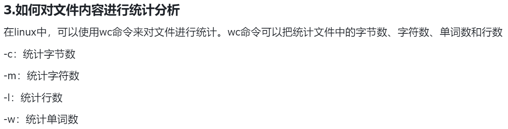

2. 写过哪些shell脚本
（1）启停脚本：
1 | !/bin/bash |
（2）集群分发脚本
（3）集群命令同时执行脚本
（4）与外部系统的导入导出（ods–>ads）
1 | !/bin/bash |
二、Hive
1. ⭐⭐Hive架构是什么样的？
定义Hive：Hive是一个基于Hadoop的数据仓库工具，可以将结构化的数据文件映射为一张数据库表，并提供类SQL查询功能，本质是将HQL转化成MapReduce程序，底层由HDFS来提供数据的存储，程序执行在Yarn上。
架构：Hive架构由用户接口、元数据存储（Metastore）和驱动（解析器、语义分析器、逻辑计划生成器、逻辑优化器、物理计划生成器、物理优化器、执行器等）组成。用户通过接口创建HQL语句，由Metastore记录对应的元数据，通过一系列驱动进行HQL语句的分析优化和查询计划的生成（或者说翻译成MapReduce程序），生成的查询计划存储在HDFS中，随后在MapReduce调用执行，最后将计算结果返回给用户。

2. ⭐Hive SQL编译成MapReduce的过程
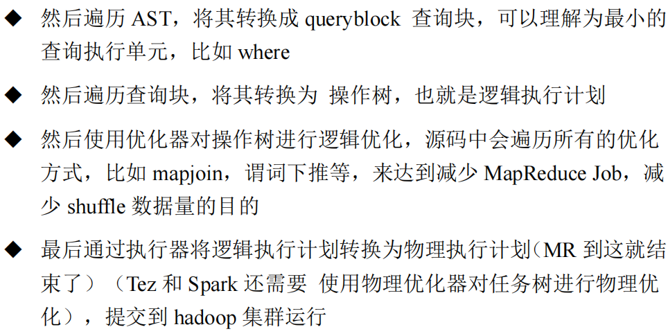①解析器（SQLParser）：将SQL字符串转换成抽象语法树（AST）
②语义分析（Semantic Analyzer）：将AST进一步划分为QeuryBlock
③逻辑计划生成器（Logical Plan Gen）：将QeuryBlock生成逻辑计划
④逻辑优化器（Logical Optimizer）：对逻辑计划进行优化
⑤物理计划生成器（Physical Plan Gen）：根据优化后的逻辑计划生成物理计划
⑥物理优化器（Physical Optimizer）：对物理计划进行优化
⑦执行器（Execution）：执行该计划，得到查询结果并返回给客户端
3. 说一说Hive的优缺点
优点：
- ①操作接口采用类SQL语法，简单容易上手
- ②免去写MapReduce，减少学习成本
- ③适合实时性不高的场景，可以处理大量的数据
- ④支持用户自定义函数
缺点：
- ①Hive常用于数据分析，不能用于实时性高的场景，延迟较高
- ②HQL表达能力有限，迭代式无法表示
- ③实现不了数据挖掘类的算法
- ④Hive的调优比较困难，粒度比较粗
4. ⭐⭐说一说Hive与传统数据库的区别
| Hive | 关系型数据库 | |
|---|---|---|
| 查询语言 | HQL | SQL |
| 数据存储位置 | HDFS | 本地文件系统 |
| 数据更新 | 不支持对数据的修改 | 经常修改 |
| 执行延迟 | 高 | 低 |
| 数据规模 | 大 | 小 |
| 是否支持主键或外键 | 不支持 | 支持 |
| 是否有索引 | 3.0版本之前支持，之后不支持 | 支持 |
5. ⭐⭐Hive内部表和外部表的区别
- 由external修饰的表为外部表，未被external修饰的表为内部表，默认创建的表都是内部表
- 内部表由Hive自身管理（包括元数据和HDFS中的数据）；外部表Hive只接管元数据，数据由HDFS管理
- 删除（drop）内部表会直接删除元数据及HDFS上的文件；删除（drop）外部表仅仅会删除元数据，HDFS上的文件并不会删除
- 清空（truncate）表操作只能清空内部表，清空外部表将报错
- 查询结果缓存只适用于托管表（内部表）
使用场景（官网翻译）：
每天采集的ng日志和埋点日志，在存储的时候建议使用外部表，因为日志数据是采集程序实时采集进来的，一旦被误删，恢复起来很麻烦。而且外部表方便数据的共享。
在做统计分析的时候用到的中间表、结果表建议使用内部表，因为这些数据不需要共享，使用内部表更为合适。并且很多时候结果分区我们只需要保留最近三天的数据，用外部表的时候删除分区时无法删除数据。
6. ⭐⭐Hive的数据类型及其类型间的转化
基本数据类型：
| Hive | 说明 | 对应java |
|---|---|---|
| tinyint | 1byte有符号整数 | byte |
| smallint | 2byte有符号整数 | short |
| int | 4byte有符号整数 | int |
| bigint | 8byte有符号整数 | long |
| boolean | 布尔类型，true或false | boolean |
| float | 单精度浮点数 | float |
| double | 双精度浮点数 | double |
| decimal | 十进制精准数据类型， decimal(10,2)：整体最多10位，小数部分两位 |
|
| varchar | 字符序列，需要指定最大长度，varchar(32) | char |
| string | 字符串，无需指定最大长度 | String |
| timestamp | 时间类型，可以存储整数，浮点型，字符串 | |
| binary | 二进制数据 |
复杂数据类型：
| 类型 | 说明 | 定义 | 取值 |
|---|---|---|---|
| array | 一组相同数据类型的值的集合 | array<string> | arr[0] |
| map | 一组相同类型的键值堆集合 | map<string, int> | map[‘key’] |
| struct | 由多个属性组成，每个属性都有自己的属性名和数据类型 | struct<id:int, name:string> | struct.id |
隐式转换：整数范围小的类型转换为范围大的类型，整形可转为float，布尔类型不能转换为其他任何类型
显式转换：cast(字段 as 需要转换的类型)
7. 运维如何对Hive进行调度？
- 将 hive 的 sql 定义在脚本当中
- 使用 azkaban 或者 oozie 进行任务的调度
- 监控任务调度页面
8. ⭐Hive中文件的存储格式，以及ORC、Parquet等列式存储的优点
Hive支持的存储格式：行式存储：TextFile（默认），SequenceFile；列式存储：ORC、Parquet
列式存储的优点：select 某几个字段效率高；
行式存储的优点：select *效率高；
ORC和Parquet都是高性能的列式存储方式。
Parquet：首尾中间由若干个row group（行组）和Footer，一个行组对应逻辑表中的若干行，一个行组中的一列保存在一个列块中，一个列块数据会被划分为若干页；Footer中存储了行组和列块的元数据信息。
行组（Row Group）：一个行组对应逻辑表中的若干行。
列块（Column Chunk）：一个行组中的一列保存在一个列块中。
页（Page）：一个列块的数据会划分为若干个页。
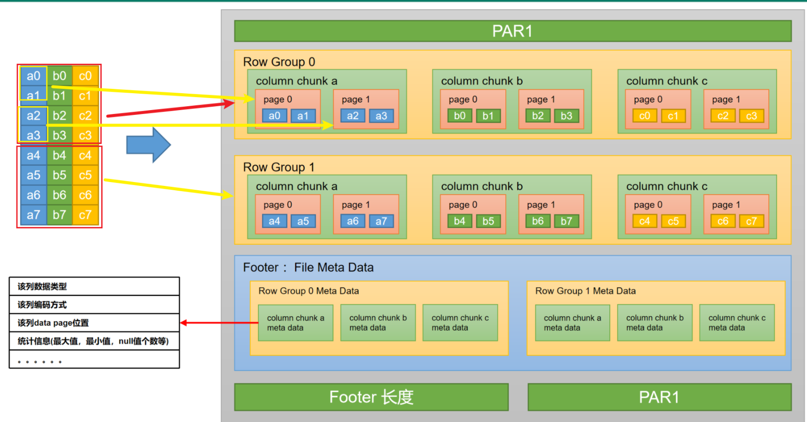- 支持嵌套的数据模型；
- 没有Map、Array这样的复杂数据结构；
- 以二进制方式存储，不可以直接读取和修改
ORC：
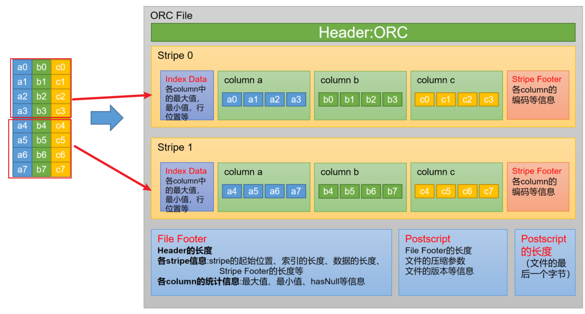 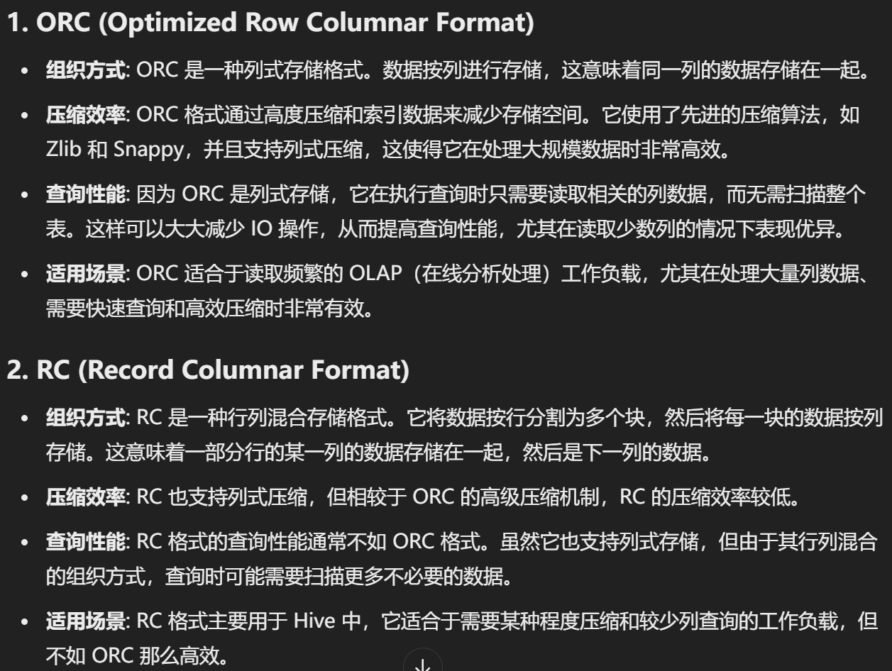每个Orc文件由Header、Body和Tail三部分组成。
其中Header内容为ORC，用于表示文件类型。
Body由1个或多个stripe组成，每个stripe一般为HDFS的块大小，每一个stripe包含多条记录，这些记录按照列进行独立存储，每个stripe里有三部分组成，分别是Index Data，Row Data，Stripe Footer。
Tail由File Footer和PostScript组成。File Footer中保存了各Stripe的其实位置、索引长度、数据长度等信息，各Column的统计信息等；PostScript记录了整个文件的压缩类型以及File Footer的长度信息等。
在读取ORC文件时，会先从最后一个字节读取PostScript长度，进而读取到PostScript，从里面解析到File Footer长度，进而读取FileFooter，从中解析到各个Stripe信息，再读各个Stripe，即从后往前读。
- ORC 中使用了更加精确的索引信息，使得在读取数据时可以指定从任意一行开始读取
- ORC 会尽可能合并多个离散的区间尽可能的减少 I/O 次数
- 以二进制方式存储，不可以直接读取和修改
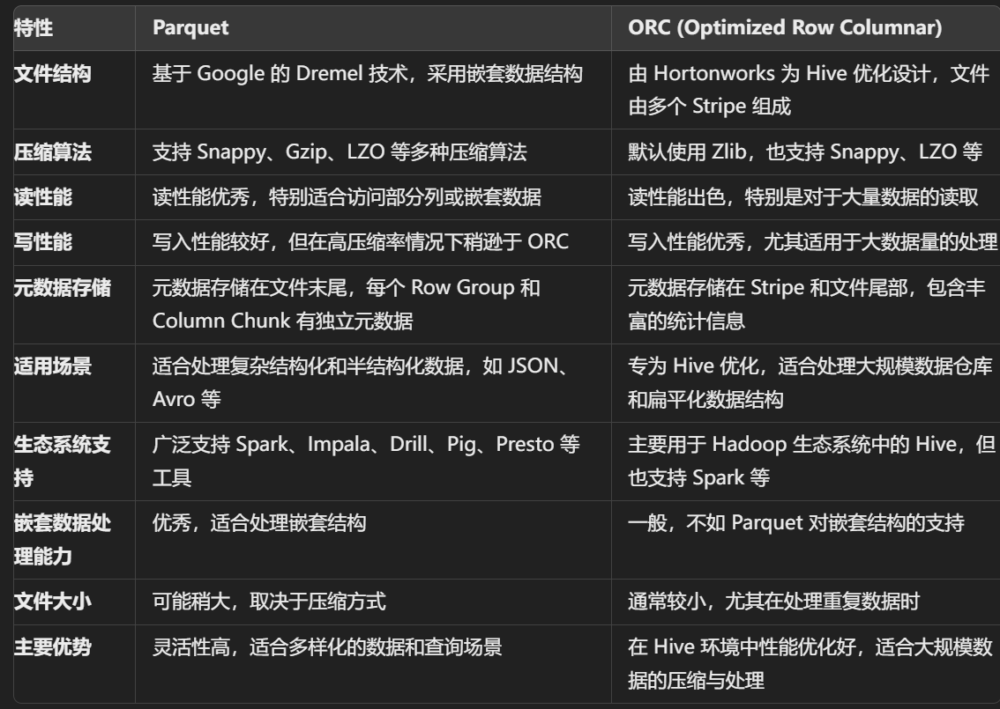
9. ⭐说说Hive的4个By区别
- order by：order by a，全局按字段a排序，只有一个Reduce。当输入规模较大时，需要较长的计算时间（生产环境中慎用）
- sort by：sort by a，为每个reduce产生一个排序文件。每个Reduce内部按字段a进行排序，对全局结果集来说不是排序
- distrbute by：distribute by a sort by b，类似MapReduce中partition（自定义分区），按照字段a进行分区，每一个分区内按照字段b进行排序，结合sort by使用。
- cluster by：cluster by a，当distribute by和sort by字段相同时，可以使用cluster by方式。按字段a进行分区，每个分区内按照字段a进行排序。不能指定升序还是降序，默认是升序的
10. ⭐⭐说一说Hive的窗口函数
窗口函数的语法中主要包括“窗口”和“函数”两部分。其中“窗口”用于定义计算范围，“函数”用于定义计算逻辑。

lag：整列向下移动；lead：整列向上移动


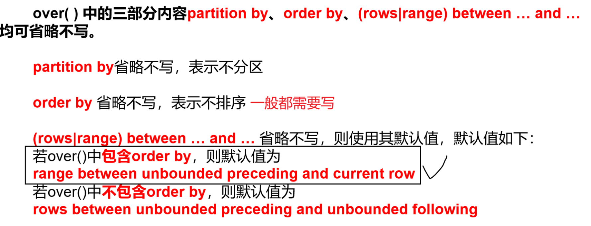

窗口函数写在select语句中：
1 | 函数() over (partition by 字段1 order by 字段2 [rows|range between...and...]) 别名 |
- 函数：max，min，sum，avg，count，lead，lag，rank，dense_rank，row_rank…
- rows|range between…and…：自定义窗口，lag和lead函数不支持自定义窗口，rank 、dense_rank、row_number不支持自定义窗口
- rank()：排序相同时会重复，总数不会变
- dense_rank()：排序相同时会重复，总数会减少
- row_number()：会根据顺序计算
11. ⭐⭐在项目中是否自定义过 UDF 、UDAF、UDTF 函数，以及用他们处理了什么问题，及自定义步骤？
自定义过
UDF：一进一出
UDAF：多进一出
UDTF：一进多出
UDF：实现给定基本数据类型的长度或者给用户的敏感信息加密
步骤：创建一个类继承GenericUDF或UDF，重写initialize方法和evaluate方法（或evalute方法），在HDFS中上传jar包，执行创建函数语句
UDTF：没定义过
步骤：创建一个类继承GenericUDTF，重写initialize方法、process方法和close方法，在HDFS中上传jar包，执行创建函数语句
添加jar包的UDF路径（该路径在上传jar包给平台的时候会获取到）
创建临时函数：create temporary function…
创建永久函数：create function…
下面是一个例子：
1 | import java.util.List; |
打成jar包上传至HDFS，获取UDF路径virefs:///hom/dp/data/udf/19/owesome-udf-example-1.0-SNAPSHOT.jar
1 | add jar virefs:///hom/dp/data/udf/19/owesome-udf-example-1.0-SNAPSHOT.jar; |
12. ⭐⭐Hive的常用函数
可以通过SHOW FUNCTIONS查看Hive的内置函数。通过DESCRIBE FUNCTION 函数名;查看函数的输入输出功能描述
1 | -- 1. substring：截取字符串 |
nvl()与coalesce()的区别:
1 | nvl(参数1,参数2);--如果第一个参数为null，则返回第二个参数，如果第一个参数不为null，则返回第一个参数 |
高级聚合函数：
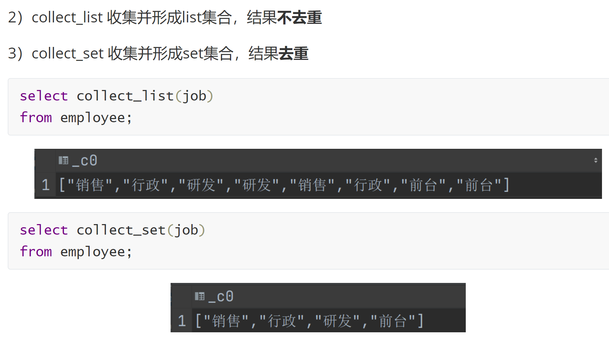炸裂函数：
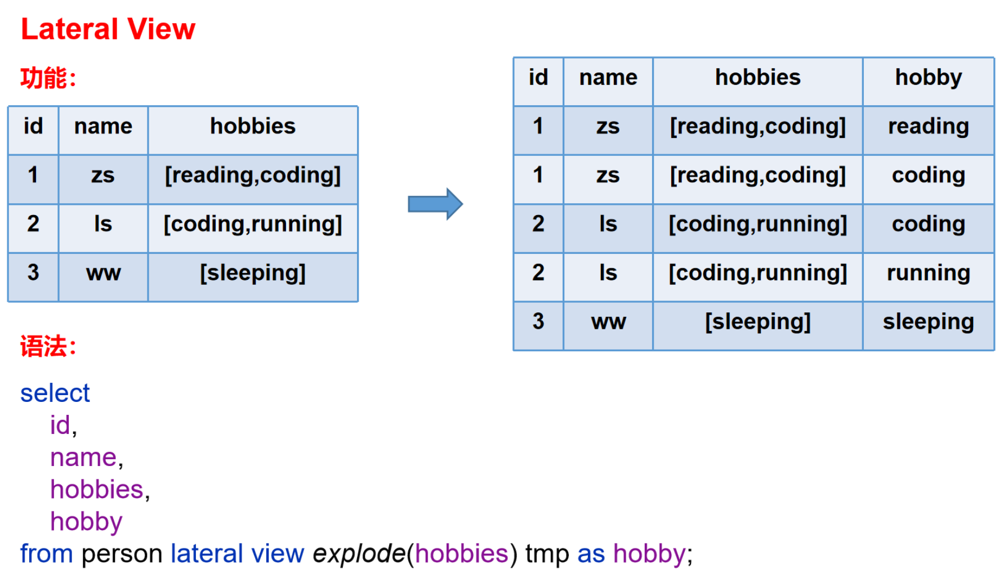13. ⭐使用过Hive解析JSON串吗？
使用过。
（1）使用Hive中的get_json_object函数（最常用）
能够解析嵌套的json，但每次只能解析一次
1 | --10.get_json_object：解析json字符串 |
1 | --实际工作中 |
（2）使用json_tuple
每次能够同时解析多个字段，不能解析嵌套的json
1 | with tmp_1 as ( |
结合炸裂函数
1 | with tmp_1 as ( |
（2）使用serde处理
考虑使用专门负责JSON文件的JSON Serde，设计表字段时，表的字段与JSON字符串中的一级字段保持一致，对于具有嵌套结构的JSON字符串，考虑使用合适复杂数据类型保存其内容。
1 | create table teacher |
14. ⭐Hive分区和分桶
Hive中的分区就是把一张大表的数据按照业务需要分散的存储到多个目录，每个目录就称为该表的一个分区。在查询时通过where子句中的表达式选择查询所需要的分区，这样的查询效率会提高很多。partitioned by(分区字段 字段类型)分区字段要求放在create结构外
- 分区字段一定是表外字段
- 不建议使用中文
- 不建议分区数过多（避免小文件过多）
- 不建议使用动态分区
分桶：按照某字段hash值%分桶数，将结果相同的写入同一个文件中，一个表没有分区直接按照整体分桶。已经分区就在每个分好区的表内进行分桶。分桶是更细粒度的范围划分。clustered by(分桶字段)分桶字段要求放在create结构内
分区/分桶区别：分区针对的是存储路径，分桶针对的是数据文件。
15. ⭐为什么Hive分区表不建议使用动态分区？什么时候会使用动态分区？（字节）
动态分区是指向分区表insert数据时，被写往的分区不由用户指定【即只写明分区字段是谁，具体哪个分区不说】，而是由每行数据的最后一个字段的值来动态的决定。使用动态分区，可只用一个insert语句将数据写入多个分区。
情况1：一级动态分区
1 | -- （1）创建目标分区表 |
情况2：二级动态分区
1 | -- 1）二级分区表建表语句 |
情况3：动静态分区混用
1 | -- 1）二级分区表建表语句 |
- 静态分区的情况下，使用where子句过滤确定的某一个分区（分区过滤），是发生在Map的上一个阶段，即在输入阶段进行路径的过滤，效率极高。动态分区由于分区不确定，所有记录都会进行
distribute by，在reduce阶段才指导每条数据应该插到哪个分区，如果分区很多，在reduce端会造成数据瓶颈，性能很低。 - 动态分区通常是在数据写入时自动创建的，因此难以预知分区数量。在某些情况下，如果分区数量过多，在HDFS中创建大量的目录和文件，造成Namenode性能降低，也会对查询性能产生负面影响。
- 动态分区可能会导致元数据和HDFS数据内容的修改，这可能会增加管理和维护的复杂性。
Hive的动态分区主要在以下场景中会被使用：
- 数据导入的需求：当有一张Hive表，里面有一个字段是时间字段，每天的数据是按这个时间字段导入进去的，这时候就需要动态分区。这是因为对于大数据批量导入来说，手动去指定分区显然是不现实的。动态分区可以在往表中插入数据的时候，动态的根据值来选择数据进入的分区。
- 分区数量庞大（分区级数多）的情况：例如气象站的气温记录数据，根据年份分区之后，还有根据月份分区，下面可能还有根据日期分区。当分区变得非常多的时候，手动去指定分区显然是不现实的。这个时候，就需要使用到动态分区。
16. ⭐⭐⭐数据倾斜怎么解决？
表现：
MapReduce：
- 有一个或多个Reduce卡住，卡在99.99%
- 有异常的reduce读写数据量远远大于其他reduce
Spark：
- Driver OOM
- Shuffle过程出错
- 单个job的stage执行时间特别久，整个任务卡在某阶段不动
- 比如我们在Spark Web UI或者本地log中发现，job0的stage1的某几个task执行得特别慢，判定job0-stage1出现了数据倾斜，那么就可以回到代码中，定位出job0-stage1主要包括了哪个shuffle类算子，此时基本就可以确定是是该算子导致了数据倾斜问题。
该Stage有Shuffle Read，所以为Shuffle Stage，出现Shuffle Stage的原因大概有三种：Join、Group by、count(distinct)，下面对具体的问题进行定位。
本质原因：
（1）map端：如果文件使用GZIP压缩等不支持文件分割操作的压缩方式时，若该不可分割的文件超大，被一个map读取时，就会发生map阶段的数据倾斜。
（2）reduce端（更容易出现）：map 到 reduce 会经过 shuffle 阶段，在 shuffle 中默认会按照 key进行重新分区，如果相同的 key 过多，那么重新分区的结果就是大量相同的 key 进入到同一个 reduce 中，导致数据倾斜
简而言之：旱的旱死涝的涝死
各种数据倾斜的原因及解决方案：
（0）通用方法：提前在map端进行combine，减少shuffle过程中传输的数据量以及Reducer端的计算量；shuffle阶段，进入环形缓冲区之前，可以自定义分区
（1）空值引发的数据倾斜
原因：实际业务中有些大量的 null 值或者一些无意义的数据参与到计算作业中，表中有大量的 null 值，如果表之间进行 join 操作，就会有 shuffle 产生，这样所有的 null 值都会被分配到一个 reduce 中，必然产生数据倾斜。
解决方案：可以直接不让 null 值参与 join 操作，关联条件排除掉null值或者可以给null 值随机赋值，这样它们的 hash 结果就不一样，就会进到不同的 reduce 中
1
2
3
4
5
6SELECT *
FROM log a
LEFT JOIN users b ON CASE
WHEN a.user_id IS NULL THEN concat('hive_', rand())
ELSE a.user_id
END = b.user_id;
（2）关联字段的不同数据类型引发的数据倾斜
- 原因：对于两个表join，表a中需要 join的字段key为 int，表b中key 字段既有string类型也有 int 类型。当按照 key 进行两个表的 join 操作时，默认的 Hash 操作会按 int 型的 id 来进行分配，这样所有的 string 类型都被分配成同一个 id，结果就是所有的 string 类型的字段进入到一个 reduce 中，引发数据倾斜。
- 解决方案：如果 key 字段既有 string 类型也有 int 类型，默认的 hash 就都会按 int 类型来分配，那我们直接把 int 类型都转为 string 就好了，这样 key 字段都为 string，hash 时就按照 string 类型分配了
（3）不可拆分大文件引发的数据倾斜
- 原因：如果文件使用GZIP压缩等不支持文件分割操作的压缩方式时，若该不可分割的文件超大，被一个map读取时，就会发生map阶段的数据倾斜。
- 解决方案：这种数据倾斜问题没有什么好的解决方案，只能将使用 GZIP 压缩等不支持文件分割的文件转为 bzip 和 zip 等支持文件分割的压缩方式。
（4）⭐分组聚合导致的数据倾斜
原因：如果group by分组字段的值分布不均，就可能导致大量相同的key进入同一Reduce，从而导致数据倾斜问题
解决方案：
开启map-side聚合：开启Map-Side聚合后，数据会现在Map端完成部分聚合工作。这样一来即便原始数据是倾斜的，经过Map端的初步聚合后，发往Reduce的数据也就不再倾斜了。最佳状态下，Map-端聚合能完全屏蔽数据倾斜问题。
开启Skew-GroupBy优化：Skew-GroupBy的原理是启动两个MR任务，第一个MR按照随机数分区，将数据分散发送到Reduce，完成部分聚合，第二个MR按照分组字段分区，完成最终聚合。
举具体例子：项目中的order_detail表，大概2000万行数据，其中province_id字段99%以上都是1（北京），也就是大部分的订单都是北京这个地区产生的
1 | select |

开启map-side聚合：

开启Skew-GroupBy优化：

（5）⭐表join连接时引发的数据倾斜：
原因：未经优化的join操作，默认是使用common join算法，也就是通过一个MapReduce Job完成计算。Map端负责读取join操作所需表的数据，并按照关联字段进行分区，通过Shuffle，将其发送到Reduce端，相同key的数据在Reduce端完成最终的Join操作。如果关联字段的值分布不均，就可能导致大量相同的key进入同一Reduce，从而导致数据倾斜问题
解决方案：
①map join：适用于大表join小表。通过两个只有Map阶段的Job完成一个Join工作：第一个Job读取小表数据上传HDFS缓存上，第二个Job先从HDFS缓存种读取小表数据，并缓存在Map Task的内存中，然后扫描大表数据。使用map join算法，join操作仅在map端就能完成，没有shuffle操作，没有reduce阶段，自然不会产生reduce端的数据倾斜。
②skew join： 适用于 inner join 时发生数据倾斜的场景，整体思路就是使用独立的作业和 Map join 来处理倾斜的键。为倾斜的大key单独启动一个map join任务进行计算，其余key进行正常的common join
③调整SQL语句：将数据倾斜的表的倾斜字段随机分成id_0和id_1两类（打散），将另一张表扩容一倍，一半id_0，一半id_1，再将这两张修改后的表join
1
2
3
4
5
6
7
8
9
10
11
12
13
14
15
16
17
18
19
20
21
22
23
24
25
26
27--优化前
select
*
from A
join B
on A.id=B.id;
--优化后
select
*
from(
select --打散操作
concat(id,'_',cast(rand()*2 as int)) id,
value
from A
)ta
join(
select --扩容操作
concat(id,'_',0) id,
value
from B
union all
select
concat(id,'_',1) id,
value
from B
)tb
on ta.id=tb.id;比如表A的id字段是倾斜的(id=1的记录远大于其它id)，可以先把id=1的记录(倾斜字段)筛选出来作为表C(临时表)，然后在id字段上加一个随机数后缀，然后表B膨胀相应的倍数并与C相关联，将表A无倾斜的数据和原来的表B相关联，最后union all两次关联的结果
1
2
3
4
5
6
7
8
9
10
11
12
13
14
15
16
17
18
19
20
21
22
23
24
25
26
27
28
29
30
31
32select *
from
(
select concat(id, '_', FLOOR(RAND() * 5)+1)
from A
where id = 1
) as t1
left join
(
select concat(id, '_', 1) from B where id = 1
union all
select concat(id, '_', 2) from B where id = 1
union all
select concat(id, '_', 3) from B where id = 1
union all
select concat(id, '_', 4) from B where id = 1
union all
select concat(id, '_', 5) from B where id = 1
) as t2
on t1.id = t2.id
union all
select
from A as t1 left join B as t2
on A.id = B.id
where A.id != 1
-- 总结：
select A.id from A join B on A.id = B.id where A.id != 1
union all
select A.id from A join B on A.id = B.id where A.id = 1 and B.id = 1;
举具体例子：项目中的order_detail表，大概2000万行数据，其中province_id字段99%以上都是1（北京），也就是大部分的订单都是北京这个地区产生的
1 | select |

map join优化：只有map任务，没有reduce任务


skew join：

（6）确实无法减少数据量引发的数据倾斜
这类问题最直接的方式就是调整 reduce 所执行的内存大小。调整 reduce 的内存大小使用 mapreduce.reduce.memory.mb 这个配置
（7）数据膨胀引发的数据倾斜
- 原因：在多维聚合的时候，如果分组聚合的字段过多，且操作表的数据量很大，会导致数据在Map端产出到reduce端的数据量急速膨胀，从而导致内存溢出，如果含有倾斜的key还会导致数据倾斜。
- 解决方案：
配置参数hive.new.job.grouping.set.cardinality自动控制作业拆解，如果多维聚合的键值组合大于该值，会启用新的任务去处理大于该值之外的组合
17. ⭐Hive小文件产生的原因
（1）直接向表中插入数据：每次插入都会产生一个文件，多次插入少量数据就会出现多个小文件
（2）通过load方式加载数据，每导入一个文件hive表就会产生一个文件
（3）通过查询方式加载数据（最常见）：其中，文件数量=ReduceTask数量×分区数（只有map阶段就是，文件数量=MapTask数量×分区数）
1 | insert overwrite table A select s_id,c_name,s_score from B; |
18. ⭐HIve小文件过多的危害
（1）对于HDFS而言，其本身就不适合存储大量小文件，小文件过多会导致NameNode元数据特别大，占用内存太多，影响HDFS性能。如果数据块设置的太小，一个大文件就会被分成多个数据块，增加整个大文件的寻址时间，寻址时间超过读取时间。
（2）对Hive而言，在进行查询时，每个小文件都会启动一个Map任务来完成，Map任务启动和初始化的时间远远大于逻辑处理的时间，本末倒置，造成资源浪费
14. ⭐Hive小文件过多怎么解决？
（1）Map端输入文件合并
合并Map端输入的小文件，是指将多个小文件划分到一个切片中，进而由一个Map Task去处理。目的是防止为单个小文件启动一个Map Task，浪费计算资源。也就是使用CombineHiveInputFormat
相关参数为：
1 | --可将多个小文件切片，合并为一个切片，进而由一个map任务处理 |
（2）Reduce端文件合并
合并Reduce端输出的小文件，是指将多个小文件合并成大文件。目的是减少HDFS小文件数量。其原理是根据计算任务输出文件的平均大小进行判断，若符合条件，则单独启动一个额外的任务进行合并。
相关参数为：
1 | --开启合并map only任务输出的小文件 |
（3）减少Reduce的数量
1 | --reduce 的个数决定了输出的文件的个数，所以可以调整reduce的个数控制hive表的文件数量 |
（4）使用Hive自带的concatenate命令，自动合并小文件
1 | --对于非分区表 |
（5）使用hadoop的archive将小文件归档
Hadoop Archive简称HAR，是一个高效地将小文件放入HDFS块中的文件存档工具，它能够将多个小文件打包成一个HAR文件，这样在减少namenode内存使用的同时，仍然允许对文件进行透明的访问
1 | --用来控制归档是否可用 |
（6）减少JVM开关时间
如果有大量小文件要处理，那么频繁启动和关闭JVM会浪费大量时间，所以减少JVM开关时间可以减少作业处理时间
（7）如何解决分区过多（动态分区）容易产生小文件的问题？
- 增加
spark.sql.shuffle.partitions参数。
Spark的默认shuffle分区数较高，特别是在数据规模较小的情况下，这可能导致每个分区的数据量非常少，进而产生小文件。根据数据量适当减少shuffle分区的数量，例如将spark.sql.shuffle.partitions从默认的200减少到50或更少。这样做会使得每个分区的数据量增大，从而减少生成的小文件数量。 - 合并文件
使用coalesce或repartition来合并小文件。例如，在保存到HDFS之前使用coalesce将分区数减少，从而减少输出的文件数。 - 动态分区数调优
在进行多级动态分区时，若每个分区的数据量很小，可能会导致大量小文件。根据数据分布情况，设置合理的动态分区数限制，避免数据被分得过于细致。例如，在Hive中使用SET hive.exec.dynamic.partition.mode=nonstrict;和SET hive.exec.max.dynamic.partitions.pernode=1000;来控制每个节点的最大分区数。调整分区字段的组合，例如将粒度较细的字段合并为一个较粗的分区字段，以减少分区数 - 合理设置分区字段
分区字段的选择和粒度会影响文件的生成，过细的分区会产生大量小文件。在定义分区字段时，选择能够适当分割数据但不过度细化的字段。例如，避免以timestamp作为分区字段，而是使用date、month、year等较粗的时间粒度。使用辅助字段，如根据数据的使用频率或查询需求，将某些分区字段调整为非分区字段，减少分区数量。
19. ⭐⭐⭐Hive优化有哪些？
（0）资源配置
MapReduce引擎：
- MapTask申请container内存大小：
mapreduce.map.memory.mb - MapTask申请container的CPU核数：
mapreduce.map.cpu.vcores - ReduceTask申请container内存大小：
mapreduce.reduce.memory.mb - ReduceTask申请container的CPU核数：
mapreduce.reduce.cpu.vcores
Spark引擎：
- Executor申请container的CPU核数：
spark.executor.cores - Executor申请container的JVM进程堆内内存大小：
spark.executor.memory - Executor申请container的JVM进程堆外内存大小：
spark.executor.memoryOverhead - Executor的个数：静态：
spark.executor.instances；动态：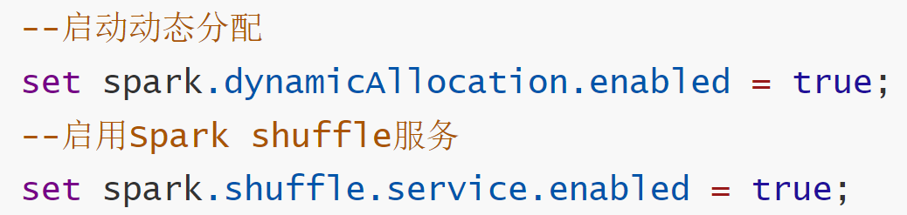还可以设置Executor的初始值，最大值和最小值 - Driver申请container的JVM进程堆内内存大小：
spark.driver.memory - Driver申请container的JVM进程堆外内存大小：
spark.driver.memoryOverhead
（1）数据存储及压缩优化
一般表格存储格式选用ORC（占有更少的存储），压缩格式选用snappy。因为Hive底层使用MR计算框架，数据流从HDFS到磁盘再到HDFS，使用ORC+snappy可以降低IO读写，还能降低网络传输量。
（2）有效地减小数据集将大表拆分成子表，结合使用分区表和分桶表
（3）HQL语法优化
- 分组聚合优化：主要围绕着减少Shuffle数据量进行，具体做法是map-side聚合。在map端维护一个hash table，完成部分聚合，然后再发送至reduce端
1 | --启用map-side聚合 |
Join优化：
①Common Join：Hive种最稳定的Join算法，通过一个MapReduce Job完成一个Join操作。Map端负责读取join操作所需表的数据，并按照关联字段进行分区，通过Shuffle，将其发送到Reduce端，相同key的数据在Reduce端完成最终的Join操作。
②Map Join：适用于大表join小表。通过两个只有Map阶段的Job完成一个Join工作：第一个Job读取小表数据上传HDFS缓存上，第二个Job先从HDFS缓存种读取小表数据，并缓存在Map Task的内存中，然后扫描大表数据；Hive优化器根据参与Join表的数据量大小，自动触发开启Map Join优化
1
2
3
4--启用Map Join自动转换。
set hive.auto.convert.join=true;
--使用无条件转Map Join。
set hive.auto.convert.join.noconditionaltask=true;③Bucket Map Join：对Map Join算法的改进，其打破了Map Join只适用于大表join小表的限制，可用于大表join大表的场景，若能保证参与join的表均为分桶表，且关联字段为分桶字段，且其中一张表的分桶数量是另外一张表分桶数量的整数倍，就能保证参与join的两张表的分桶之间具有明确的关联关系，所以就可以在两表的分桶间进行Map Join操作了。这样一来，第二个Job的Map端就无需再缓存小表的全表数据了，而只需缓存其所需的分桶即可。
1
2--启用bucket map join优化功能
set hive.optimize.bucketmapjoin = true;④Sort Merge Bucket Map Join：用于大表join小表，参与join的表均为分桶表，且需保证分桶内的数据是有序的，且分桶字段、排序字段和关联字段为相同字段，且其中一张表的分桶数量是另外一张表分桶数量的整数倍。SMB Map Join与Bucket Map Join相比，在进行Join操作时，Map端是无需对整个Bucket构建hash table，也无需在Map端缓存整个Bucket数据的，每个Mapper只需按顺序逐个key读取两个分桶的数据进行join即可。
1
2
3
4--启动Sort Merge Bucket Map Join优化
set hive.optimize.bucketmapjoin.sortedmerge=true;
--使用自动转换SMB Join
set hive.auto.convert.sortmerge.join=true;
（4）数据倾斜的优化（看前面）
（5）小文件过多优化（看前面）
（6）任务并行度优化
设置Map端个数（并行度）：
①减少map个数：若查询表中存在大量小文件，使用Hive提供的CombineHiveInputFormat，多个小文件合并为一个切片，从而控制map task个数
②增加map个数：：若SQL语句中有正则替换、json解析等复杂耗时的查询逻辑时，map端的计算会相对慢一些。若想加快计算速度，在计算资源充足的情况下，可考虑增大map端的并行度，令map task多一些，每个map task计算的数据少一些。
设置Reduce端个数（并行度）：
可以根据用户自己指定，也可以由Hive自行根据MR job输入的文件大小进行估算
（5）其他优化
CBO优化：基于计算成本（CPU、本地IO、HDFS IO）的优化。目前CBO在hive的MR引擎下主要用于join的优化，例如多表join的join顺序。
1
2--是否启用cbo优化
set hive.cbo.enable=true;谓词下推优化：尽量将过滤操作前移，以减少后续计算步骤的数据量
1
2--是否启动谓词下推（predicate pushdown）优化
set hive.optimize.ppd = true;矢量化查询：依赖于CPU的矢量化计算
1
set hive.vectorized.execution.enabled=true;
Fetch抓取：Hive中对某些情况的查询可以不必使用MapReduce计算。例如：select * from emp;在这种情况下，Hive可以简单地读取emp对应的存储目录下的文件，然后输出查询结果到控制台。
1
2
3
4
5--是否在特定场景转换为fetch 任务
--设置为none表示不转换
--设置为minimal表示支持select *，分区字段过滤，Limit等
--设置为more表示支持select 任意字段,包括函数，过滤，和limit等
set hive.fetch.task.conversion=more;本地模式：通过本地模式在单台机器上处理所有的任务。对于小数据集，执行时间可以明显被缩短。
1
2--开启自动转换为本地模式
set hive.exec.mode.local.auto=true;并行模式：Hive会将一个SQL语句转化成一个或者多个Stage，并行执行没有依赖关系的Stage
1
2--启用并行执行优化
set hive.exec.parallel=true;严格模式：开启严格模式，防止危险操作
相关性优化：可以减少重复的shuffle操作。如果一个join操作后输出的结果是作为group by阶段的操作的输入，这种情况下group by操作没有必要重新shuffle，这种操作与操作之间的相关性在开启上述参数会被感知到并且减少shuflle操作
1 | set hive.optimize.correlation = true; |
20. ⭐Hive的严格模式
①用户不允许扫描所有分区表，只能用where过滤一些分区字段。因为分区表通常非常大，扫描所有会浪费巨大资源
②对于使用了order by的语句的查询，必须使用limit语句，这样可以可以防止Reduce额外执行很长一段时间
③限制笛卡尔积查询
21. HiveSQL语句的正确执行顺序
from .. where .. join .. on .. select .. group by .. select .. having .. distinct .. order by .. limit .. union/union all
可以看到 group by 是在两个 select 之间，我们知道 Hive 是默认开启 map 端的 group by 分组的，所以在 map 端是 select 先执行，在 reduce 端是 group by 先执行。
在执行计划中，每个stage都是一个独立的MR。
22. Tez引擎的优点？
Tez 可以将多个有依赖的作业转换为一个作业，这样只需写一次 HDFS，且中间节点较少，从而大大提升作业的计算性能。Tez支持DAG作业的计算，绕过了MapReduce很多不必要的中间的数据存储和读取的过程，直接在一个作业中表达了MapReduce需要多个作业共同协作才能完成的事情。
相比于MapReduce，当查询需要有多个reduce逻辑时，Hive的MapReduce引擎会将计划分解，每个Reduce提交一个MR作业。这个链中的所有MR作业都需要逐个调度，每个作业都必须从HDFS中重新读取上一个作业的输出并重新洗牌。而在Tez中，几个reduce接收器可以直接连接，数据可以流水线传输，而不需要临时HDFS文件，这种模式称之为MRR（Map-reduce-reduce）
23. Hive计算引擎
目前 Hive 支持 MapReduce、Tez 和 Spark 三种计算引擎
- MapReduce：这是Hive最初使用的计算引擎，也是Hadoop生态系统中的主要计算模型。MapReduce通过将任务分解成多个小任务（Map和Reduce阶段）来处理数据，这使得它非常适合大规模数据处理。然而，MapReduce的批处理特性使得它在处理交互式查询和实时数据处理方面不够高效。
- Tez：完全基于内存，Tez将MapReduce的两次扫描优化为一次扫描，提高了查询性能。一般用于快速出结果，数据量较小的场景
- Spark：Spark是另一种高性能的计算引擎，它提供了内存计算和DAG（有向无环图）执行引擎，使得数据处理速度更快。一般处理天指标
24. Hive与HBase的区别
| Hive | HBase | |
|---|---|---|
| 数据模型 | 基于Hadoop的数据仓库工具，数据查询转化成MapReduce执行 | 基于HDFS上的Nosql数据源，基于数据库本身实时查询，不运行MapReduce |
| SQL支持 | 支持SQL查询 | 本身不支持，需要集成Phoenix |
| 查询速度 | 默认MR引擎，查询速度较慢 | 有自己的一级索引，rowkey，基于一级索引进行数据查询，查询较快 |
| 表结构 | 纯逻辑表，只有表的定义 | 物理表，有独立的物理数据结构 |
| 运行依赖 | 依赖HDFS存储，MapReduce计算 | 依赖HDFS存储，zookeeper协调服务 |
| 应用场景 | 构建离线数仓，海量数据分析 | 大数据实时查询，海量数据存储 |
25. 讲一下Union和Join的区别
UNION是两张表进行上下拼接，产生的两个记录集(字段要一样的)并在一起，成为一个新的记录集，分为UNION和UNION ALL两种方法；JOIN 是两张表进行左右连接，条件匹配的记录将合并产生一个记录集，有LEFT JOIN、RIGHT JOIN、INNER JOIN、OUTER JOIN等多种方法。
26. SQL语句转换成MapReduce作业的基本原理
用MapReduce实现连接操作
假设连接（join）的两个表分别是用户表User(uid,name)和订单表Order(uid,orderid)，具体的SQL命令：
1 | SELECT name, orderid FROM User u JOIN Order o ON u.uid=o.uid; |
上图描述了连接操作转换为MapReduce操作任务的具体执行过程。
首先，在Map阶段，
User表以uid为key，以name和表的标记位（这里User的标记位记为1）为value，进行Map操作，把表中记录转换生成一系列KV对的形式。比如，User表中记录(1,Lily)转换为键值对(1,< 1,Lily>)，其中第一个“1”是uid的值，第二个“1”是表User的标记位，用来标示这个键值对来自User表；
同样，Order表以uid为key，以orderid和表的标记位（这里表Order的标记位记为2）为值进行Map操作，把表中的记录转换生成一系列KV对的形式；
接着，在Shuffle阶段，把User表和Order表生成的KV对按键值进行Hash，然后传送给对应的Reduce机器执行。比如KV对(1,< 1,Lily>)、(1,< 2,101>)、(1,< 2,102>)传送到同一台Reduce机器上。当Reduce机器接收到这些KV对时，还需按表的标记位对这些键值对进行排序，以优化连接操作；
最后，在Reduce阶段，对同一台Reduce机器上的键值对，根据“值”（value）中的表标记位，对来自表User和Order的数据进行笛卡尔积连接操作，以生成最终的结果。比如键值对(1,< 1,Lily>)与键值对(1,< 2,101>)、(1,< 2,102>)的连接结果是(Lily,101)、(Lily,102)。
用MR实现分组操作
假设分数表Score(rank, level)，具有rank（排名）和level（级别）两个属性，需要进行一个分组（Group By）操作，功能是把表Score的不同片段按照rank和level的组合值进行合并，并计算不同的组合值有几条记录。SQL语句命令如下：
1 | SELECT rank,level,count(*) as value FROM score GROUP BY rank,level; |
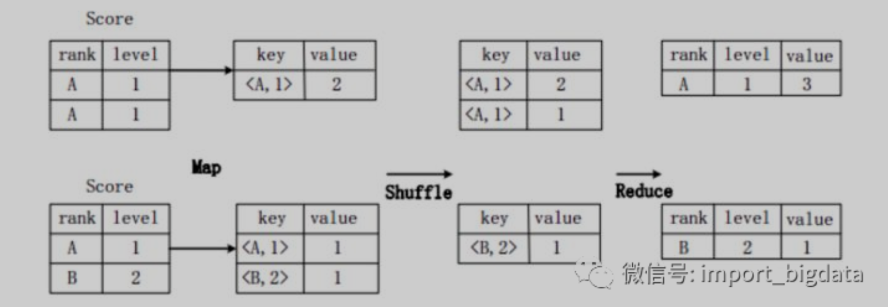
上图描述分组操作转化为MapReduce任务的具体执行过程。
首先，在Map阶段，对表Score进行Map操作，生成一系列KV对，其键为< rank, level>，值为“拥有该< rank, level>组合值的记录的条数”。比如，Score表的第一片段中有两条记录(A,1)，所以进行Map操作后，转化为键值对(< A,1>,2);
接着在Shuffle阶段，对Score表生成的键值对，按照“键”的值进行Hash，然后根据Hash结果传送给对应的Reduce机器去执行。比如，键值对(< A,1>,2)、(< A,1>,1)传送到同一台Reduce机器上，键值对(< B,2>,1)传送另一Reduce机器上。然后，Reduce机器对接收到的这些键值对，按“键”的值进行排序；
在Reduce阶段，把具有相同键的所有键值对的“值”进行累加，生成分组的最终结果。比如，在同一台Reduce机器上的键值对(< A,1>,2)和(< A,1>,1)Reduce操作后的输出结果为(A,1,3)。
27. ⭐⭐Hive元数据存储了什么内容？
元数据包括：数据库（默认是default）、表名、表的拥有者、列/分区字段、表的类型（是否是外部表）、表的数据所在目录等。
Hive的元数据主要分为5大部分：数据库相关的元数据、表相关的元数据、分区相关的元数据、文件存储的元数据、其他
- 数据库相关的元数据：所有数据库的库名、存储地址、属性、权限等等
- 表相关的元数据：数据表所属的数据库、创建时间、创建者、表的类型、属性、表统计信息（存储的文件个数、总文件大小、总行数、分区数、数据量）
- 分区相关的元数据：分区列，分区创建时间、分区统计时间
- 文件存储的元数据：文件存储的HDFS路径，输入输出格式
- 其他：事务信息，锁信息
28. ⭐说一说SQL执行计划的各个操作Operator
整体上分为Map operator Tree（Map端执行计划操作树）和Reduce Operator Tree（Reduce端执行计划操作树）
TableScan：表扫描操作
Filter Operator：过滤操作
Select Operator：列投影操作
Group By Operator：分组聚合操作
Reduce Output Operator：Map端聚合后的信息输出到reduce操作
sort order：排序操作
PTF Operator：窗口函数操作
Join Operator：表连接操作
File Output Operator：文件输出操作
29. ⭐⭐详细说一下count(distinct)优化原理
只有一个count(distinct)语句，如果系统引擎会自动做优化，那就看是否进行两部聚合（内层groupby+count，外层sum）效率更高。如果系统不会自动进行优化，需要我们手动优化，我们就需要看count(distinct)的字段是否分布很不均匀，如果均匀没必要优化，不均匀有可能出现数据倾斜，有必要优化。配置set hive.optimize.countdistinct=true，即使出现数据倾斜也能实现自动优化。
当有多个count(distinct)语句，distinct算子在处理过程中会将原有数据膨胀，有几个distinct关键字就会在Map端膨胀几倍。有两种优化手段：第一种就是代码层面拆分为两个两层，内层groupby+count，外层sum；第二种方法是设置spark.sql.files.maxPartitionBytes为更小的值，让每一个task处理的数据少一些
1 | --代码1 |
30. ⭐Hive中join的底层实现以及几种常见的join语法的差别
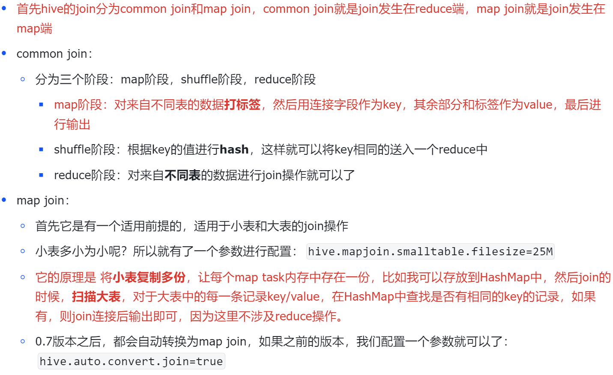
innor join（join）:内连接：只有进行连接的两个表中都存在与连接条件相匹配的数据才会被保留下来
left join:只要左表存在的都会返回，右表不存在的补null
right join:只要右表存在的都会返回，左表不存在的补null
full join：返回两个表的并基，左表和右表中不存在的都补null
left semi join:返回左表/数据集中与右表/数据集匹配的记录，不会返回左表的所有记录，不会因此形成null值。用于判断一个表的数据在另一个表中是否有相同的数据。可用于替代Hive中in/exists类型的子查询（执行计划相同）
1 | select * from tab1 |
注意：hive不支持右半连接，semi join比通常的inner join要更高效，因为对于左表中一条指定的记录，在右边表中一旦找到匹配的记录，Hive就会立即停止扫描，左边表中选择的列是可以预测的
left semi join的限制是，右侧表只能在连接条件（on子句）中引用，而不能在where或select子句中引用。
笛卡尔积：
1 | -- 笛卡尔积写法1 |
cross join：返回左右两表连接字段的笛卡尔积
31. ⭐高级分组聚合
（1）grouping sets
在一个GROUP BY查询中，根据不同的维度组合进行聚合，等价于将不同维度的GROUP BY结果集进行Union ALL
1 | select a,b,c from tmp group by a,b,c grouping sets((a,b,c),(a,b),(b,c),(a,c),(a),(b),(c),()) |
（2）cube：根据group by的维度的所有组合进行聚合
1 | group by a,b,c with cube |
（3）rollup：是cube的子集，以最左侧的维度为主，从该维度进行层级聚合
1 | group by a,b,c with rollup |
32. Hive3.0的物化视图
三、Hadoop
3.1 前置知识
0. 一句话介绍hadoop
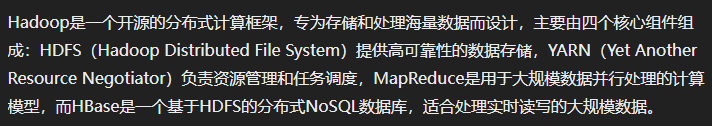
1. Hadoop的运行模式
本地模式（单机，仅运行官方案例），伪分布式模式（单机，模拟分布式环境），完全分布式模式（多台服务器分布式集群）
2. 说一说你的Hadoop集群配置

NameNode是HDFS的主节点，ResourceManager是YARN的主节点。
HDFS中的DataNode主要负责存储数据，每个服务器节点都部署一台，NameNode和SecondaryNameNode分别部署在102和104节点上。YARN的NodeManager是单个节点服务器上的资源和任务管理器，在每台节点上都部署一台，ResourceManager主要负责集群整体的资源调度工作，非常消耗内存，不要和同样消耗内存的NameNode配置在同一台节点上（所以将其配置在103节点上）。除此之外，在102上配置一个历史服务器，用于回溯历史任务运行情况
3. Hadoop的配置文件
- core-site.xml：主要用于将分布式文件系统HDFS的NameNode的入口地址和分布式文件系统中的数据 存储于服务器本地磁盘中进行配置。
- hdfs-site.xml：主要对HDFS的属性进行配置
- yarn-site.xml：主要对YARN的属性进行配置
- mapred-site.xml：主要对MR的属性进行配置
- workers：配置从节点角色
4. Hadoop的常用端口号

5. hadoop1.0 2.0 3.0的区别
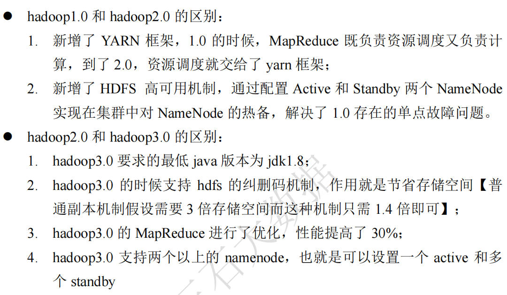3.2 HDFS
1. HDFS的定义及优缺点
（1）定义：Hadoop分布式文件系统，适用于一次写入，多次读取的场景
（2）优点：
- 高容错性（多个副本），数据文件上传后，可以自动存储为多个副本
- 适合处理大数据
- 可以构建在廉价的机器上
（3）缺点：
- 不适合低时间延迟的数据访问
- 无法存储大量小文件（对NameNode内存占用大，消耗性能；小文件存储寻址时间超过读取时间，造成资源浪费）
- 文件不支持并发写入操作，不允许多个线程同时写文件。对于一个文件的写入操作，只能以“仅添加”的模式在文件末尾写入数据，不支持在文件的任意位置进行修改。
2. ⭐介绍一下HDFS的基本架构
HDFS 主要包括三个部分，namenode，datanode 以及 secondary namenode。这里主要讲一下他们的作用：
- namenode 主要负责存储数据的元数据信息，不存储实际的数据块，
- datanode 就是存储实际的数据块，
- secondary namenode 主要是定期合并 FsImage 和 edits 文件
（这里可以进行扩展，讲一下为什么有他们的存在？首先 namenode 存储的元数据信息是会放在内存中，因为会经常进行读写操作，放在磁盘的话效率就太低了，那么这时候就会有一个问题，如果断电了，元数据信息不就丢失了吗？所以也需要将元数据信息存在磁盘上，因此就有了用来备份元数据信息的 FsImage 文件，那么是不是每次更新元数据信息，都需要操作FsImage 文件呢？当然不是，这样效率不就又低了吗，所以我们就引入了 edits文件，用来存储对元数据的所有更新操作，并且是顺序写的方式，效率也不会太低，这样，一旦重启 namenode，那么首先就会进行 FsImage 文件和 edits 文件的合并，形成最新的元数据信息。这里还会有一个问题，但是如果一直向 edits 文件进行写入数据，这个文件就会变得很大，那么重启的时候恢复元数据就会很卡，所以这里就有了 secondary namenode 在 namenode 启动的时候定期来进行 fsimage和 edits 文件的合并，这样在重启的时候就会很快完成元数据的合并）
（1）Client：客户端
- 文件切分。文件上传HDFS的时候，Client将文件切分成一个一个的Block，然后进行上传
- 与NameNode交互，获取文件的位置信息和文件块信息。
- 与DataNode交互，读取或写入数据。
- 使用命令访问和管理HDFS
（2）NameNode：主节点，存储数据的元数据信息，不存储具体的数据
- 管理HDFS的名称空间
- 配置副本策略
- 管理数据块（Block）映射信息
- 处理客户端读写请求
（3）DataNode：从节点，NameNode下达命令，DataNode执行实际的操作
- 存储实际的数据块
- 执行数据块的读写操作
（4）SecondaryNameNode：并不是NameNode的热备。当NameNode挂掉的时候，它并不能马上替换NameNode并提高服务
- 辅助NameNode，分担其工作量，定期合并Fsimage和Edits，并推送给NameNode
- 在紧急情况下，可辅助恢复Name Node
3. ⭐HDFS的文件块大小，为什么块的大小不能设置太大也不能设置太小？
2.x、3.x版本中是128M。（HDFS块大小设置主要取决于磁盘传输速率）
HDFS中平均寻址时间大约是10ms，根据经验寻址时间为传输时间的1%为最佳，则传输时间为10ms/0.01=1000ms=1s，目前磁盘普遍传输速率为100MB/s，所以最佳block大小为100MB/s * 1s = 100MB
- 如果数据块设置的太小，一个大文件就会被分成多个数据块，增加整个大文件寻址的时间，出现小文件问题（对NameNode造成存储负担）
- 如果数据块设置的的太大，磁盘传输数据的时间占比会增大。
4. ⭐⭐请说一下HDFS读写数据流程

HDFS写数据流程：hadoop fs -put a.tat /user/sl/
- Client客户端发送上传请求，通过 RPC 与 NameNode 建立通信，NameNode检查该用户是否有上传权限，以及上传的文件是否在 HDFS 对应的目录下重名，如果这两者有任意一个不满足，则直接报错，如果两者都满足，则返回给客户端一个可以上传的信息；
- Client 根据文件的大小进行切分，默认 128M 一块，切分完成之后给NameNode 发送请求第一个 block 块上传到哪些服务器上；
- NameNode 收到请求之后，根据机架感知的副本放置策略进行文件分配，返回可用的 DataNode 的地址；（数据文件默认在 HDFS 上存放三份,存储策略为本地一份，同机架内其它某一节点上一份, 不同机架的某一节点上一份）
- 客户端收到地址之后与服务器地址列表中的一个节点如 A 进行通信，本质上就是 RPC 调用，建立 pipeline，A 收到请求后会继续调用 B，B 在调用 C，将整个 pipeline 建立完成，逐级返回 Client
- Client 开始向 A 上发送第一个 block（先从磁盘读取数据然后放到本地内存缓存），以 packet（数据包，64kb）为单位，A 收到一个 packet 就会发送给B，然后 B 发送给 C，A 每传完一个 packet 就会放入一个应答队列等待应答；
- 数据被分割成一个个的 packet 数据包在 pipeline 上依次传输，在 pipeline反向传输中，逐个发送 ack（命令正确应答），最终由 pipeline 中第一个DataNode 节点 A 将 pipelineack 发送给 Client；
- 当一个 block 传输完成之后, Client 再次请求 NameNode 上传第二个 block，NameNode 重新选择三台 DataNode 给 Client。
面试速背：
（1）Client先与NameNode通信，表示要写入数据，NameNode会在NameSpace中添加一个新的空文件，并告知Client已经做好写的准备工作
（2）Client接到通知，向NameNode申请DataNode的数据块，NameNode会返回一个数据块，包含所有数据节点所在DataNode的位置信息
（3）Client得到目标数据块位置，建立socket流，并向目标数据块写入数据

HDFS读数据流程：hadoop fs -get a.txt /opt/module/hadoop/data/
- Client 向 NameNode 发送 RPC 请求。请求文件 block 的位置
- NameNode 收到请求之后会检查用户权限以及是否有这个文件，如果都符合，则会返回 block 列表，对于每个 block，NameNode都会返回含有该 block 副本的 DataNode 地址；这些返回的 DataNode 地址，会按照集群拓扑结构得出 DataNode 与客户端的距离，然后进行排序。
- Client 选取排序靠前的 DataNode 来读取 block
- 当读完列表的 block 后，若文件读取还没有结束，客户端会继续向NameNode 获取下一批的 block 列表
- read 方法是并行的读取 block 信息，不是一块一块的读取
- 最终读取来所有的 block 会合并成一个完整的最终文件；
面试速背：
（1）Client先与NameNode进行交互，获取数据所在DataNode的地址和文件块信息
（2）Client根据从NameNode得到的消息找到DataNode及对应的文件块，建立socket流
（3）DataNode读取磁盘中的文件回传给Client
5. HDFS 在读取文件的时候，如果其中一个块突然损坏了怎么办？
客户端读取完 DataNode 上的块之后会进行 checksum 验证，也就是把客户端读取到本地的块与 HDFS 上的原始块进行校验，如果发现校验结果不一致，客户端会通知 NameNode，然后再从下一个拥有该 block 副本的 DataNode 继续读。
6. HDFS 在上传文件的时候，如果其中一个 DataNode 突然挂掉了怎么办?
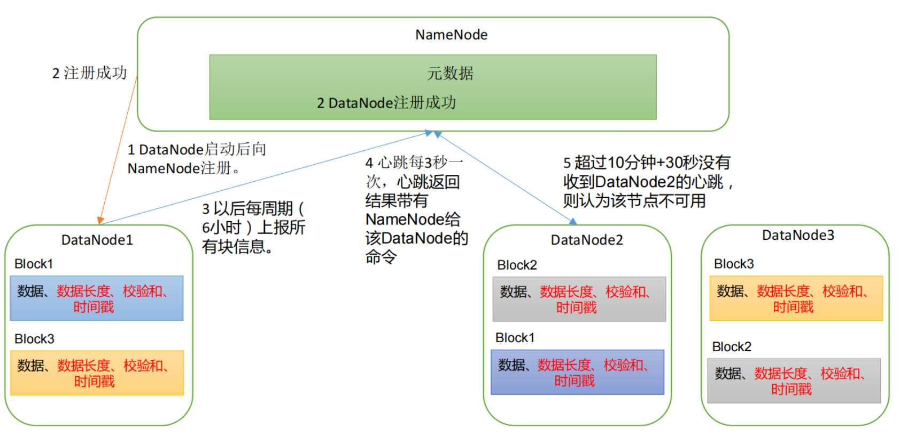
DataNode在启动后向NameNode注册，在注册通过后，每隔一段时间都会向NameNode上报所有的数据块信息，时间间隔默认是6小时。
DataNode每隔3秒都会向NameNode发送心跳信息，心跳返回结果中包含NameNode对该DataNode的命令，如复制数据块、删除数据块等。如果DataNode进程挂掉，或者发生网络故障，导致DataNode无法与NameNode正常通信，那么NameNode不会立即将该节点判定为死亡，它会在一段时间（称为超时时长，默认配置为10分钟30秒）后将该节点判定为死亡。
当 DataNode 突然挂掉了，客户端接收不到这个 DataNode 发送的 ack 确认，客户端会通知 NameNode，NameNode 会通知 DataNode 去复制副本，并将挂掉的 DataNode 作下线处理，不再让它参与文件上传与下载。
7. ⭐SecondaryNameNode的工作机制
Secondary Namenode 主要是用于 edit logs 和 fsimage 的合并，edit logs 记录了对 namenode 元数据的增删改操作，fsimage 记录了最新的元数据检查点，在namenode 重启的时候，会把 edit logs 和 fsimage 进行合并，形成新的 fsimage文件
⚫ 工作机制：
◼ Secondary NameNode 询问 NameNode 是否需要 checkpoint。直接带回NameNode 是否检查结果
◼ Secondary NameNode 请求执行 checkpoint
◼ NameNode 滚动正在写的 edits 日志
◼ 将滚动前的编辑日志和镜像文件拷贝到 Secondary NameNode
◼ Secondary NameNode 加载编辑日志和镜像文件到内存，并合并
◼ 生成新的镜像文件 fsimage.chkpoint
◼ 拷贝 fsimage.chkpoint 到 NameNode
◼ NameNode 将 fsimage.chkpoint 重新命名成 fsimage
◼ 所以如果 NameNode 中的元数据丢失，是可以从 Secondary NameNode 恢复一部分元数据信息的，但不是全部，因为 NameNode 正在写的 edits 日志还没有拷贝到 Secondary NameNode，这部分恢复不了
8. ⭐Hadoop中的数据压缩的优缺点，压缩原则，以及常见的压缩格式
优点：减少磁盘IO、减少磁盘存储空间；缺点：增加CPU开销
压缩原则：运算密集型的job少用压缩，IO密集型的job多用压缩
常见压缩格式：
速记：压缩率高：zz；支持切片：B罗；压缩解压缩速度：S罗
| 压缩格式 | 压缩率 | 压缩解压缩速度 | 是否支持切片 |
|---|---|---|---|
| GZip | 较高 | 一般 | 不支持 |
| bzip2 | 高 | 慢 | 支持 |
| LZO | 一般 | 较快 | 支持 |
| Snappy | 一般 | 快 | 不支持 |
选择压缩算法时需要考虑的维度
- 压缩比（Compression Ratio）
- 这是文件压缩后大小与原始文件大小的比率。更高的压缩比意味着压缩后的文件更小，节省更多的存储空间和网络带宽。但通常压缩比与压缩/解压速度成反比。
- 压缩和解压缩速度（Compression/Decompression Speed）
- 速度是选择压缩算法时非常重要的因素，尤其是在处理大规模数据时。压缩和解压缩速度直接影响到数据处理的时间。像Snappy和LZ4虽然压缩比相对较低，但它们的速度非常快，适合实时或批处理要求很高的场景。
- 是否支持切分（Splittable）
- 在Hadoop中，大数据文件通常需要被切分成多个块以供MapReduce任务并行处理。非切分（Non-Splittable）的压缩格式（如Gzip和Bzip2）不适合处理大文件，因为它们不能被MapReduce有效并行处理。
- 兼容性（Compatibility）
- 需要考虑压缩算法的生态系统支持情况，例如是否与Hadoop、Hive、Spark等工具兼容，是否支持文件的直接读取和写入。
- 应用场景
- 具体应用场景对压缩算法的选择也有影响。例如，如果你的应用对空间节省的要求很高，并且不太关心解压速度，Bzip2可能是一个不错的选择；而对于实时流处理，Snappy或LZO则更为合适。
9. 为什么HDFS要做成三副本？
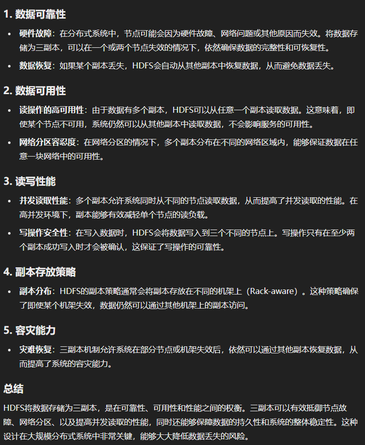10. HDFS的副本机制如何运转？
（1）数据块划分
（2）副本放置策略
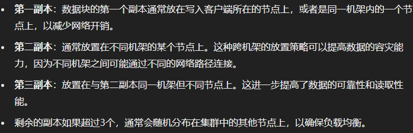
（3）写操作过程
（4）读操作过程
（5）副本监控与修复
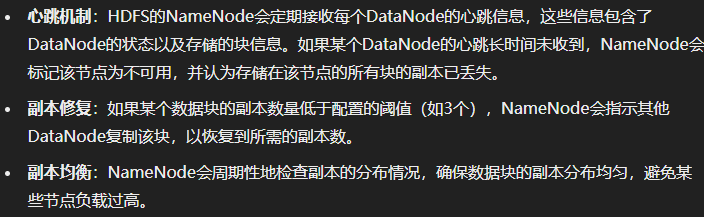
（6）副本删除与再分配
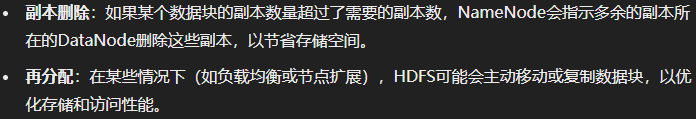
11. 为什么Hadoop有多副本而MySQL，Oracle没有多副本？
（1）设计目标和应用场景
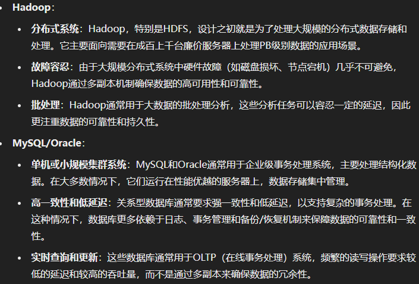（2）数据存储和访问模型
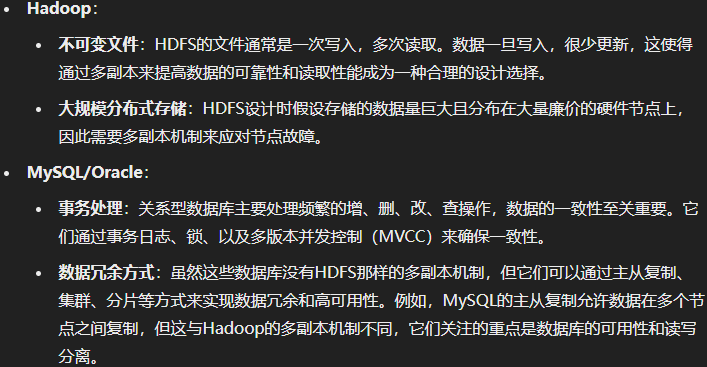（3）故障处理策略
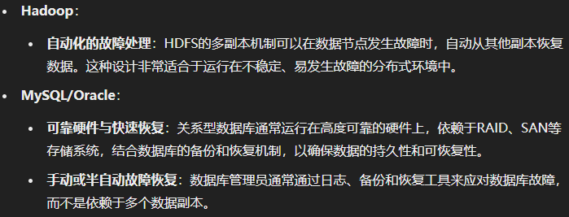12. 压缩策略及算法
Snappy
- 特点: Snappy是Google开发的一种压缩算法，主要用于高效的压缩和解压缩，目标是实现非常快的处理速度。
- 优点
- 压缩和解压速度非常快，特别适合大规模数据处理场景。
- 广泛用于列式存储格式（如Parquet、ORC）和Spark的内存数据压缩。
- 缺点: 压缩比相对较低，但适合对速度要求高的应用。
LZO
- 特点: LZO也是一种专注于高速度的压缩算法，通常用于实时处理和数据流。
- 优点
- 压缩和解压速度非常快，支持切分，可以用于MapReduce和Spark任务。
- 在需要频繁随机访问或大规模数据流处理时非常有用。
- 缺点: 压缩比不如Bzip2、Gzip等算法高。
Gzip
- 特点: 基于DEFLATE算法的Gzip提供了较好的压缩比，适合需要高效压缩的场景。
- 优点
- 提供良好的压缩比，适合需要节省存储空间的场景。
- 兼容性好，很多工具和系统都支持Gzip。
- 缺点
- 压缩和解压速度相对较慢，尤其是在处理大规模数据时。
- 不支持切分，影响并行处理效率。
Bzip2
- 特点: Bzip2是一种高压缩比的压缩算法，常用于需要高效空间利用的场景。
- 优点
- 压缩比高，能够显著减少存储空间需求。
- 缺点
- 压缩和解压速度慢，尤其在大数据场景中不太常用。
- 不支持切分，不适合大规模分布式数据处理任务。
LZ4
- 特点: LZ4是一种非常快速的压缩算法，适用于需要高吞吐量的场景。
- 优点
- 压缩和解压速度非常快，支持切分，适合实时和批处理任务。
- 缺点
- 压缩比相对较低。
Zstandard (ZSTD)
- 特点: Zstandard（ZSTD）是Facebook开发的压缩算法，专注于实现高压缩比和高速压缩/解压。
- 优点
- 在高压缩比和压缩速度之间实现了良好的平衡。
- 支持多种压缩级别，用户可以根据需要调整。
- 缺点
- 相对新，兼容性可能不如Gzip或Snappy广泛。
13. （百度）hadoop提交任务之前要进行split，说一说split的过程
在Hadoop中，Split 是指将大数据集分割成更小的数据块，这些小块可以并行处理。这个过程通常在提交MapReduce任务之前进行，目的是为了充分利用集群的计算资源，提高并行处理的效率。
Split的过程概述
- 输入格式（InputFormat）确定Split逻辑：
- 在Hadoop中，
InputFormat类决定了如何将输入数据划分为Splits。Hadoop提供了不同的InputFormat类来处理不同类型的数据。例如，处理文本文件的TextInputFormat、处理压缩文件的CompressedInputFormat等。 - 每个
InputFormat都有自己的逻辑来决定Split的大小和方式。
- 在Hadoop中，
- 确定Split大小：
- Split大小通常由
InputFormat类决定。默认情况下，Hadoop根据块大小（Block Size）和数据的物理存储位置来确定Split的大小。HDFS中的默认块大小通常为128MB或64MB。 - Split大小可以通过Hadoop的配置参数
mapreduce.input.fileinputformat.split.maxsize和mapreduce.input.fileinputformat.split.minsize进行调节。 - 如果文件很大，可能会分成多个Splits；如果文件较小，多个文件也可能合并为一个Split。
- Split大小通常由
- 逻辑上划分数据块：
InputFormat类将输入数据逻辑上分成多个Splits。这里的“逻辑上”意味着这些Splits不需要严格按照HDFS中的物理块边界划分，而是可以跨越多个HDFS块。- 例如，一个128MB的文件可能会被分成两个64MB的Splits，但这并不意味着它们严格对应HDFS的块边界。
- 为每个Split创建一个RecordReader：
- Hadoop为每个Split创建一个
RecordReader对象。RecordReader负责将Split中的字节流转换为键值对，供Map任务处理。 - 每个
RecordReader从Split的开始位置开始读取，直到读取完毕。
- Hadoop为每个Split创建一个
- 生成Splits列表：
- 最终，Hadoop生成一个Splits列表，每个Split代表要被Map任务处理的一部分数据。
- 这些Splits随后分配给Map任务，通常每个Split对应一个Map任务。
Split的过程详细步骤
- 获取输入文件列表：
InputFormat首先获取要处理的所有输入文件的列表。这些文件通常存储在HDFS中。
- 计算每个文件的Split大小：
- 对于每个文件，Hadoop根据文件大小和配置的Split大小来计算应该如何划分文件。假设文件大小为256MB，块大小为128MB，那么这个文件将被分为两个Splits，每个128MB。
- 计算Split的起始位置和长度：
InputFormat计算每个Split的起始位置和长度。例如，第一个Split的起始位置是0，长度是128MB；第二个Split的起始位置是128MB，长度是128MB。
- 检查Split的边界：
- Hadoop在计算Split时会考虑记录的边界。例如，对于文本文件，Hadoop通常会确保每个Split不会在行的中间截断。这样可以避免处理不完整的记录。
- 生成Split对象：
- 对于每个计算出的Split，Hadoop生成一个
InputSplit对象，包含文件路径、起始位置、长度等信息。
- 对于每个计算出的Split，Hadoop生成一个
- 分配Splits给Map任务：
- 生成的
InputSplit对象被提交给作业调度器，作业调度器根据任务执行环境的资源情况，将这些Splits分配给不同的Map任务进行并行处理。
- 生成的
Split的优化
Hadoop的Split过程具有一定的灵活性，可以通过以下方式进行优化：
- 调整Split大小：根据任务需求，通过配置参数调整Split的最大和最小大小。
- 自定义InputFormat：为特定类型的数据设计自定义的
InputFormat，实现更精细的Split控制。 - 合并小文件：对于大量小文件，Hadoop可以通过CombineFileInputFormat类将多个小文件合并为一个Split，以减少Map任务的数量。
总结
Split过程是Hadoop任务处理的第一步，它将大数据集划分为更小的逻辑单元，供Map任务并行处理。Split的大小和划分方式直接影响任务的执行效率和性能。理解并优化Split过程，对于提高Hadoop任务的性能至关重要。
3.3 MapReduce
1. 什么是MapReduce？
MapReduce是一个分布式计算程序的编程框架。MapReduce的核心功能是将用户编写的业务逻辑代码和自带的默认组件整合成一个完整的分布式计算程序并且将其并发运行在一个Hadoop集群上。
MapReduce计算框架将数据的计算过程分为数据输入阶段、map阶段、reduce阶段和数据输出阶段。
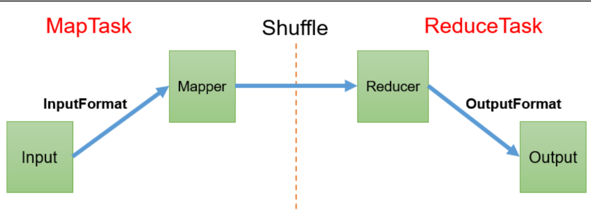编写MapReduce程序：继承Mapper类重写map方法，继承Reduce类重写reduce方法，在main方法中编写Driver驱动器
2. ⭐请说一下Map Task的工作机制

- Read阶段：inputFile 通过 split 被切割为多个 split 文件，通过 Record 按行读取内容给 map（自己写的处理逻辑的方法）
- Map阶段：使用map()方法对数据进行处理
- Collect阶段：数据被 map 处理完之后交给 OutputCollect 收集器，对其结果 key 进行分区（默认使用的 hashPartitioner），然后写入 buffer，每个 map task 都有一个内存缓冲区（环形缓冲区），存放着 map 的输出结果
- 溢写阶段：当缓冲区快满的时候(80%)需要将缓冲区的数据以一个临时文件的方式溢写到磁盘
- Merge阶段：当整个 map task 结束后再对磁盘中这个 map task 产生的所有临时文件做Merge合并，生成最终的正式输出文件，然后等待 reduce task 的拉取。
3. ⭐请说一下Reduce Task的工作机制

- Copy阶段：ReduceTask 从各个 MapTask 上远程拷贝一片数据，并针对某一片数据，如果其大小超过一定阈值，则写到磁盘上，否则直接放到内存中。
- Sort阶段：在远程拷贝数据的同时，ReduceTask 启动了两个后台线程对内存和磁盘上的文件进行合并，以防止内存使用过多或磁盘上文件过多。合并后的文件进行一次全局归并排序，使得key相同的数据聚集在一起。
- Reduce阶段：reduce()函数将计算结果写到 HDFS 上。
4. ⭐⭐说一说Map Task和Reduce Task的并行度（个数）决定机制？
Map Task并行度（也就是Map Task数量）由切片个数决定，一个数据切片可以对应启动一个MapTask，切片个数由输入文件和切片规则决定（默认情况下，数据切片大小与数据块大小相同，或者是数据块大小的倍数，即128M或128M的倍数）。
（1）默认情况下Map的个数=目标文件或数据的总大小totalSize/hdfs集群文件块的大小blockSize1
defaultNum = totalSize/blockSize
（2）当用户指定
mapred.map.tasks时，即userExpNum，这个期望值计算引擎不会直接采纳，会先算出默认情况下Map个数与用户期望的Map个数的最大值，用expMaxNum表示expMaxNum=max(defaultNum,userExpNum)作为待选项；计算真实分片数realSplitNum，分片大小为参数mapred.min.split.size和blockSize间的较大值，再将目标文件或数据的总大小除以这个数得到真实的分片数。1
2
3
4
5defaultNum = totalSize/blockSize;
userExpNum = mapred.map.tasks;
expMaxNum = max(defaultNum, userExpNum);
realSplitNum = totalSize/max(mapred.min.split.size, blockSize);
实际的map个数 = min(realSplitNum, expMaxNum);（3）一般情况下无需手动调节，如果查询表中存在大量小文件，需要使用CombineHiveInputFormat将多个小文件合并为一个切片，从而控制map task个数。
Reduce Task并行度（也就是Reduce Task数量）可以直接手动设置，默认为1，设置为0表示没有reduce阶段。
在mapreduce编程框架中设置reduce task个数
1 | job.setNumReduceTasks(4); |
在HIvesql中指定reduce task个数
1 | set mapreduce.job.reduces = 10;--老版本中的参数是mapred.reduce.tasks |
5. ⭐⭐⭐请说一下Shuffle阶段，MapTask工作机制、ReduceTask工作机制

（1）Map 方法之后 Reduce 方法之前这段处理过程叫 Shuffle，本质就是数据的重新分区
（2）map 方法之后， 数据首先进入到分区方法， 把数据标记好分区， 然后把数据发送到 环形缓冲区；环形缓冲区默认大小 100m，环形缓冲区达到 80%时，进行溢写；溢写前对数 据进行排序，排序按照对 key 的索引进行字典顺序排序， 排序的手段快排；溢写产生大量溢 写文件，需要对溢写文件进行归并排序；对溢写的文件也可以进行 Combiner 操作， 前提是汇总操作， 求平均值不行。之后还可以进行数据压缩，最后将文件按照分区存储到磁盘， 等待 Reduce 端拉取。
（3）每个 Reduce 拉取 Map 端对应分区的数据。拉取数据后先存储到内存中， 内存不够了，再存储到磁盘。拉取完所有数据后，采用归并排序将内存和磁盘中的数据都进行排序。在进入 Reduce 方法前， 可以对数据进行分组操作。
Shuffle定义：Map方法之后Reduce方法之前的这段处理过程叫Shuffle，本质就是数据的重新分区
细节：Shuffle阶段一共三次排序：Map阶段：快排，归并；Reduce阶段：归并
①~⑤为MapTask阶段，②~⑨为shuffle阶段，⑧~⑩为ReduceTask阶段
①InputFile切割成多个split文件，通过RecordReader按行读取内容给map方法（Map Task的Read阶段）
②使用map()方法对数据进行处理（Map Task的Map阶段）
③map方法之后，交给OutputCollect收集器，按照key的hash进行分区，发送到环形缓冲区（默认大小100M）（Map Task的Collect阶段）
④达到80%，将数据以临时文件的方式溢写到磁盘（Map Task的溢写阶段）
⑤溢写前，对key的索引进行快排；溢写后，对溢写文件进行归并排序（Map Task的Merge阶段）
⑥在归并排序的前后还可以进行Combiner操作（前提是汇总操作），之后还可以进行数据压缩
⑦将文件按分区存储在磁盘上，等待Reduce端拉取
⑧每个Reduce拉取Map端对应分区的数据，先存储在内存中，后磁盘中。（Reduce Task的Copy阶段）
⑨拉取完所有的数据后，采用归并排序将内存和磁盘中的数据进行排序，使key相同的数据聚集在一起，之后按照相同的key进行分组（Reduce Task的Sort阶段）
⑩使用reduce()函数将计算结果写到HDFS上（Reduce Task的Reduce阶段）
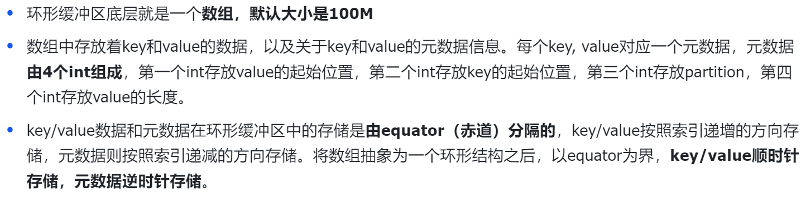环形缓冲区的底层实现
6. 说一说Combiner合并
- Combiner是MR程序中Mappe和Reducer之外的一种组件
- Combiner组件的父类就是Reducer
- Combiner和Reducer的区别在于运行的位置，Combiner是在每一个MapTask所在的节点运行，Reducer是接收全局所有Mapper的输出结果
- Combiner的意义就是对每一个MapTask的输出进行局部汇总，以减小网络传输量
- Combiner能够应用的前提是不影响最终的业务逻辑，而且Combiner的输出kv应该跟Reducer的输入kv类型要对应起来。
7. Shuffle阶段的数据压缩机制了解吗？
压缩可以减少磁盘IO，节约磁盘存储空闲。
我们使用的压缩方式是Snappy，特点是速度快，缺点是无法切分
9. 在MapReduce任务中压缩位置的选择
- 输入端采用压缩：重点考虑支持切片的压缩格式Bzip2和LZO
- Mapper输出采用压缩：为了减少MapTask和ReduceTask之间的网络IO，重点考虑压缩和解压缩快的LZO，Snappy
- Reducer输出采用压缩：永久保存考虑采用压缩率较高的GZip和bzip2，如果作为下一个MapReduce的输入，需要考虑支持切片
10.⭐join原理
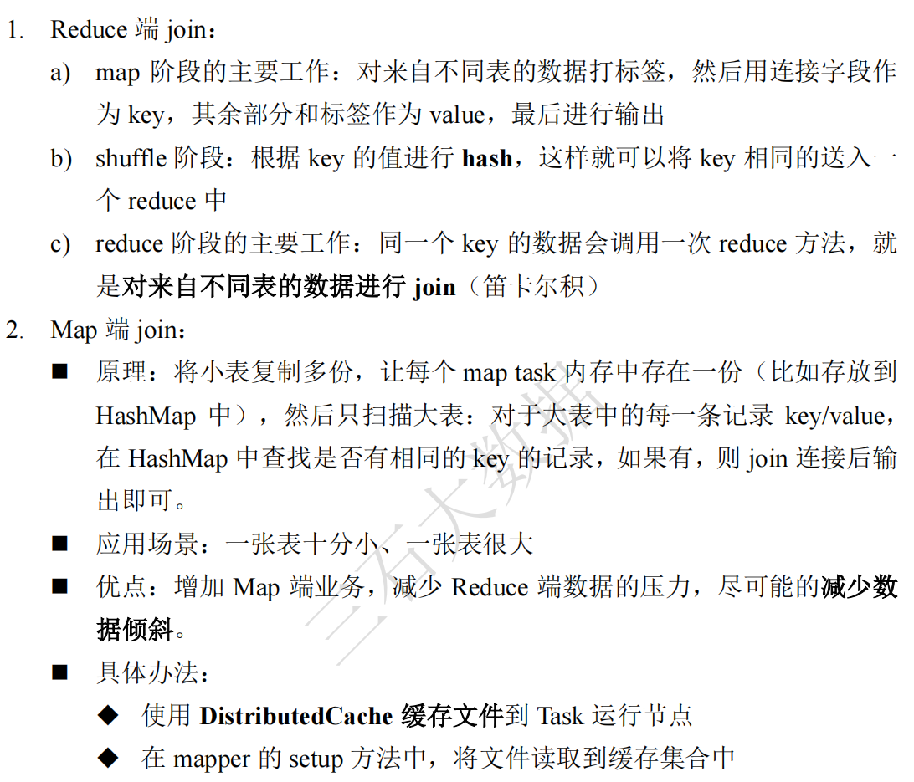3.4 YARN
1. ⭐YARN集群的架构和工作原理知道多少？
YARN是一个资源调度平台。
YARN采用了常见的Master-Slaver架构，其中，资源管理器ResourceManager担任Master角色，负责整个框架的资源统一管理和调度；NodeManager担任Slave角色，负责任务的执行及当前节点的资源管理。

2. ⭐⭐YARN工作机制
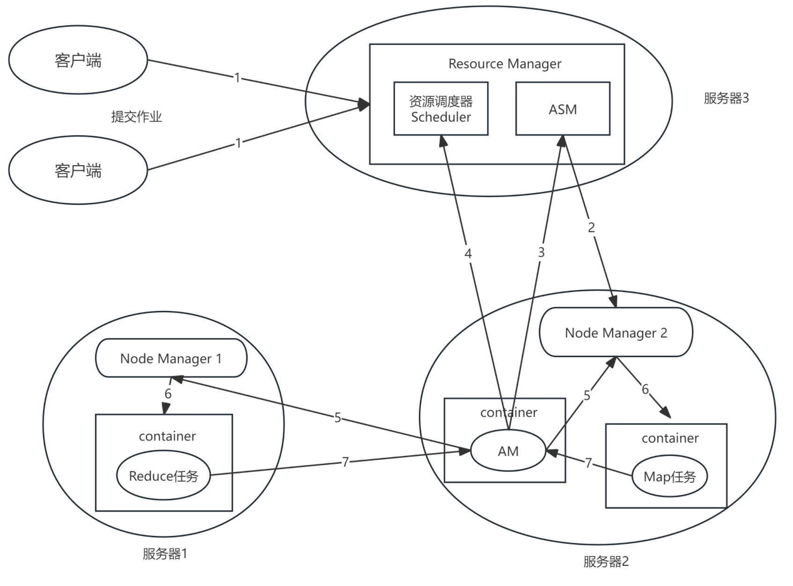（1）客户端向YARN提交一个作业（Application）
（2）作业提交后，RM根据从NM收集的资源信息，在有足够资源的节点分配一个容器，并与对应的NM进行通信，要求它在该容器中启动AM
（3）AM创建成功后向RM中的ASM注册自己，表示自己可以去管理一个作业（job）
（4）AM注册成功后，会对作业需要处理的数据进行切分，然后向RM申请资源，RM会根据给定的调度策略提供给请求的资源AM
（5）AM申请到资源成功后，会与集群中的NM通信，要求它启动任务
（6）NM接收到AM的要求后，根据作业提供的信息，启动对应的任务
（7）启动后的每个任务会定时向AM提供自己的状态信息和执行的进度
（8）作业运行完成后AM会向ASM注销和关闭自己
3. ⭐YARN 的资源调度三种模型了解吗?
资源调度器负责集群的资源调度工作。
- FIFO调度器
- 容量调度器（Apache Hadoop3.1.3默认使用）
- 公平调度器（CDH框架默认使用）
（1）FIFO调度器
单队列调度器，它将任务按照其到达的时间进行排序，队列中先到达的任务先获得资源
（2）容量调度器（生产环境中会用）
- 多队列，每个队列配置一定资源，每个队列采用FIFO
- 每个队列都有资源最低保证和使用上限
- 如果一个队列资源有剩余可以暂时共享给需要资源的队列
- 分配资源时，先找资源占用率最低的那个队列，然后按照提交作业的优先级或提交时间顺序，最后按容器优先级（相同就看本地性原则），给任务分配资源
（3）公平调度器（生产环境中会用，对并行度要求较高）
- 多队列，每个队列配置一定资源，每个队列采用FIFO
- 每个队列都有资源最低保证和使用上限
- 如果一个队列资源有剩余可以暂时共享给需要资源的队列
多队列，每个队列内部按照缺额大小分配资源启动任务，每个队列可以单独设置资源分配方式，同一时间队列中有多个任务执行
注意：hadoop中默认单队列，企业中按照部门和业务划分队列
4. Hadoop宕机？
- 如果 MR 造成系统宕机。此时要控制 Yarn 同时运行的任务数，和每个任务申请的最大内存。调整参数：yarn.scheduler.maximum-allocation-mb（单个任务可申请的最多物理内存量，默认是 8192MB）
- 如果写入文件过量造成 NameNode 宕机。那么调高 Kafka 的存储大小，控制从 Kafka 到 HDFS 的写入速度。高峰期的时候用 Kafka 进行缓存，高峰期过去数据同步会自动跟上。
3.5 高可用HA
1. 什么是高可用HA
7*24小时不中断服务。实现高可用的关键策略是消除单点故障，分为HDFS HA和YARN HA
2. 简单说一说HDFS如何实现高可用
HDFS HA功能通过配置多个NameNode实现，要保证这两个NameNode的元数据信息必须要同步，而且一个NameNode挂掉之后另一个要马上补上。
- 如何保证多个NN元数据信息一致：其中一个NN负责生成快照文件FsImage，其他NN拉取同步；引进新角色JournalNode，保证多个NN的EditLog数据一致性
- 如何使多个NN其中一个处于Active状态，其他处于Standby状态：在每一个NN上启动ZKFC（由zookeeper实现的故障转移控制器），当ZKFC运行在处于Active状态的NN上时，会在发现其状态不正常时向ZooKeeper中写入数据。当ZKFC运行在处于Standby状态的NN上时，会从ZooKeeper中读取数据，从而感知处于Active状态的NN是否在正常工作，以便顺利完成故障转移工作。
3. 在NameNode HA中，会出现脑裂问题吗?怎么解决脑裂问题？
某时刻NN1为Active状态，NN2为Standby状态，如果下一时刻NN1对应的ZKFC进程发生假死，那么zookeeper服务端会认为NN1挂掉了，NN2会代替NN1进入Active状态，这时NN1和NN2都处于Active状态，都对外提供服务，这种现象叫脑裂。
如何解决：
- 首先尝试用调用旧的Active NameNode的RPC接口的transitionToStandby 方法，看能不能把它转换为 Standby 状态
- 如果方法调用失败，使用Hadoop的两种隔离措施：①ssh发送kill指令。②调用用户自定义的脚本程序
四、Kafka
1. 什么是Kafka？什么是消息队列？
Kafka是一个分布式的基于发布/订阅模式的消息队列，或者说其是一个分布式事件流平台。
发布/订阅：消息的发布者将消息分为不同的类型，订阅者只接收感兴趣的消息。
消息队列就是一个存放消息的容器，参与消息传递的双方称为生产者和消费者，生产者负责发送消息，消费者负责处理消息
2. 为什么要用kafka（kafka消息队列的应用场景）？（消息队列的作用？）
（1）缓冲/消峰：先将短时间高并发产生的事务消息存储在消息队列中，然后下游再慢慢根据自己的能力去消费这些信息。有助于控制和优化数据流经过系统的速度，解决生产消息和消费消息的处理速度不一致的情况
（2）解耦：允许你独立的扩展或修改两边的处理过程，只要确保它们遵循同样的接口约束
（3）异步通信：允许用户把一个消息放入队列，但并不立即处理它，然后在需要的时候再去处理它们
（4）数据流处理：在大数据场景，消息队列可以实时或批量收集业务日志、监控数据、用户行为等，并将其导入到大数据引擎中。
3. 消息队列的两种模式
- 点对点模式：消费者主动拉取数据，消息收到后清除消息
- 发布/订阅模式：消息的发布者将消息分为不同的类型（多个topic主题），订阅者只接收感兴趣的消息。
4. ⭐简单介绍一下Kafka的架构
先说几个概念：
- Producer（生产者）：生产消息的一方
- Consumer（消费者）：消费消息的乙方
- Broker（代理）：可以看作一个独立的Kafka实例，多个Broker组成一个Kafka Cluster
- Topic（主题）：生产者将消息发送到特定的主题，消费者通过订阅特定的主题来消费信息
- Partition（分区）：分区属于Topic的一部分，一个Topic可以有多个Partition，并且同一个Topic下的Partition可以分布在不同的Broker上，即一个Topic可以横跨多个Broker。

Kafka整体上分为Producer（生产者）-Topic（主题）-Consumer（消费者）组成。
为了实现扩展性，会把一个非常大的主题分成多个分区（Partition）分布到多个broker（可以理解为服务器）上，相应地为了配合分区的概念，消费者可以分成消费者组，消费者组由多个Consumer组成，组内每个消费者负责消费不同分区的数据。
为了提高可用性，为每个Partition增加若干副本，一个Leader和多个Follower。其中生产者发送数据和消费者消费数据的对象都是Leader，Follower负责实时从Leader中同步数据，Leader发生故障时，某个Follower会成为新的Leader。
zookeeper中记录各服务器节点运行的状态（Broker注册）和各分区的Leader相关信息（Topic注册）。Kafka2.8以后可以不采用zookeeper
5. kafka数据分区和消费者的关系
每个分区只能由同一个消费组内的一个消费者(consumer)来消费，可以由不同的消费组的消费者来消费，同组的消费者则起到并发的效果。
6. Kafka的分区数，副本数，Topic数应如何设定？
- Kafka分区数：分区数不是越多越好，一般分区数不要超过集群机器数量，分区数越多占用内存越大，一般3~10个
- 副本数设定：一般设置成2~3个
- Topic数：一般情况下，有多少个日志种类就有多少个Topic
7. Kafka杂项问题
- Kafka的日志保存时间：7天
- Kafka单条日志传输大小：最大1M
- Kafka的硬盘大小：每天的数据量*7 天/70%
- Kafka监控：kafkaeagle
8. 采集数据为什么选择Kafka？（什么时候用Kafka，什么时候用Flume？）
Flume：Flume是一个基于流式架构的高可用、高可靠、分布式海量日志采集、聚合、传输的系统，最主要的作用就是，实时读取服务器本地磁盘的数据，将数据写入到HDFS。
Kafka：Kafka是一个分布式的基于发布/订阅模式的消息队列，或者说其是一个分布式事件流平台。
两者对比：Flume 是一个专用工具被设计为旨在往 HDFS，HBase 发送数据。它对HDFS 有特殊的优化，并且集成了 Hadoop 的安全特性。议如果数据被多个系统消费的话，使用 kafka；如果数据被设计给 Hadoop 使用，使用 Flume。
9. ⭐Kafka的为什么能高效读写数据？（Kafka的数据是放在磁盘上还是内存上）
磁盘；
- Kafka本身是分布式集群，可以采用分区技术，并行度高
- 读数据采用稀疏索引，可以快速定位要消费的数据
- 顺序写磁盘，省去了大量磁头寻址的时间
- 页缓存（读数据先从页缓存中找，找不到再去磁盘中读）+零拷贝技术（不走应用层，传输速率高。只用将磁盘文件的数据复制到页面缓冲区一次，然后将数据从页面缓冲区直接发送到网络中，这样就避免了在内核空间和用户空间之间的拷贝）
10. ⭐Kafka生产者消息发送流程

首先Kafka生产者在main线程中创建一个Producer对象，数据通过拦截器、序列化器和分区器输送到一个双端队列（默认大小32M）中，双端队列中数据以批次（ProducerBatch，默认16K）存在。
sender线程会主动从双端队列中拉取数据，当数据累积到16K或达到等待时间，sender就会向Kafka集群（broker）发送数据，broker给出应答，如果某个broker节点无应答，最多可以缓存5个发送请求。
应答类型：
- ack = 0，生产者发送过来数据就不管了，一直发，可靠性差，效率高
- ack = 1，生产者发送过来数据，等待Leader应答才继续发送，可靠性中等，效率中等
- ack = -1，生产者发送过来数据，等待Leader和ISR队列里面所有的Follower应答才继续发送，可靠性高，效率低
11. Kafka的生产者发送消息分区好处与策略
（1）好处
- 便于合理使用存储资源
- 提高并行度
（2）策略
- 指明partition的情况下，直接将数据写入该分区
- 没有指明partition但指明key的情况下，将key的hash值与分区数取余得到partition值
- 既没有partition也没有key值的情况下，kafka采用黏性分区器，会随机选择一个分区直到该分区batch已满或已完成，kafka再随机选择另外一个分区。
12. ⭐谈一谈Kafka数据的可靠性
数据完全可靠条件=ACK级别设置为-1 + 分区副本大于等于2 + ISR里应答的最小副本数量大于等于2
可靠性总结：
- ack = 0，生产者发送过来数据就不管了，一直发，可靠性差，效率高
- ack = 1，生产者发送过来数据，等待Leader应答才继续发送，可靠性中等，效率中等
- ack = -1，生产者发送过来数据，等待Leader和ISR队列里面所有的Follower应答才继续发送，可靠性高，效率低
13. ⭐⭐kafka如何保证消息不重复（谈一谈Kafka的幂等性）
（1）幂等性：
0.11 版本之后，kafka 提出了一个非常重要的特性，幂等性（默认是开启的），也就是说无论 producer 发送多少次重复的数据，kafka 只会持久化一条数据，把这个特性和至少一次语义（ack 级别设置为-1+副本数>=2+ISR 最小副本数>=2）结合在一起，就可以实现精确一次性（既不丢失又不重复）。我大致介绍一下它的底层原理：在 producer 刚启动的时候会分配一个 PID，然后发送到同一个分区的消息都会携带一个SequenceNum（单调自增的），broker 会对<PID,partition,SeqNum>做缓存，也就是把它当做主键，如果有相同主键的消息提交时，broker 只会持久化一条数据。但是这个机制只能保证单会话的精准一次性，如果想要保证跨会话的精准一次性，那么就需要事务的机制来进行保证（producer 在使用事务功能之前，必须先自定义一个唯一的事务 id，这样，即使客户端重启，也能继续处理未完成的事务；并且这个事务的信息会持久化到一个特殊的主题当中）
- 幂等性就是kafka生产者无论向Broker发送多少次重复数据，Broker端都只会持久化一条，保证不重复。
- 当<PID，Partition，SeqNumber>相同的主键消息提交时，Broker只会持久化一条。其中PID是Kafka每次重启都会分配一个新的，Partition表示分区号，SeqNumber是单调自增的。

（2）生产者事务：
- 生产者可以跨分区和会话，要么全部成功，要么全部失败。
- 开启事务，必须开启幂等性。
（3）Kafka保证消息不丢不重：
- 幂等性 + 事务 + ack设置为-1
- 如真的重复，如hive中的dwd层去重，去重手段：distinct、分组、按照id开窗只取第一个值
14. ⭐⭐Kafka数据怎么保证不丢失？
分为生产者端，消费者端，broker端
（1）生产者数据的不丢失
kafka 的 ack 机制：在 kafka 发送数据的时候，每次发送消息都会有一个确认反馈机制，确保消息正常的能够被收到，其中状态有 0，1，-1。
- ack = 0，生产者发送过来数据就不管了，一直发，可靠性差，效率高
- ack = 1，生产者发送过来数据，等待Leader应答才继续发送，可靠性中等，效率中等
- ack = -1，生产者发送过来数据，等待Leader和ISR队列里面所有的Follower应答才继续发送，可靠性高，效率低
（2）消费者数据的不丢失
通过offset commit 来保证数据的不丢失，kafka自己记录了每次消费的offset数值，下次继续消费的时候，会接着上次的 offset 进行消费。offset信息在0.9版本之前保存在zookeeper中，0.9版本之后保存在系统主题之中，即使消费者在运行过程中挂掉了，再次启动的时候会找到 offset 的值，找到之前消费消息的位置，接着消费。由于 offset 的信息写入的时候并不是每条消息消费完成后都写入的（先消费，再写入offset），所以这种情况有可能会造成重复消费，但是不会丢失消息。
（3）broker数据的不丢失
每个Broker中的partition我们一般都会设置副本的个数（副本就是Leader和Follower），生产者发送消息时候先根据分区策略（有partition按partition，有key按key的hash对分区数取余，都没有用黏性策略）写入到Leader中，Follower再跟Leader同步数据。这样有了备份，也可以保证消息数据的不丢失。
15. ⭐⭐Kafka是如何保证数据有序？
kafka 只能保证 partition 内是有序的，但是 partition 间的有序是没办法的。
保证partition内部有序的策略：
- 未开启幂等性时，max.in.flight.requests.per.connection需要设置为1，只有一个需求，请求成功传下一个，强制保证按顺序到达。
- 开启幂等性时，max.in.flight.requests.per.connection设置小于等于5即可，开启幂等性，收集到的数据会再服务端按照SeqNumber重新排序保证单调递增再传递，且生产者最多缓存5个请求，一定能保证这5个请求是有序的，超过5个就不保证了。
除此之外，还可以设置一个Topic只对应一个Partition；发送消息时候指定key/Partition（推荐）。
16. 分区副本是如何在broker上分配的？
Kafka分区引入了副本机制，分区中的多个副本之间会有一个Leader，其余的是follower，我们发送消息会被发送到leader副本，然后follower副本才能从leader副本中拉取消息进行同步。
在每个broker上尽可能均匀地分布着Leader和Follower，如果在生产环境中，可以根据实际需要手动调整分区副本的分配。
kafka通过特定Topic指定多个分区，各个分区可以分布在不同的Broker上，提供较好的负载均衡的能力。分区可以指定对应的副本数，极大提高了消息存储的安全性和容灾能力。
17. ⭐说一说Kafka的消费方式以及消费者工作流程
消费方式：消费者采用从broker主动拉取数据的方式。
消费者消费原则：
消费可以一对一（一个消费者消费一个Broker中的Leader），可以多对一（一个消费者消费不同Broker中的Leader），这是无条件的。如果一对多，对应的消费者一定是分属于不同消费者组的。每个消费者的offset由消费者提交到系统主题保存。

工作流程：
消费者首先创建一个ConsumerNetworkClient，调用sendFetches发送消费请求，当达到每批次最小抓取大小或达到超时时间，调用send方法拉取数据。拉取过来的数据放在消息队列中，经过反序列化，拦截器，最后处理数据。

18. Kafka消费者消费数据的分区分配策略
一个Consumer group中有多个消费者，一个topic中有多个partition分区，到底由哪个消费者来消费哪个partition的数据？
Kafka内部存在两种默认的分区分配策略：Range和RoundRobin；
- Range：Range 是对每个 Topic 而言的 ，首先对同一个 Topic 里面的分区按照序号进行排序，并对消费者按照字母顺序进行排序。然后用 Partitions 分区的个数除以消费者总数来决定每个消费者线程消费几个分区。如果除不尽， 那么前面几个消费者线程将会多消费一个分区。

- RoundRobin：RoundRobin是针对集群中所有Topic而言的，把所有的partition和所有的consumer都列出来，然后按照hashcod进行排序，最后通过轮询算法来分配partition给到各个消费者。

- Sitcky：尽量均匀且随机分配
19. 什么是漏消费和重复消费？如何解决？
- 重复消费：自动提交offset引起。消费快，offset提交慢，consumer挂了之后重启从上一次提交的offset处继续消费，导致重复消费
- 漏消费：设置offset为手动提交，offset提交快，消费慢，consumer挂了之后重启从上一次提交的offset处继续消费，导致漏消费
- 如何解决：Kafka消费端将消费过程和提交offset过程做原子绑定，并且下游消费者支持事务机制
20. Kafka消费数据积压，Kafka消费能力不足怎么处理？（消费者如何提高吞吐量）
（1）如果是Kafka消费能力不足，则可以考虑增加Topic分区数，并且同时提升消费者组的消费者数量，消费者数=分区数（两者缺一不可）。
（2）如果是下游的数据处理不及时，可以提高每批次拉取的数据量
21. Kafka宕机了如何解决？
首先考虑业务是否受到影响：若服务提供没问题，实现做好了集群的容灾机制，就不必担心，
节点排错与恢复：通过日志分析查看
- 查看Flume记录
- 查看kafka日志
- 短期没事
22. Kafka重启是否会导致数据丢失？
- Kafka是将数据写入到磁盘的，一般数据不会丢失
- 但是在重启 kafka 过程中，如果有消费者消费消息，那么 kafka 如果来不及提交 offset，可能会造成数据的不准确（丢失或者重复消费）。
23. 为什么Kafka不支持读写分离？
读写分离有两个明显的缺点：
- 数据一致性问题
- 延时问题
24. 采集数据的时候为什么在Flume中间加一个Kafka？
Kafka作为一个消息中间件起到日志缓冲的作用，避免同时发生的大量读/写请求造成HDFS性能下降，能对Kafka的日志生产采集过程进行实时监控，避免消费层Flume在落盘HDFS过程中产生大量的小数据文件，从而降低HGFS运行性能，并对落盘数据采取适当的压缩措施，尽量节省存储空间，降低网络IO。
25. RPC和消息队列的区别
- 从用途上看：RPC主要用来解决两个服务远程通信的问题，消息队列主要用来实现异步传输、消峰和降低系统耦合
- 从通信方式上看：RPC是双向直接网络通讯，消息队列是单向引入中间载体的网络通讯
- 从架构上看：消息队列需要把消息存储起来，RPC没有这个要求
- 从请求处理的时效性来看：通过RPC发出的调用一般会立即被处理，存放在消息队列中的消息并不一定会立即被处理
26. 几种消息队列的对比
吞吐量方面：RabbitMQ比RocketMQ和Kafka低一个数量级
可用性方面：都可以实现高可用，RabbitMQ基于主从架构实现高可用性，RocketMQ基于分布式架构。Kafka也是分布式的，一个数据多个副本。
时效性方面：RabbitMQ并发能力很强，性能极好，延时很低
由于RabbitMQ基于Erlang开发，国内很少有公司做到对其的源码级研究，而RocketMQ基于java开发，阿里巴巴开源，可以进行企业实际业务定制。Kafka拥有高吞吐量，可靠性可用性，分布式任意扩展，在大数据领域的日志采集和实时计算，是业内标准，社区活跃度很高。
27. Kafka文件存储机制了解吗？
-172545400944715.png)
在Kafka中，一个Topic会被分割成多个Partition，而Partition由多个更小的segment的元素组成。由log、index、timeindex三个文件组成一个segment。log中存储的是消息内容，而index和timeindex分别是一些索引信息。kafka会根据log.segment.bytes的配置来决定单个segment文件的大小，当写入数据达到这个大小时就会创建新的segment。
28. ⭐Kafka的事务是如何实现的？
Kafka 的事务机制是为了确保生产者和消费者之间的数据一致性，即提供“exactly-once”语义，保证数据在多个主题分区间的一致性和原子性。事务的实现涉及多个关键组件和机制：
（1） 事务日志 (Transaction Log):
Kafka 在集群中引入了一个特殊的内部主题叫做 __transaction_state，用于存储事务的状态信息。这个主题包含了事务的开始、提交、回滚等信息。事务的状态会以日志记录的方式存储在这个主题中。
（2）事务协调者 (Transaction Coordinator):
每个 Kafka broker 中都运行着一个事务协调者，负责管理和协调事务。具体来说，它处理事务的开始、提交和回滚操作。事务协调者会将事务相关的元数据（例如事务ID、事务状态）写入 __transaction_state 主题中。
（3）事务ID (Transactional ID):
Kafka 中的事务是通过一个唯一的 transactional.id 来标识的。这是由生产者在配置中指定的，Kafka 通过这个ID来跟踪和管理每个事务。当一个事务启动时，事务协调者会为其分配一个唯一的事务序列号 (Transaction Sequence Number, TSN)。
（4）生产者 (Producer) 端的事务处理:
生产者在发送消息时，必须指定 transactional.id。当生产者启动一个事务时，会向事务协调者发出 BeginTransaction 请求。生产者发送的所有消息都会在事务范围内进行标记，直到事务提交或回滚。当提交事务时，生产者会发送 EndTransaction 请求给事务协调者，协调者会将事务状态标记为已提交或已回滚。
（5）消费者 (Consumer) 端的事务处理:
事务性消费者会检测到未提交的事务消息，并跳过这些消息，直到它们被正式提交（或回滚）。如果事务被回滚，消费者将永远不会处理这些消息。如果事务提交成功，消费者将按顺序消费这些消息，从而确保“exactly-once”语义。
（6）幂等性 (Idempotence) 和事务的结合:
Kafka 的幂等性和事务机制结合使用以提供强大的数据一致性保障。幂等性确保生产者发送的每条消息在特定分区上仅被写入一次，避免了重复消费。事务则确保消息在多个分区间的一致性，即使在失败和重启的情况下。
（7）事务中的原子性:
Kafka 事务的一个关键特性是消息的原子性，即要么所有消息都被成功写入，要么所有消息都被回滚。这是通过事务协调者和事务日志来实现的。
（8）事务超时:
Kafka 设置了事务超时机制。如果事务在指定时间内没有被提交或回滚，事务协调者会自动回滚该事务，确保不会有长时间悬而未决的事务。
总结
Kafka 的事务机制通过事务日志、事务协调者、事务ID等组件实现了跨多个分区的一致性和原子性操作，为用户提供了强大的数据一致性保障，适用于金融交易、订单处理等需要高一致性的数据场景。
五、Zookeeper
1.什么是Zookeeper？
Zookeeper是一个开源的基于观察者模式的分布式协调服务，负责存储数据+事件监听。在Kafka中，Zookeeper主要为kafka提供Broker和Topic的注册以及多个Partition的负载均衡等功能。在Hadoop中，zookeeper为NameNode提供高可用的支持。
2. Zookeeper的特点有哪些？
（1）ZooKeeper由一个领导者（Leader）和多个跟随着（Follower）组成的集群
（2）集群中只要有半数以上节点存活，Zookeeper集群就能正常服务，所以ZooKeeper适合安装奇数台服务器
（3）全局数据一致性：每个Server保存一份相同的数据副本，Client无论连接到哪个Server，数据都是一致的
（4）更新请求顺序执行：来自同一个Client的更新请求按其发送顺序依次执行
（5）数据更新原子性：一次数据要么成功，要么失败
（6）实时性：在一定使劲按范围内，Client能读到最新数据
3. 说说zookeeper的应用场景
- 统一命名服务：可以通过 ZooKeeper 的顺序节点生成全局唯一 ID。
- 统一管理配置：通过zookeeper的监听机制，当数据发布到zookeeper被监听的节点上，其他机器可以通过监听zookeeper上节点的变化来实现配置的动态更新和
- 动态感知服务器的上下线
- 软负载均衡：在zookeeper中记录每台服务器的访问数，让访问数量最少的服务器去处理最新的客户端请求
4. ⭐说说zookeeper的数据结构
整体上可以看成一根树，每个节点称作一个ZNode，ZNode可以存储数据（默认1MB）也可以存储其他节点。
ZNode分为4大类：
- 持久化目录节点：客户端与zookeeper断开连接后，该节点依旧存在
- 临时目录节点（-e）：客户端与zookeeper断开连接后，该节点被删除
- 持久化顺序编号目录节点（-s）：客户端与zookeeper断开连接后，该节点依旧存在，zookeeper给该节点名称进行顺序编号
- 临时顺序编号目录节点（-e -s）：客户端与zookeeper断开连接后，该节点被删除，zookeeper给该节点名称进行顺序编号
每个ZNode由两部分组成：
- data：节点存放的数据
- stat：状态信息
5. 说一说zookeeper中的常用命令

6. 说一说zookeeper的监听器原理
客户端注册监听它关心的目录节点，当目录节点发生变化（数据改变、节点删除、子目录节点增加删除）时，ZooKeeper 会通知客户端。
（1）首先要有一个main()线程
（2）在main线程中创建zookeeper客户端，这时就会创建两个线程，一个负责网络连接通信（connect），一个负责监听（listener）
（3）通过connect线程将注册的监听事件发送给zookeeper
（4）zookeeper监听到有数据或路径变化，就会将这个消息发送给listener线程
7. ⭐Zookeeper的选举机制
Zookeeper在工作时，有一台节点服务器为Leader，其他节点服务器均为Follower，Leader是通过内部的选举机制临时产生的。

（1）zookeeper第一次启动时的选举：每当一个服务器启动的时候，发起一次选举，服务器首先投自己一票，然后该服务器将自己所有的票投给比自己myid大的服务器，若没有半数以上结果，服务器就保持LOOKING状态，接着下一台服务器启动做相同的事情，直到某台服务器得票超过半数，该服务器更改状态为LEADING，其余服务器更改状态为FOLLOWING。总结：投票过半数时，服务器 id 大的胜出。（注意：Leader选出后，后续启动的所有服务器都是follower）

（2）如果leader宕机了，再进行一次选举（超过半数服务器存活）：
SID：服务器ID，和myid一致
ZXID：事务ID，用来标识一次服务器状态的变更
Epoch：每个Leader任期的代号
①Epoch 大的直接胜出
②Epoch 相同，事务 ID 大的胜出
③事务 ID 相同，服务器 ID 大的胜出
8. ZooKeeper集群为啥最好是奇数台？
因为Zookeeper服务器超过半数存活才可用，比如我们有三台zookeeper服务器，最多允许宕掉1台zookeeper，而有4台的时候最多也允许宕掉1台。
生产经验：10台服务器：3台zookeeper；20台服务器：5台zookeeper
9. Zookeeper选举过半机制是如何防止“脑裂”现象产生的？
脑裂：zookeeper集群中同时出现两个Leader（Hadoop集群中有两个NameNode处于Active状态），很危险，会带来数据一致性的问题
由于Zookeeper选举过半机制，只有当选票超过集群总数一半时才会选为Leader，假设集群中有两个Leader，这两个Leader都须获得超过半数的选票，这显然不肯能，所以不可能选出两个Leader
10. Paxos算法和ZAB协议
Paxos算法：
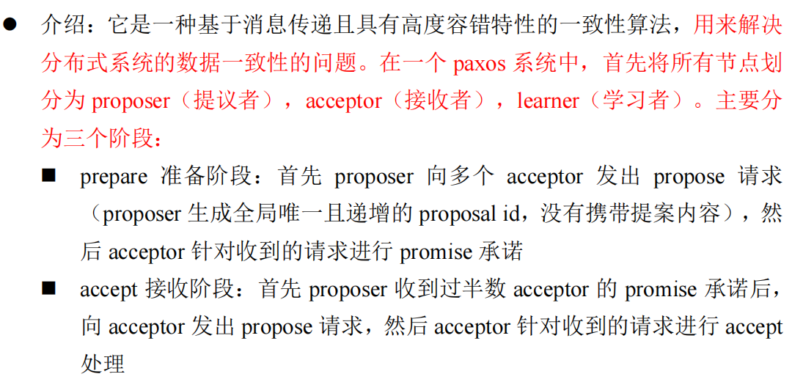 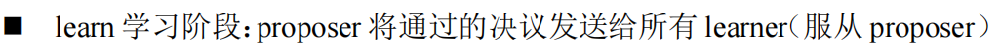Zab协议：
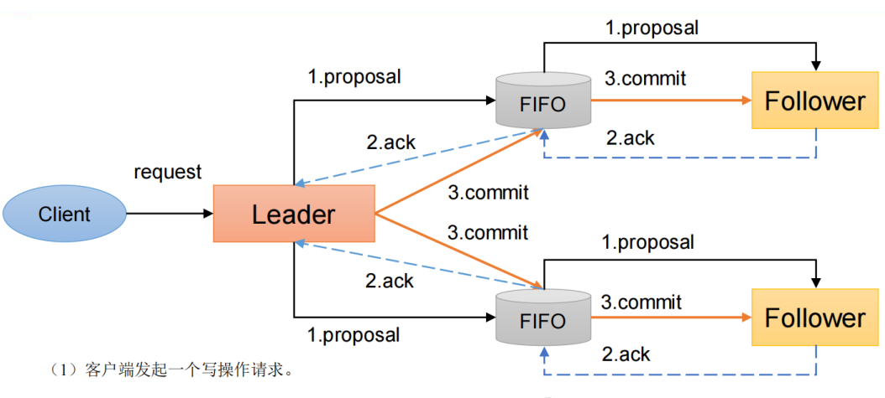 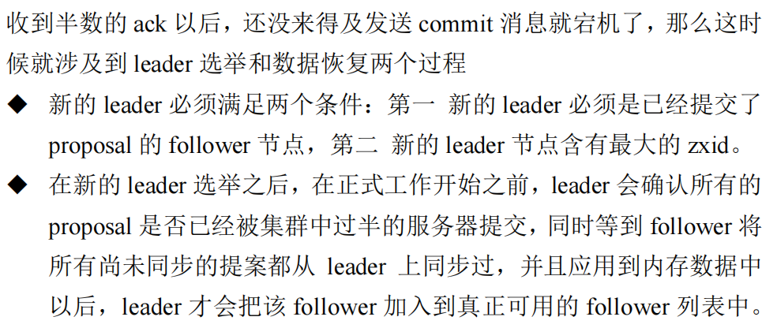
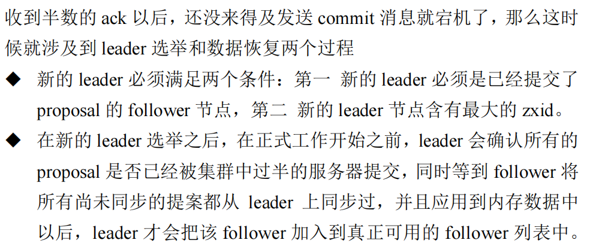
11. 什么是CAP原则？Zookeeper符合这个原则的哪两个？
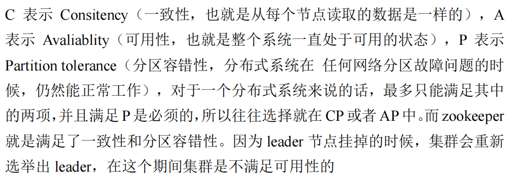为什么只能满足其中的两项？
比如当两个机器之间的数据同步出现了问题：
12. zookeeper如何实现分布式锁
六、Flume
1. Flume是什么？
Flume是一个基于流式架构的高可用、高可靠、分布式海量日志采集、聚合、传输的系统，最主要的作用就是，实时读取服务器本地磁盘的数据，将数据写入到HDFS。
2. ⭐Flume的基础框架（组成）
Flume以Agent为最小独立运行单元，单个Agent由Source、Channel、Sink三大组件组成。
Source：是负责接收数据到 Agent 的组件，可以处理各种类型的数据，比如Taildir Source（Flume1.7以后提供）：断点续传【断点续传主要保证在服务器挂掉的情况下，再次启动服务数据不会丢失的问题;其原理就是在底层维护了⼀个 offset 偏移量(也就是每次读取文件的偏移量)Flume 会通过这个偏移量来找到上次文件读取的位置从⽽实现了断点续传的功能】、多目录
Sink：用于把数据发送到目的地的组件
Channel：Channel 是位于 Source 和 Sink 之间的缓冲区，因此，Channel 允许 Source 和 Sink 运作在不同的速率上。
File Channel：数据存储在磁盘，宕机数据可以保存。但是传输速率慢。适合对数据传输可靠性要求高的场景，比如，金融行业。
Memory Channel：数据存储在内存中，宕机数据丢失。传输速率快。适合对数据传输可靠性要求不高的场景，比如，普通的日志数据。
Kafka Channel：减少了 Flume 的 Sink 阶段，提高了传输效率。
Event：数据传输基本单元，由Header和Body两部分组成
3. ⭐在你的数仓项目中，怎么使用Flume的？三大组件使用的类型都是什么？
采集日志Flume：
Source：TailDir Source（断点续传，多目录）
Channel：Kafka Channel
消费Kafka数据的Flume：
Source：kafkaSource
Channel：FileChanne
Sink：HDFS Sink
4. 谈一谈Flume的事务机制
Flume 使用两个独立的事务分别负责从Soucrce 到 Channel，以及从 Channel 到 Sink 的事件传递。在数据传递过程中，Flume会进行错误检测、错误恢复以及日志记录等操作，以保证数据的可靠性和一致性。
该事务机制主要包括三个阶段：启动事务、进行业务逻辑、提交或回滚事务。
在启动事务阶段，Flume会初始化事务所需的资源，并记录事务的起始时间戳。同时，Flume还会检查前一个事务是否已经成功提交或回滚，以确保事务的顺序性和一致性。
5. 什么是Put事务或Take事务？
Source 到 Channel 是 Put 事务，Channel 到 Sink 是 Take 事务
6. Flume采集数据会丢失吗？
根据 Flume 的架构原理，Flume 是不可能丢失数据的，其内部有完善的事务机制，Source 到 Channel 是事务性的，Channel 到 Sink 是事务性的，因此这两个环节不会出现数据的丢失，唯一可能丢失数据的情况是 Channel 采用 memoryChannel，agent 宕机导致数据丢失，或者Channel 存储数据已满，导致 Source 不再写入，未写入的数据丢失。
Flume 不会丢失数据，但是有可能造成数据的重复，例如数据已经成功由 Sink 发出，但是没有接收到响应，Sink 会再次发送数据，此时可能会导致数据的重复。
7. Flume Agent的配置文件怎么写？
- 定义agent的名称a1
- 定义a1的Source名称、Sink名称、Channel名称
- 描述a1的Source类型（数据源地址），Sink类型（输出地址）、Channel类型以及对应细节
- 自定义定义拦截器
- 将Source和Channel连接起来，将Channel和Sink连接起来
8. 说一说Flume的拓扑结构
- 简单串联：将多个Flume按顺序连接起来，前一个Agent的Sink通过RPC连接下一个Agent的Source
- 复制和多路复用：将相同的数据复制到多个channel中，或者将不同的数据发送到不同的channel中【根据 event 中 Header 的某个 key 的值，将不同的 event 发送到不同的 Channel中】（多channel多sink）
- 负载均衡和故障转移：将多个sink逻辑上分到一个sink组，sink组配合可以实现负载均衡和错误恢复的功能。（一channel多sink）
- 聚合（最常见，实用）：每台服务器部署一个Flume，最后传送到一个集中日志的Flume，再由此 flume 上传到 hdfs、hive、hbase 等，进行日志分析。
9. 说一说Flume的选择器（Channel Selectors）
Channel Selectors，可以让不同的项目日志通过不同的Channel到不同的Sink中去。Replicating Channel Selector (default)（复制）和 Multiplexing Channel Selector（多路复用），前者会将source过来的events发往所有channel，后者可以选择该发往哪些channel。
10. ⭐自定义Flume拦截器的步骤
ETL拦截器：主要是用来判断json是否完整。没有做复杂的清洗操作主要是防止过多的降低传输速率。
时间戳拦截器：主要是解决零点漂移问题
①定义类并实现Interceptor接口
②重写四个方法：
initialize()：初始化
public Event intercept(Event event)：处理单个Event
public List
intercept(List events)：处理多个Event close()
③创建一个静态内部类，实现 Interceptor.Builder
11. 如何实现Flume数据传输的监控的
Ganglia
12. Flume参数调优
（1）Source
Soure个数：增大Source可以适当增大Source读取数据的能力。
batchSize 参数：决定 Source 一次批量运输到 Channel 的 event 条数，适当调大这个参数可以提高 Source 搬运 Event 到 Channel 时的性能。
（2）Channel
type：memory channel和file channel（前面介绍过了）
Capacity：决定 Channel 可容纳最大的 event 条数
transactionCapacity：决定每次 Source 往 channel 里面写的最大 event 条数和每次 Sink 从 channel 里面读的最大event 条数
（3）Sink
Sink个数：增加 Sink 的个数可以增加 Sink 消费 event 的能力。Sink 也不是越多越好够用就行，过多的 Sink 会占用系统资源，造成系统资源不必要的浪费。
batchSize 参数：决定 Sink 一次批量从 Channel 读取的 event 条数，适当调大这个参数可以提高 Sink 从 Channel 搬出 event 的性能。
13. ⭐HDFS Sink的小文件处理
小文件危害;
对于HDFS而言，其本身就不适合存储大量小文件，小文件过多会导致NameNode元数据特别大，占用内存太多，影响HDFS性能。
对Hive而言，在进行查询时，每个小文件都会启动一个Map任务来完成，Map任务启动和初始化的时间远远大于逻辑处理的时间，本末倒置，造成资源浪费
在对HDFS Sink进行配置时，可以通过调整Flume官方提供的三个参数避免写入HDFS大量小文件，基于以上hdfs.rollInterval=3600，hdfs.rollSize=134217728，hdfs.rollCount =0几个参数综合作用，效果如下：
- 文件在达到128M时会滚动生成新文件
- 文件创建超3600秒时会滚动生成新文件
- 不通过Event个数来决定何时滚动生成新文件
14. 浏览器的页面日志采集分类和采集原理
（1）页面浏览（展示）日志采集
一个页面被浏览器加载呈现时采集的日志，是所有互联网产品的两大基本指标：页面浏览量（Page View，PV，每刷新一次页面就记录一次）和访客数（Unique Visitor，UV，对用户id1进行去重）
用户访问淘宝首页（www.taobao.com）
- 步骤1：用户在浏览器内点击淘宝首页链接（www.taobao.com）
- 步骤2：浏览器向淘宝服务器发起HTTP请求。一个标准的HTTP请求包含请求行（最重要的是URL）、请求报头、请求正文
- 步骤3：服务器接收并解析请求，将处理结果以HTTP响应（状态行、响应报头、响应正文）形式发回浏览器
- 步骤4：浏览器接收到服务器的响应内容，并将其按照文档规范展现给用户，从而完成一次请求
采集日志的动作，放在第四步，浏览器开始解析文档时才能进行。
（2）页面交互日志采集
当页面加载和渲染完成之后，用户可以在页面上执行各类操作，这些操作（互动）要求采集用户的互动行为数据，以便通过量化获知用户的兴趣点或者体验优化点。
七、数据仓库
1. 数仓的概念
数据仓库是为了数据分析而设计的企业级数据管理系统，通过海量数据的整合、分析给企业提供决策支持。它具有面向主题、不可更新且时变的特点。
数仓是一个面向主题的、集成的、相对稳定的、反应历史变化的数据集合，用于支持管理决策。
- 面向主题的：主题为与业务相关的数据的类别，每个主题基本对应一个宏观的分析领域，如销售主题，考试主题
- 集成的：数仓中的数据需要经过一系列加工、整理和汇总，这些历史数据记录了企业从过去某个时间点到当前时间点的全部信息
- 相对稳定的：数据一旦进入数仓就不会再发生变化，当有改变的操作型数据进入数据仓库时，会产生新的记录，而不是覆盖原有记录，这样就保证了数据仓库中保存了变化的全部数据。
2. ⭐离线数仓和实时数仓的区别？
（1）数据处理时效性
- 离线数仓：主要处理批量数据，数据的延迟较高，通常是天、小时级别。离线数仓通过定时任务处理已经发生的数据，适用于需要较长时间周期来分析的场景，如日终报表、月度分析等。
- 实时数仓：能够处理实时数据，数据的延迟非常低，通常为秒、分钟级别。实时数仓可以实时处理和分析正在产生的数据，适合对时效性要求较高的场景，如实时监控、实时推荐系统等。
（2）使用场景
- 离线数仓：多用于报表生成、历史数据分析、趋势预测等需要处理大量历史数据的场景，适合定期的数据分析任务。例如，离线数仓可以用来生成日终销售报表、月度用户行为分析等。
- 实时数仓：适用于对数据的实时性有要求的业务场景，比如实时监控、风险控制、实时推荐等。例如，电商平台的实时推荐系统、金融系统的实时风控、物联网的实时设备监控等。
（3） 技术架构
- 离线数仓：通常基于批处理系统构建，如Hadoop、Spark等。数据的采集、存储和处理流程是按照一定的时间间隔批量执行的，ETL（抽取、转换、加载）流程比较长。
- 实时数仓：依赖于流处理技术，如Flink、Kafka、Spark Streaming等，能够实现数据的实时采集、计算和输出。数据是流式处理的，ETL流程较短，数据几乎是实时进入系统并被处理。
（4） 数据一致性
- 离线数仓：因为处理批量数据，所以能保证较高的一致性。数据在经过批处理后，会被严格校验、清洗和转化，确保一致性。
- 实时数仓：由于处理的是实时流数据，数据一致性可能较低，特别是在面对数据延迟、丢失等情况时，需要额外的机制（如容错、补偿）来确保数据一致性。
（5） 计算模式
- 离线数仓：采用批处理模式，即将大量数据按照预定的周期进行处理，适合对大规模历史数据进行分析、聚合。
- 实时数仓：采用流处理模式，能够持续不断地处理数据流，支持实时计算和分析，如滑动窗口计算、增量计算等。
（6） 典型应用
- 离线数仓：历史趋势分析、长期业务决策支持、固定周期的KPI报表等。
- 实时数仓：实时风险预警、实时推荐系统、实时广告竞价、实时用户行为分析等。
总结来说，离线数仓适合处理大批量、历史数据，适用于定期分析和决策支持；而实时数仓适合需要及时响应和决策的场景，能够处理实时数据流并提供即时反馈。
2. ⭐数据库与数据仓库的区别OLTP和OLAP（字节）
数据库与数据仓库的区别实际讲的是 OLTP 与 OLAP 的区别。
| 数据库 | 数据仓库 | |
|---|---|---|
| 处理方式 | 联机事务处理OLTP | 联机分析处理OLAP |
| 读特性 | 每次查询返回少量记录 | 对大量数据进行汇总查询 |
| 写特性 | 随机、低延时写入 | 批量导入 |
| 数据存储 | 业务数据 | 历史数据 |
| 设计理念 | 面向事务设计，为了捕获数据，避免冗余 | 面向主题设计，为了分析数据，引入冗余 |
| 数据量 | GB | TB、PB |
3. 数据仓库建模的意义
- 快速查询所需要的数据
- 减少重复计算
- 更好地组织和存储数据，以便能在性能、成本、效率和质量之间取得最佳平衡。
1. ⭐说一说你了解到的数仓建模方法
（1）ER（范式）建模法：
数据仓库之父Bill Inmon提出的建模方法是从全企业的高度，用实体关系（Entity Relationship，ER）模型来描述企业业务，并用规范化的方式表示出来，在关系型数据库中常用，在范式理论上符合3NF。范式就是指在设计关系型数据库时，需要遵从的不同的规范。关系型数据库的范式一共有六种，分别是第一范式（1NF）、第二范式（2NF）、第三范式（3NF）、巴斯-科德范式（BCNF）、第四范式(4NF）和第五范式（5NF）。遵循的范式级别越高，数据冗余性就越低。这种模型并不适合直接用于分析统计。一个符合第三范式的关系必须具有以下三个条件 :
- 每个属性值唯一，不具有多义性 ;
- 每个非主属性必须完全依赖于整个主键，而非主键的一部分 ;
- 每个非主属性不能依赖于其他关系中的属性，因为这样的话，这种属性应该归到其他关系中去。
1NF：确保每列保持原子性，也就是列不能可分
2NF：在1NF的基础上，要求数据库中的每行必须可被唯一地区分
3NF：在2NF的基础上，要求非主键列完全依赖于整个候选列
（2）维度建模法：
源于Ralph Kimall的《数据仓库工具箱》这本书中的理论。维度模型将复杂的业务通过事实和维度两个概念进行呈现。事实通常对应业务过程，而维度通常对应业务过程发生时所处的环境。虽然存在数据冗余但是方便查询分析。典型代表如星形模型，雪花模型，星座模型。
2. 维度建模和范式建模的区别（字节）
范式建模要求满足3NF（展开说），3NF的最终目的是降低数据冗余，保证数据一致性，但数据关联逻辑复杂，不适合分析统计。
维度建模存在数据冗余，违反了三范式，但能够提高查询性能，便于分析统计。（星形模型，雪花模型，星座模型）
3. ⭐⭐维度建模中表的类型（字节）
（1）事实表（细长）
定义：发生在现实世界中的操作型事件，其所产生的可度量数值（个数、件数、次数、金额），存储在事实表中
特点：
数据量比较大
内容列少行多，比较细长，表里没有存放实际的内容，他是一堆主键的集合，这些ID分别能对应到维度表中的一条记录
经常发生变化，每天增加新数据
分类：
事务事实表：用来记录各业务过程，它保存的是各业务过程的原子操作事件，即最细粒度的操作事件。
周期快照事实表：以具有规律性的、可预见的时间间隔来记录事实，主要用于分析一些存量型（例如购物车存量，账户余额）或者状态型（空气温度，行驶速度）指标。
累积快照事实表：基于一个业务流程中的多个关键业务过程联合处理而构建的事实表，主要用于分析业务过程（里程碑）之间的时间间隔等需求。用来表述过程开始和结束之间的关键步骤事件，覆盖过程的整个生命周期。
（2）维度表（宽）
定义：维度表则围绕业务过程所处的环境进行设计。维度表主要包含一个主键和各种维度字段，维度字段称为维度属性。维度表的主键可以作为与之关联的任何事实表的外键。（没有度量值，都是描述信息）
特点：
内容列多行少，比较宽，通常具有很多属性
内容相对固定，不会轻易发生变化
分类：
全量快照表：每天保存一份全量的维度数据，缺点：浪费存储空间，尤其是当数据的变化比例比较低时
拉链表：记录每条信息的生命周期，能够更加高效的保存维度信息的历史状态
拉链表是维护历史状态及最新状态数据的一种表，用于记录信息的生命周期，一旦一条信息的生命周期结束，就重新开始记录一条新的信息，并把当前日期放入生效开始日期。
为什么要做拉链表：拉链表适用于如下场景，数据量比较大，且数据部分字段会发生变化，变化的比例不大且频率不高，若采用每日全量同步策略导入数据则会占用大量内存，且保存很多不变的信息。在此情况下使用拉链表，既能反应数据的历史状态，又能最大限度地节省存储空间。
在拉链表中想要获取某个时间点的数据全量切片，可以通过生效开始时间 <= 某个日期且生效结束时间 >= 某个日期得到
随时加发生变化的维度叫缓慢变化维
处理缓慢变化维的方法：
- 保留原始值
- 改写属性值
- 增加维度新行
- 增加维度新列
4. ⭐⭐维度建模的过程
粒度：事实表中一行数据所表达的业务细节程度
根据《数据仓库工具箱》中的总结，维度建模分四步走：
（1）选择业务过程：在整个业务流程中选择我们需要建模的业务（一般根据运营提供的需求），业务过程可以是单个业务事件（交易的支付、退款），也可以是某个事件的状态（当前账户的余额），还可以是一系列相关业务事件组成的业务流程。比如大效果广告的总览，信息流广告的检索，流量等等。
（2）声明粒度：在事件分析中，我们要预判所有分析需要细分的程度，从而决定选择的粒度。粒度是维度的一个组合。比如用户粒度，就是用户id维度，用户请求维度，用户登录设备id维度的组合。在同一事实表中，必须具有相同的粒度（一个用户有一个身份证号，多个手机号，那么用户粒度和身份证粒度相同，比两者更细的粒度就是手机号粒度）。对于有明确需求，就建立针对需求的粒度，需求不明就建立原子（最细）粒度。
（3）确认维度：选择好粒度之后，就需要基于此粒度设计维度表，包括维度属性，用于分析时进行分组和筛选。确保维度表中不能出现重复数据，应使维度主键唯一
（4）确认事实：确定分析需要衡量的指标。同一事实表中的所有度量必须具有相同的粒度。最实用的事实就是数值类型和可加类事实
5. ⭐数据建模用的哪些模型？（或维度建模的三种模式）
（1）星型模型
星形模式(Star Schema)是最常用的维度建模方式。星型模式是以事实表为中心，所有的维度表直接连接在事实表上，像星星一样。 星形模式的维度建模由一个事实表和一组维度表成，且具有以下特点：
- 维表只和事实表关联，维表之间没有关联；
- 以事实表为核心，维表围绕核心呈星形分布
（2）雪花模型
雪花模型就是有一张或多张维度表没有直接连接到事实表上，而是通过其他维度表连接到事实表上。虽然这种模型相比星型更规范一些，但是由于这种模型不太容易理解，维护成本比较高，性能比星型模型要低。
（3）星座模型
星座模式是基于多张事实表的，而且多张事实表之间共享维度信息。在业务发展后期，绝大部分维度建模都采用的是星座模式。
6. ⭐为什么要对数仓分层？
原始数据层（ODS）—公共维度层（DIM）—明细数据层（DWD）—汇总数据层（DWS）—数据应用层（ADS）
- 把复杂的问题简单化，减少重复开发
- 隔离原始数据；如果不分层，原始数据业务规则发生变化将会影响后续整个数据清洗工作，牵一发而动全身
- 用空间换时间，用大量预处理来提升效率，但数仓中也会存在大量冗余数据
- 方便数据血缘追踪（相当于数据家谱，方便寻亲寻祖）
7. ⭐⭐⭐详细说说数仓的分层结构
（1）原始数据层（ODS层）：存放未经处理的原始数据，结构上与源系统保持一致，是数据仓库的数据准备区。保持数据原貌，不进行任何修改，起到数据备份的作用。要保存全部历史数据，压缩格式选择压缩比较高的Gzip；建立分区表，避免后续对表查询时候全表扫描
（2）公共维度层（DIM）：基于维度建模理论进行构建，存放维度表。根据每个业务过程所处的环境设计维度表。ORC列式存储+snappy压缩
（3）明细数据层（DWD）：基于维度建模理论进行构建，存放事实表，最细粒度的明细数据（多采用一些维度退化的手法，将维度退化至事实表中，减少事实表和维度表的关联）；这一层主要是原始数据层与数据仓库的主要隔离层，需要对原始数据进行初步的清洗和规范化的操作。
（4）汇总数据层（DWS）：基于上层的指标需求，以分析的主题对象作为驱动，构建公共统计粒度（最大公约粒度）的汇总表（加强指标的维度退化，采用更多的宽表化手段构建公共指标数据层，提升公共指标的复用性，减少重复加工）。这一层是给ADS层服务的，也可以说是给ADS层提供提前的计算，提供给ADS层多个需求共同使用的相同子查询。通常按照业务主题进行组织，如销售汇总、客户行为分析等
（5）数据集市层（DM）：为特定业务部门或用户群体设计的（生态体验DA），相对独立，更加聚焦和针对性强，主题明确（例如用户行为指标）。相比直接在DWD和DWS层查询的时候性能显著提升
（6）数据应用层（ADS）：存放各项统计指标结果，直接面向业务应用。它存储的是用于具体业务场景和报表的最终数据。ADS 层的数据通常经过高度的定制和优化，以满足特定的应用需求。
DWD层和ODS层的区别？DWD层的数据清洗有哪些？DWS层和DWD层的区别？
分层要和业务强相关，比如快手的数据仓库分层是ODS-DIM-DWD-DWS-DM-APP（和ADS类似），多了一个DM层，DWD和DWS是区分数据域的，要想从各个数据域整合，就要用到DM层。一般而言，紧急需求，APP就直接从DWD层取，如果不紧急优先考虑先建一张DWD或者DM（同时考虑任务的复用性），再建APP，目前只有APP层需要新建对应的盖亚标准数据集。
如果上一层级字段发生变更，下一层级如何感知变化？
（1）数据血缘分析:
- 通过数据血缘分析，能够追踪数据在各层之间的流动路径，识别出哪些下游数据依赖于上游的字段。当上游字段变化时，血缘分析工具可以提示相关的下游表或数据集需要更新。
（2）变更数据捕获（CDC，Change Data Capture）:
- 对于 ODS 层，CDC 是一种常用的技术，用于检测和捕获业务系统中数据的变化。这些变化被记录下来，并通过 ETL 传递到 DWD 层和 DWS 层。
（3）定期全量刷新与增量更新:
- 对于维度表和汇总表，通常会采用定期全量刷新或增量更新的策略。如果上游数据发生变化，ETL 任务会定期重新加载或更新下游表中的数据。
（4）时间戳与版本控制:
- 可以在数据表中添加时间戳或版本号，以标记数据的最后更新时间。下游层级可以通过比较时间戳或版本号，判断数据是否需要更新。
（5）通知与调度机制:
- 建立一种通知和调度机制，当上游层级的数据发生变更时，自动触发下游层级的更新任务。调度工具（如 Apache Airflow、Oozie 等）可以用于管理这些依赖关系和更新任务。
（6）元数据管理与监控:
- 元数据管理工具可以帮助追踪数据变化，并提供告警机制。当元数据（如表结构、字段含义等）发生变化时，工具会自动通知相关的数据工程师和业务用户。
8. ⭐什么是数据漂移
通常是指ods表的同一个业务⽇期数据中包含了前一天或后一天凌晨附近的数据或者丢失当天变更的数据，这种现象就叫做漂移，且在⼤部分公司中都会遇到的场景
比如一条从source发来的数据时间是2022.11.10 23:59，到达HDFS Sink的时间已经是2022.11.11 00:05，按照Sink系统内Linux时间戳就会将本应该分区到11.10号的数据落盘到11.11号的分区。
9. ⭐如何解决数据漂移？
在消费Kafka数据Flume中添加拦截器。
由于flume默认会用linux系统时间，作为输出到HDFS路径的时间。如果数据是23:59分产生的。Flume消费kafka里面的数据时，有可能已经是第二天了，那么这部分数据会被发往第二天的HDFS路径。我们希望的是根据日志里面的实际时间，发往HDFS的路径，所以下面拦截器作用是获取日志中的实际时间。
拦截JSON日志，通过fastjson框架解析JSON，获取实际时间ts。将获取的ts时间写入拦截器header中，header的key必须是timestamp，因为Flume框架会根据这个key值识别时间，并将数据写入HDFS对应时间的路径下。
《阿里巴巴大数据之路》给出的实际公司如何解决数据漂移
（1）首先根据log_time（日志数据更新时间）分别冗余前一天15分钟和后一天凌晨开始15分钟的数据，并且用modified_time（表数据更新时间）过滤非当天的数据，确保数据不会因为系统问题而遗漏
（2）然后根据log_time（日志数据更新时间）获取后一天15分钟的数据，针对此数据，按照主键根据log_time做升序排列去重
（3）最后将前两步的结果数据做全外连接，通过限制业务时间proc_time来获取我们需要的数据
10. ⭐谈谈对元数据的理解
元数据（Meta Date），主要记录数据仓库中模型的定义、各层级间的映射关系、监控数据仓库的数据状态及ETL的任务运行状态。一般会通过元数据资料库（Metadata Repository）来统一地存储和管理元数据，其主要目的是使数据仓库的设计、部署、操作和管理能达成协同和一致。
元数据狭义来讲就是用来描述数据的数据。在数仓中，元数据可以帮助开发人员方便找到他们所关心的数据。
在数据仓库中，元数据（Metadata）是指描述数据的数据。它为数据仓库中的数据提供上下文、结构和管理信息，使用户能够理解、访问和使用这些数据。元数据通常分为技术元数据和业务元数据两类。
（1） 技术元数据
- 数据结构描述: 包括数据库表的结构（如表名、列名、数据类型、索引、约束等）、视图定义、存储过程、数据模型等。它描述了数据仓库中的数据如何存储和组织。
- ETL 过程信息: 包括数据抽取、转换和加载（ETL）过程的描述，如数据来源、转换规则、加载时间、数据流图等。它记录了数据从源系统到目标数据仓库的流转过程。
- 数据血缘（Data Lineage）: 描述数据的来源和流向，说明某一数据项如何从源系统被提取、转换，并加载到数据仓库。数据血缘信息对于数据追踪、问题诊断和影响分析非常重要。
- 数据质量信息: 包括数据的准确性、完整性、及时性和一致性等信息，用来评估数据的质量。
- 存储信息: 包括数据的存储位置、存储格式、分区信息等，以及数据的备份和恢复策略。
（2） 业务元数据
- 业务术语和定义: 描述业务相关的术语、概念及其定义，帮助业务用户理解数据的意义。例如，某一业务指标的定义、计算逻辑、用途等。
- 数据使用信息: 说明哪些业务部门或应用程序在使用哪些数据集，这些数据的业务意义以及它们在报告和分析中的应用。
- 访问权限和安全性: 描述谁有权访问哪些数据，访问数据的权限设置和审计信息等。
- 业务规则: 描述与数据相关的业务规则和约束，如数据的有效性规则、业务流程中的数据处理规则等。
（3） 元数据的作用
- 数据发现和理解: 元数据为用户提供数据的上下文信息，帮助用户查找和理解数据的含义和用途，从而更有效地利用数据仓库进行分析和决策。
- 数据管理和维护: 技术元数据为数据管理员提供了数据仓库的结构和运行信息，支持数据仓库的管理、维护和优化。
- 数据一致性和质量控制: 元数据帮助确保数据在不同系统和部门间的一致性，并支持数据质量管理，通过数据血缘和质量信息，用户可以追踪和验证数据的来源和处理过程。
- 支持数据治理: 元数据在数据治理中起到关键作用，通过记录和管理数据的定义、使用情况、质量和安全性，支持组织的整体数据管理策略。
（4）元数据管理工具
Apache Atlas*
简介: Apache Atlas 是由 Apache 软件基金会开发的一个可扩展和可组合的开源元数据管理和治理框架。
主要特性
- 元数据目录: 提供对数据资产的集中管理和搜索功能。
- 数据血缘追踪: 能够追踪数据的来源和流向，帮助理解数据的生命周期。
- 安全和访问控制: 支持细粒度的安全策略和访问控制。
- 可扩展性: 支持自定义元数据模型和类型。
- 集成性: 与 Apache Hadoop 生态系统紧密集成，如 Hive、HBase、Spark 等。
适用场景: 适合在 Hadoop 环境中需要统一管理和治理元数据的组织。
- 为了管理和使用元数据，许多组织会使用元数据管理工具，如 Informatica Metadata Manager、Collibra、Talend Metadata Manager 等。这些工具可以自动化收集、组织和维护元数据，并提供用户友好的界面和查询功能，帮助用户和管理员更好地理解和管理数据。
通过元数据，数据仓库不仅仅是数据的存储库，更是一个可以被解释、管理和充分利用的数据资源库。元数据为数据仓库的所有者和使用者提供了必不可少的工具，使他们能够更好地管理和利用数据仓库中的数据。
11. 如何确定数据域（主题域）
数据仓库模型设计除横向的分层外，通常也需要根据业务情况进行纵向划分数据域。
划分数据域的意义是便于数据的管理和应用。
通常可以根据业务过程或者部门进行划分，本项目根据业务过程进行划分，需要注意的是一个业务过程只能属于一个数据域。
比如交易域、流量域、用户域、考试域等，每个数据域有对应的业务过程。
12. 在处理大数据过程中，如何保证得到期望值？
（1）数据采集的时候不丢失数据
（2）数据处理过程中不丢失数据
（3）离线计算进行数据校对，保证数据的完整性
13. 你感觉数仓建设中最重要的是什么？
数据的准确性，数据的真正价值在于数据驱动决策，通过数据指导运营，在一个不准确的数据驱动下，得到的一定是错误的数据分析，影响的是公司的业务发展决策，最终导致公司的策略调控失败
14. ⭐什么样的数仓是好数仓？
- 完善度：完善度衡量的是数仓模型是否能够满足业务需求，即通过ADS层和DWD层直接得出结果的查询指标占所有指标的比例。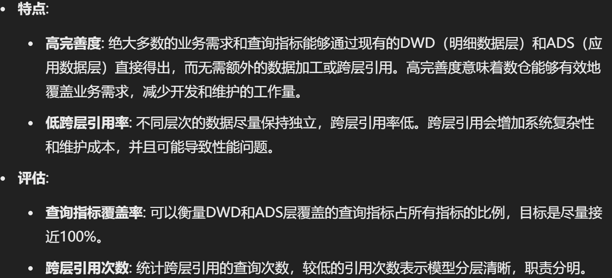
- 复用性高：指的是DWD和DWS（汇总数据层）层的数据能否被下游应用广泛复用，即下游直接产出的表的数量。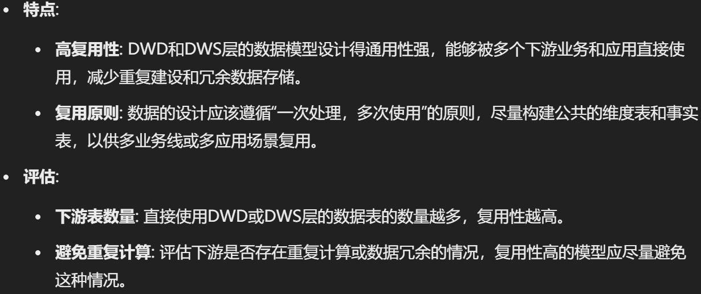
- 规范性：规范性指的是数据模型设计是否遵循企业或行业标准，命名、分层、编码等是否统一，数据的生命周期和治理流程是否清晰。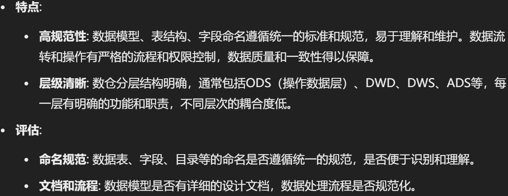
- 稳定性：稳定性指的是数据仓库模型在长时间运行中能够持续提供高质量的数据支持，不受数据增长、业务变更等因素的显著影响。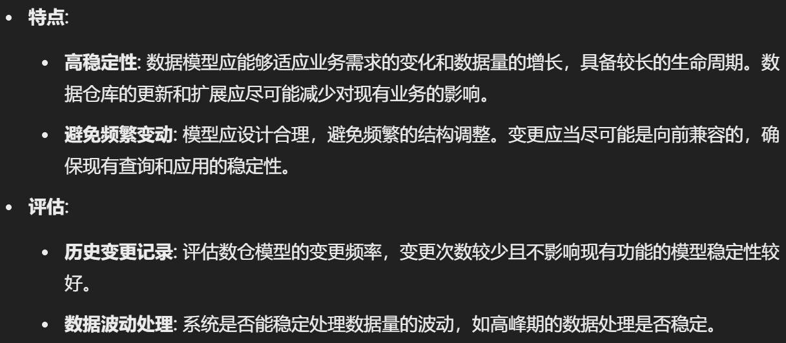
- 准确性： 准确性是指数仓中数据的一致性、准确性以及与源数据的同步性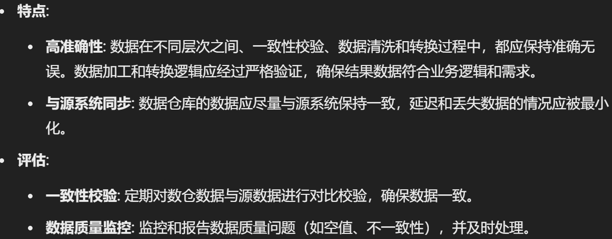
- 健壮性：健壮性是指数仓模型能够应对异常情况（如数据突增、硬件故障、系统更新等）并保持功能稳定和数据可靠。
- 成本：成本包括开发、维护、运行等方面的资源投入，数仓的架构设计应尽可能提高性能和性价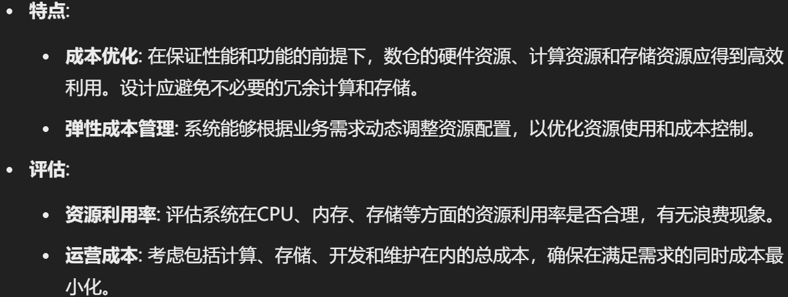
15. ⭐⭐一些重要的名词术语定义
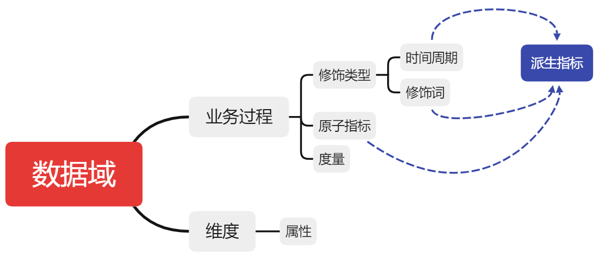==数据域==：对企业的业务数据进行区域划分。将同类型数据放在一起，便于快速查找需要的内容，将业务过程或者维度进行抽象的集合
==业务过程==：企业活动中中的事件，一个个不可拆分的行为事件，每个业务过程对应企业数据仓库的总线矩阵的一行。在业务过程之下，可以定义指标
修饰词：指除了统计维度以外指标的业务场景限定抽象
==原子指标（度量）==：基于某一业务过程的度量值，是业务中不可再拆解的指标。其核心功能就是对指标的聚合逻辑进行了定义。原子指标包含三要素：业务过程、度量值和聚合逻辑
==派生指标==：基于原子指标、时间周期和维度，对原子指标业务统计范围的圈定。派生指标分为事务型指标（具体业务活动）、存量型指标（某些状态，历史截至当前某个时间）、复合型指标（衍生指标）
==衍生指标（复合指标）==：在一个或多个派生指标的基础上，通过各种逻辑运算符合而成的，如比率、比例、变化率、均值、分位数、排名等类型的指标
==维度==：维度是度量的环境，用来反应业务的一类属性，这类属性的集合构成一个维度
==退化维度==：指那个一些常用的维度属性直接写到事实表中的维度操作。这样设计的主要目的是减少下游用户使用时关联多个表的操作
==下钻==：数据明细从粗粒度到细粒度的过程，会细化某些维度。下钻仅需要在查询上增加一个维度属性，附加在SQL的group by语句中。属性可以来自任何与查询使用的事实表关联的维度。下钻不需要存在层次的定义或者是下钻路径
==上卷==：数据的汇总聚合，从细粒度到粗粒度的过程，会无视某些维度
宽表：字段比较多的表，通常是指将业务主题相关的指标与维度、属性关联在一起的表
==粒度==：是指数据仓库的数据单位中保存数据的细化或综合程度的级别。细化程度越高，粒度级越小；相反，细化程度越低，粒度级就越大。粒度就是维度的组合
==业务总线矩阵==：矩阵的行表示业务过程，列表示维度。矩阵中的点表示维度与给定的业务过程是否存在关联关系。
==规范化==：当属性层次被实例化为一系列维度（表），而不是单一的维度（表）时，被称为雪花模型。在规范化后，一张表的字段会拆分到多张表。大多数OLTP的底层数据结构在设计时采用这种规范化技术，删除数据冗余。
==反规范化==：将维度的属性合并到单个维度（表）中的操作称为反规范化。反规范化会产生包含全部信息的宽表，形成数据冗余，常用于OLAP。将多张表的数据冗余到一张表，目的是减少表之间的关联操作，提高查询性能。反规范化会得到星形模型
16. OneData模型实施过程
（1）业务调研
构建数据仓库，需要了解各个业务领域，业务线的业务有什么共同点和不同点，以及各个业务线可以细分为哪几个业务模块。每个业务模块具体的业务流程是怎么样的
（2）需求调研
收集数据的使用者的需求，可以去找DA，运营了解他们有什么数据诉求，此时更多的就是报表需求。需求调研的途径有两种：一种是根据与数据分析师、业务运营人员的沟通获知需求（一般是DPM数据产品经理牵线搭桥）；二是对报表系统中现有的报表进行研究分析。
（3）架构设计
- 数据域划分：对企业的业务数据进行区域划分。将同类型数据放在一起，便于快速查找需要的内容，将业务过程或者维度进行抽象的集合。数据域需要抽象提炼，并且长期维护和更新，不轻易变动
- 构建业务总线矩阵：明确每个数据域下有哪些业务过程；业务过程与哪些维度相关，并定义每个数据域下的业务过程和维度。
（4）规范定义
定义指标体系，包含原子指标、修饰词、时间周期和派生指标
（5）模型设计
17. 如何设计维度
- 选择维度或新建维度，必须保证维度的唯一性，有且只允许有一个维度定义
- 确定主维表，主维表一般是ODS表，直接与业务系统同步
- 确定相关维表。根据对业务系统的梳理，确定哪些表和主维表存在关联关系，并选择其中的某些表用于生成维度属性
- 确定维度属性。从主维表和相关维表中选择维度属性或生成新的维度属性
18. ⭐什么是缓慢变化维及其解决办法？
定义：在现实世界中，维度的属性（维度表的字段）不是静态的，它会随着时间的流逝发生缓慢的变化，与数据增长较为快速的事实表相比，维度变化相对缓慢。
解决办法：
（1）重写维度值，不保留历史数据，始终取最新数据。
（2）插入新的维度行，采用这种方式，保留历史数据，维度值变化前的事实表和过去的维度值关联，维度值变化后的事实和当前的维度值关联。
（3）添加维度列。保留历史数据，可以使用任何一个属性列。
（4）全量快照表：按照每天的周期，每天保留一份全量快照数据，优点是开发和维护成本低，缺点是浪费存储空间，尤其是数据变化率比较低的时候
（5）拉链表：记录每条信息的生命周期，新增两个字段“生效开始日期”和“生效结束时间”
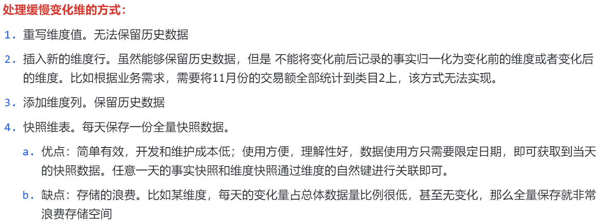 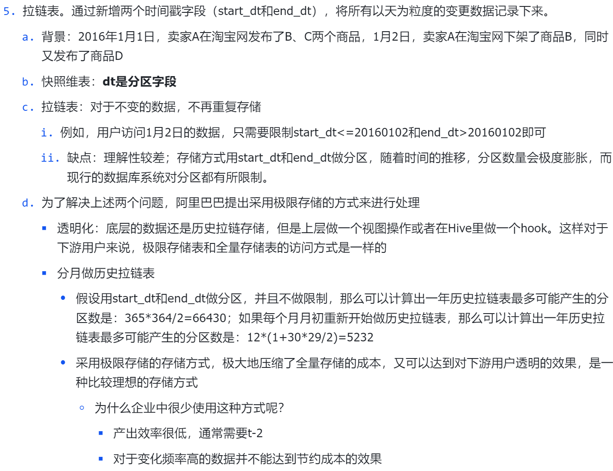19. 多值维度定义及其解决办法
定义：事实表中一条记录在某个维度表中有多条记录与之对应，称为多值维度
解决：
- 降低事实表的粒度（粒度变细）
- 在事实表中采用多字段保存多个维度值，每个字段保存一个维度id
20. 多值属性定义及其解决办法
定义：维度表中某个属性同时有多个值
解决：
- 将多值属性放到一个字段，该字段内容为kv对的形式
- 将多值属性放到多个字段，每个字段对应一个属性
21. 指标（度量）的类型
（1）可加性事实（指标）：按照与事实表关联的任意维度进行汇总
（2）半可加性事实（指标）：只能按照特定维度汇总，不能对所有维度汇总
（3）不可加性事实（指标）：完全不可加的指标，比如比率性指标
22. ⭐事实表的设计过程（举例说明）
（1）以淘宝交易事务事实表为例设计事务事实表
- 选择业务过程：交易订单的四个业务过程：下单、支付、发货、成功完结
- 确定粒度：针对上一步的每个业务过程确定一个粒度，即事务事实表每一行所表达的细节层次。下单、支付、成功完结三个业务过程为交易子订单粒度，发货为物流单粒度（因为现实中同一个子订单可以拆开成多个物流单进行发货）
- 确定维度：按照经常用于统计分析的场景，确定维度包含：卖家，买家，商品，类目，发货地址，收获地址等等。
- 确定事实：不同的业务过程有不同的事实。比如在下单业务过程中，需要包含下单金额，下单数量，支付过程中，包含支付金额，分摊邮费，红包金额，积分金额，在完结过程中包含确认收获金额。
| 单事务事实表 | 多事务事实表 | |
|---|---|---|
| 业务过程 | 一个 | 多个 |
| 粒度 | 相互间不相关 | 相同粒度 |
| 维度 | 相互闲不相关 | 一致 |
| 事实 | 只取当前业务过程中的事实 | 保留多个业务过程中的事实，非当前业务过程中的事实需要置零处理 |
| 冗余维度 | 多个业务过程，则需要冗余多次 | 不同的业务过程只需要冗余一次 |
| 理解程度 | 容易理解，不会混淆 | 难以理解，需要通过标签来限定 |
| 计算存储成本 | 较多，每个业务过程都需要计算存储一次 | 较少，不同业务过程融合在一起，降低了存储计算成本，单是非当前业务过程的度量存在大量零值 |
（2）淘宝卖家历史至今快照事实表为例设计周期快照事实表
周期快照事实表以具有规律性的、可预见的时间间隔来记录事实，主要用于分析存量或状态类型指标。
- 确定粒度：每天针对卖家的历史截至当日的下单支付金额进行快照
- 确定状态度量（事实）：淘宝卖家历史至今汇总事实表，包含了历史截至当日的下单金额、历史截至当日的支付金额等度量
（3）淘宝交易累计快照事实表为例设计累计快照事实表
累计快照事实表通过具有多个日期字段，分析里程碑间隔之间的需求。累计快照事实表的另外一个作用就是保存全量数据。
- 选择业务过程：下单、支付、发货、成功完结
- 确定粒度：针对上一步的每个业务过程确定一个粒度，即事务事实表每一行所表达的细节层次。下单、支付、成功完结三个业务过程为交易子订单粒度，发货为物流单粒度（因为现实中同一个子订单可以拆开成多个物流单进行发货）
- 确定维度：在事务事实表的基础上增加下单时间、支付时间、发货时间、确认收货时间，对应于日期维表
- 确定事实：将业务过程对应的事实均放入事实表中，再将每个过程的时间间隔作为事实放在表中
23. ⭐⭐哪些表适合全量同步，哪些表适合增量同步？
适合全量同步的表：
- 小规模数据表：
- 数据量较小，记录数不多，执行全量同步的时间和资源开销都比较低。
- 低更新频率的表：
- 数据变化不频繁，增量同步的优势不明显。全量同步能够确保数据的一致性。
- 静态数据表：
- 表的数据基本不变，例如字典表、配置表等。这类表通常一次同步即可，无需频繁更新。
- 历史数据表：
- 数据已经不再更新，只是保留历史记录，可以通过一次全量同步完成数据传输。
适合增量同步的表：
- 大规模数据表：
- 数据量很大，全量同步的时间和资源消耗过高，通过增量同步减少传输的数据量和时间。
- 高更新频率的表：
- 数据变化频繁，全量同步效率较低，增量同步能够及时更新变化的数据，保持同步的实时性。
- 关键业务表：
- 包含重要的实时数据，如订单表、交易记录表等。增量同步可以确保数据快速更新，并避免全量同步可能带来的系统负载。
- 日志表或事务表：
- 这类表通常是追加操作，数据只会增加，通过增量同步可以只同步新增部分，提高效率。
综合考虑：
在实际操作中，往往需要根据表的特点、业务需求、数据库性能、网络带宽等多个方面综合考虑，决定使用全量同步还是增量同步。对于大型且关键的业务系统，通常会选择增量同步来降低资源消耗并提高数据一致性。而对于一些变动不大的表，初次同步时可以进行全量同步，后续再根据需求进行增量更新。
23.+⭐ 有一些表进行逻辑删除，物理删除，修改和新增这四种操作，这种表是否可以进行增量同步？
可以进行增量同步，但需要考虑如何准确捕捉和处理这四种操作（逻辑删除、物理删除、修改、新增）。以下是实现增量同步的几种策略：
（1） 操作标识字段
- 添加操作类型字段: 在表中添加一个字段（例如
operation_type），用来标识每一行的操作类型（如INSERT、UPDATE、LOGICAL_DELETE、PHYSICAL_DELETE）。在数据同步时，根据这个字段判断操作类型并进行相应的处理。 - 时间戳字段: 记录每条记录的最后一次修改时间（如
updated_at），并基于此时间戳来进行增量同步。例如，只同步自上次同步时间以来有变化的记录。
（2）逻辑删除的处理
- 标记逻辑删除: 对于逻辑删除操作，通常通过在记录中设置一个标志位（如
is_deleted）或状态字段来表示。增量同步时，需要将此字段也同步到目标系统，并在目标系统中实现相应的处理逻辑（如在目标系统中标记记录为已删除）。 - 同步逻辑删除的记录: 逻辑删除并不删除记录本身，因此可以将这些记录正常同步，但需要目标系统知道这是逻辑删除操作，以便进行相应处理。
（3） 物理删除的处理
- 删除日志表: 如果需要增量同步物理删除的记录，可以维护一个删除日志表（
delete_log），记录被物理删除记录的主键和删除时间。同步时，可以查找删除日志表，将相应的删除操作同步到目标系统。 - 数据库触发器: 使用数据库触发器在物理删除时，将被删除记录的信息插入到一个日志表中，确保同步时能处理这些删除操作。
（4） 修改操作的处理
- 版本控制: 对每条记录进行版本控制，每次修改时递增版本号（如
version字段）。增量同步时，同步修改后的最新版本，并在目标系统中替换旧版本。 - 更新字段: 通过
updated_at字段来捕捉最近修改的记录，只同步那些在上次同步后被修改的记录。
（5）新增操作的处理
- 直接插入: 新增的记录可以通过增量同步机制直接插入到目标系统中。通过
created_at字段可以方便地识别新增的记录。
（6） 同步机制选择
- 基于时间戳的增量同步: 定期检查数据表中
updated_at或created_at字段的变化，只同步自上次同步以来有变化的记录。 - 基于变更数据捕获 (CDC) 的同步: 使用 CDC 工具（如 Debezium、GoldenGate）来捕获数据库表的所有变化（插入、更新、删除），然后将这些变化实时同步到目标系统。
- 批量同步与实时同步结合: 在大多数情况下，可以通过批量增量同步的方式处理，结合实时同步机制处理高频率的更新或删除操作。
（7）数据一致性检查
- 数据校验: 定期对源系统和目标系统的数据进行对比和校验，确保同步后的数据与源数据一致，特别是要确保删除操作的同步不遗漏。
- 数据完整性: 处理逻辑删除时，要确保在目标系统中相应地标记删除，而不是保留为活跃记录。
总结
表中包含逻辑删除、物理删除、修改和新增操作时，可以进行增量同步，但需要设计一个健全的机制来正确捕捉和处理这些操作，确保同步过程中的数据一致性和完整性。通过使用操作标识字段、时间戳、删除日志和CDC工具，可以有效实现这一目标。
24. 数据采集过程中，如何保证数据不丢失
在数据仓库（数仓）建设过程中，数据采集是确保数据完整性和可靠性的关键环节。为了保证数据采集过程中数据不丢失，可以采取以下措施：
（1） 数据源的可靠性
- 数据源高可用性设计: 确保数据源本身是高可用的，避免因数据源的不可用导致数据丢失。
- 容错机制: 数据源接口应具备容错能力，能够在出现错误或异常时进行自动重试或报警。
（2） 数据传输的保障
- 幂等性设计: 在数据采集过程中，尤其是在数据传输时，应设计幂等性机制，确保即使某些数据多次采集也不会产生重复或丢失。
- 传输协议选择: 选择具有可靠性保障的传输协议，如 HTTPS、TCP，而不是不可靠的协议（如 UDP）。
- 重试机制: 在数据传输失败的情况下，配置重试机制，并记录重试日志，以便在多次失败后能够进行人工干预。
- 数据校验: 在数据传输过程中，通过校验和（如 MD5、CRC）确保数据未被篡改或丢失。
（3） 数据存储的可靠性
- 分布式存储: 使用分布式存储系统（如 HDFS、Ceph）来存储采集的数据，分布式存储通常具备数据冗余和自动恢复能力。
- 数据快照和备份: 定期对数据进行快照和备份，确保在发生数据丢失或损坏时能够及时恢复。
（4）数据采集任务的调度和监控
- 任务调度系统: 使用可靠的任务调度系统（如 Apache Airflow、Azkaban）来管理数据采集任务，确保任务按时执行，避免遗漏。
- 任务监控和报警: 对数据采集任务进行实时监控，配置报警机制。当任务执行失败、延迟或数据量异常时，能够及时报警并进行处理。
（5） 数据质量管理
- 数据落地前的校验: 在数据入库前进行校验，确保采集的数据完整且无误。如果发现异常，进行相应的补救措施，如重新采集或修正错误数据。
- 数据审计: 定期对采集的数据进行审计，检查数据的完整性、一致性，并与源数据进行对比，确保没有遗漏或丢失。
（6） 数据流中的事务支持
- 事务性操作: 在可能的情况下，使用事务性操作确保数据在处理过程中要么全部成功，要么全部失败，以避免部分数据处理成功、部分失败导致的数据不一致或丢失。
- Kafka 等消息队列的使用: 使用支持事务的消息队列（如 Kafka）在数据采集过程中进行数据缓冲和传输，确保在数据采集过程中即使出现故障，数据也不会丢失。
（7） 异常数据处理
- 异常数据捕获: 对采集过程中可能出现的异常数据进行捕获和存储，避免数据因格式错误或内容异常而丢失。
- 数据补偿机制: 针对采集过程中可能遗漏的数据，设置数据补偿机制，定期或在发现数据丢失时进行重新采集。
（8） 日志和审计
- 详细日志记录: 对数据采集过程中的所有操作进行详细的日志记录，包括成功和失败的采集操作、数据量、时间戳等，以便在数据丢失时能够追溯原因。
- 审计追踪: 定期审查和分析数据采集日志，确保数据采集过程的透明性和可追溯性。
通过这些措施，可以有效保障数据采集过程的完整性和可靠性，防止数据丢失，确保数仓的数据质量和一致性。
25. 如何保证指标建设的规范性？
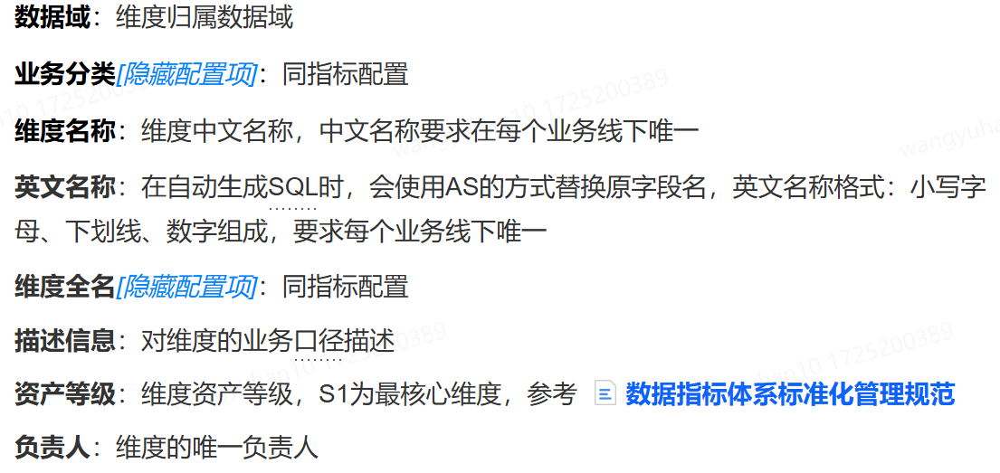为了保证数据仓库中指标建设的规范性，可以从以下几个方面入手：
（1） 制定统一的指标定义标准
- 指标词典（指标库）: 创建一个标准化的指标词典或指标库，明确每个指标的定义、计算逻辑、维度、数据来源等信息。所有指标的定义必须在指标词典中注册并得到审批，确保统一理解和使用。
- 命名规范: 规定指标的命名规则，统一指标命名的格式、大小写、缩写使用等，避免出现同一指标不同名称或不同指标名称相似的情况。
- 元数据管理: 利用元数据管理工具对指标的所有相关信息进行管理，包括指标的创建者、创建时间、数据来源、使用场景等，确保指标建设的透明性和规范性。
（2） 统一的计算逻辑和口径
- 计算标准化: 确保相同的指标在不同场景下的计算逻辑和口径一致。对于常用指标，可以将其计算逻辑封装成标准函数或视图，供全公司范围内的人员调用。
- 复用指标: 在可能的情况下，复用已有指标的计算逻辑，避免重复建设或因个人理解差异导致的指标不一致。
（3） 清晰的指标层次架构
- 指标分类: 将指标分为基础指标（如 PV、UV）、派生指标（如转化率、增长率）、复合指标（如 ROI）等不同层次，清晰地定义每个层次的作用和使用场景。
- 分层模型设计: 根据数据仓库的分层模型（如ODS层、DWD层、DWS层、ADS层）进行指标的设计和计算，确保指标的分层合理性和规范性。
（4） 版本控制与变更管理
- 指标版本管理: 对每个指标的定义和计算逻辑进行版本控制，记录每次变更的内容、原因和影响，确保在需要时能够回溯到历史版本。
- 变更审批流程: 建立严格的指标变更审批流程，确保任何指标的修改都经过必要的评估和审核，防止随意修改带来的不一致性问题。
（5） 审核与评估机制
- 指标评审委员会: 设立指标评审委员会，定期对新增或修改的指标进行审核，确保其符合公司标准和业务需求。
- 定期审计与优化: 对已有指标进行定期审计，检查其定义和计算逻辑的合理性、准确性，并根据业务变化进行适当优化和调整。
（6） 自动化工具的使用
- 指标自动化管理工具: 使用专门的指标管理工具（如 Looker、Tableau 的指标管理模块），自动化管理指标定义、计算逻辑和使用情况，确保全公司范围内的一致性。
- 监控和报警系统: 建立指标监控和报警系统，自动检测指标异常波动或计算错误，及时发现并纠正问题。
（7） 培训与文档
- 指标使用培训: 定期对业务人员和数据分析师进行培训，讲解指标的定义、使用方法、注意事项等，确保所有相关人员都能够正确理解和使用指标。
- 文档完善: 详细记录指标的定义、计算逻辑、使用场景等信息，形成完整的文档体系，供团队成员查阅。
（8） 数据治理框架
- 数据治理委员会: 成立数据治理委员会，监督和管理整个数据仓库的建设，包括指标的规范性建设，确保数据的统一性和一致性。
- 数据治理政策: 制定数据治理政策，明确数据管理和使用的规范，包括指标建设的原则和流程。
通过以上方法，可以有效保证数据仓库中指标建设的规范性，减少因指标定义不一致或计算逻辑错误导致的数据质量问题，确保数据分析和业务决策的准确性和可靠性。
八、DataX
1. 什么是DataX？
阿里巴巴开源的一个异构数据源离线同步工具，支持的Source和Sink要更多一些
2. DataX框架设计
Framework + plugin架构构建

Framework处理缓冲、流程控制、并发、上下文加载等高速数据交换的大部分技术问题，并提供简单的接口与插件接入。
数据在DataX中以中间状态存在，并且在目标数据系统中将中间状态的数据转换为对应的数据格式后写入
3. DataX调优
调整速度
调整内存
4. ⭐在使用DataX的时候，是否遇到问题？
遇到过。
MySql中的Null对应Hive中的\N，但是dataX不能自动转换成\N，只能在Hive建表的时候执行null值存储格式为空字符串（’’）
5. DataX配置文件生成脚本
1 | python gen_import_config.py -d database -t table |
6. 数据同步的三种方式
（1）直连同步
通过定义好的规范接口API和基于动态链接库的方式直接连接业务库，容易实现，但是当大批量数据同步时会降低甚至拖垮业务系统的性能，不太适合从业务系统到数据仓库系统的同步。
（2）数据文件同步
数据文件同步通过约定好的文件编码、大小、格式等，直接从源系统生成数据的文本文件，由专门的文件服务器，如FTP服务器传输到目标系统后，加载到目标数据库系统中。
（3）数据库日志解析同步
变更数据抓取软件。它会实时监控MySQL数据库中的变更操作（insert，update，delete），并将变更数据以JSON字符串发送给Kafka等流数据处理平台
九、MaxWell
1.什么是MaxWell，为什么选择MaxWell？
MySQL变更数据抓取软件。它会实时监控MySQL数据库中的变更操作（insert，update，delete），并将变更数据以JSON字符串发送给Kafka等流数据处理平台。
为什么选：断点续传，自动根据库名和表名把数据发往kafka的对应主题。
2. ⭐MaxWell底层原理
mysql主从复制。Maxwell原理就是将自己伪装成slave，实时读取MySQL数据库的二进制日志（Binlog），从master同步数据。
十、DolphinScheduler
1. 你使用的版本
2.0.3支持的报警信息更全一些，配置更容易。102配置master、worker，103配置worker，104配置worker
2. 什么时候执行？
00:10 业务数据
00:30 用户行为数据
3. 出现异常怎么办？
发邮件，打电话，查看任务，手动重试
十一、Spark
0. 一句话介绍Spark
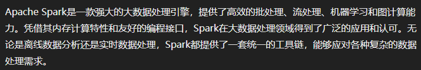
1. ⭐Spark解决了什么问题？和hadoop的MR对比一下
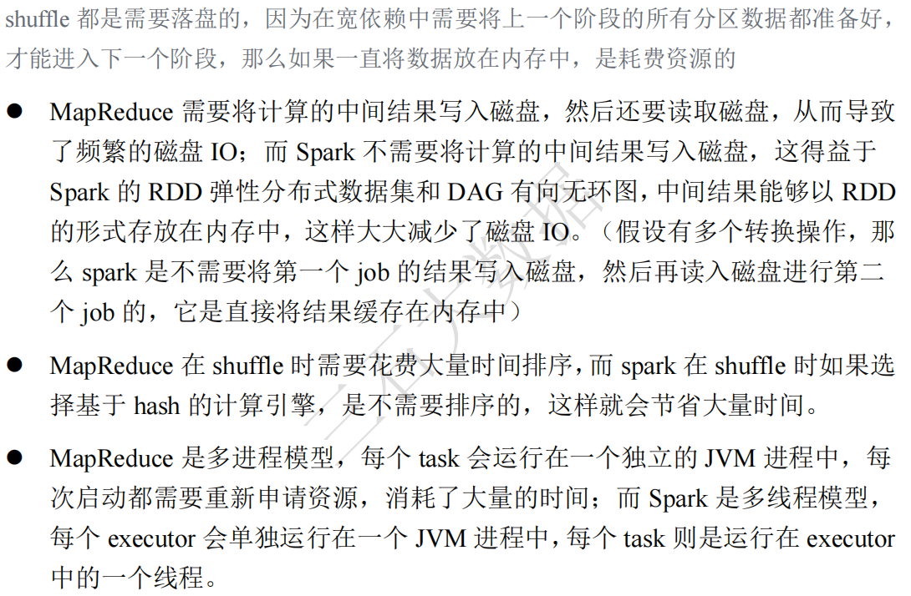Hadoop主要解决的是海量数据的存储和海量数据的分析计算，Spark主要解决海量数据的分析计算。Spark是基于MR开发的，与Hadoop相比，Spark实现了基于内存的数据流转，但是更快，当资源紧张的时候，Spark程序可能跑不起来，而使用MR虽然慢，但是最终可以跑完。
Spark实现了高效的DAG执行引擎，可以通过基于内存来高效处理数据流，计算的中间结果是存储在内存中的。
| Spark | MapReduce | |
|---|---|---|
| 数据模型 | RDD | 抽象的<K,V>格式 |
| 计算逻辑 | DAG有向无环图，可以迭代计算 | 一次计算 |
| 数据依赖关系 | 窄依赖、宽依赖 | 固定map-shuffle-reduce，只有ShuffleDependency |
| 中间数据 | 内存（有一套内存管理系统） | 磁盘，重复读写hdfs |
| 底层操作 | 转换算子和行动算子，操作更丰富 | 只有map和reduce，表达能力欠缺 |
| 适合场景 | 低时延，迭代时计算 | 高时延 |
| 任务完成度 | 可能由于OOM内存溢出，导致程序无法运行 | 虽然运行缓慢，但至少可以慢慢运行完 |
2. ⭐Spark由哪些模块？
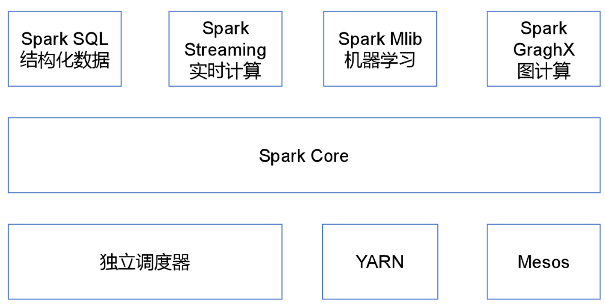
Spark Core：实现了Spark的基本功能，包含任务调度、内存管理、错误恢复、与存储系统交互等模块。Spark Core中还包含了对弹性分布式数据集(Resilient Distributed DataSet，简称RDD)的API定义。
Spark SQL：是Spark用来操作结构化数据的程序包。通过Spark SQL，我们可以使用 SQL或者Apache Hive版本的HQL来查询数据。Spark SQL支持多种数据源，比如Hive表、Parquet以及JSON等。
Spark Streaming：是Spark提供的对实时数据进行流式计算的组件。提供了用来操作数据流的API，并且与Spark Core中的 RDD API高度对应。
Spark MLlib：提供常见的机器学习功能的程序库。包括分类、回归、聚类、协同过滤等，还提供了模型评估、数据 导入等额外的支持功能。
Spark GraphX：主要用于图形并行计算和图挖掘系统的组件。
集群管理器：Spark设计为可以高效地在一个计算节点到数千个计算节点之间伸缩计算。为了实现这样的要求，同时获得最大灵活性，Spark支持在各种集群管理器（Cluster Manager）上运行，包括Hadoop YARN、Apache Mesos，以及Spark自带的一个简易调度器，叫作独立调度器。
3. Spark的运行（部署）模式
（1）Local模式：在本地部署单个Spark服务
（2）Standalone模式：使用Spark自带的独立调度器进行部署
（3）Yarn模式：使用Hadoop的YARN组件进行资源与任务调度（国内最常用）
（4）Mesos：使用Mesos平台进行资源与任务调度
4. ⭐简述YarnCluster模式作业提交流程及后续的运行流程
注意：Yarn模式分为两种：yarn-client模式和yarn-cluster模式，区别是，前者的Driver程序运行在客户端，在输出日志中可以找到计算结果；后者的运行程序运行在由RM启动的NM上的APPMaster上，在输出日志中不会展示计算结果。
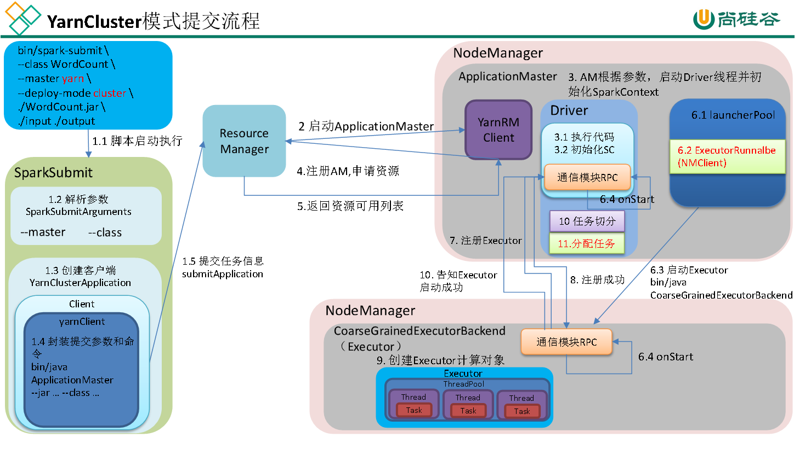
（1）脚本启动–master yarn –deploy-mode cluster，sparksubmit解析参数（–class类，–master模式），并创建客户端yarnclient，该客户端提交任务信息给RM
（2）RM选择一台NM，在NM中启动APPMaster
（3）APPMaster根据参数，启动Driver线程并初始化SparkContext
（4）APPMaster向RM申请计算资源，RM给其返回资源可用列表
（5）APPMaster向另外一台NM发送启动ExecutorBackend命令，ExectorBackend启动后通过通信模块向APPMaster请求注册Executor
（6）注册成功后，ExectorBackend创建Exector计算对象（进程）
以下步骤为作业运行过程
（7）SpackContext构建DAG有向无环图，将DAG分解成Stage
（8）把Stage发送给TaskScheduler
（9）Excutor向SparkContext申请Task，TaskScheduler将Task发送给Excutor运行，同时SparkContext将应用程序代码发送给Executor
5. Spark提交作业时的几个重要参数
executor-cores —— 每个executor使用的内核数，默认为1，官方建议2-5个，我们企业是4个
num-executors —— 启动executors的数量，默认为2
executor-memory —— executor内存大小，默认1G
driver-cores —— driver使用内核数，默认为1
driver-memory —— driver内存大小，默认512M
6. Spark有哪些组件？
- Master（在YARN中是一个NM）：管理集群和节点，不参与计算
- Worker（在YARN中是另一个NM）：计算节点，启动Executor来执行具体的Spark任务，还负责与Master通信
- Driver：运行程序的main方法，创建Sparkcontext对象
- Executor：Spark执行器，负责执行具体的计算
- Task：Spark应用的计算任务，是Spark中最小的计算单位，不能再拆分。task以线程方式运行在Executor进程中，执行具体的计算任务
7. ⭐什么是RDD？DataFrame和DataSet？
RDD为弹性分布式数据集，是Spark中最基本的数据抽象，代表一个弹性的、不可变、可分区、里面元素可并行计算的集合，将输入、输出、中间数据抽象表示为统一的数据模型，每个输入输出、中间数据都可以是一个具体的实例化的RDD。RDD只是一个逻辑概念，在内存中不会真正地为某个RDD分配存储空间（除非该RDD需要被缓存）。
RDD可以包含多个数据分区，不同数据分区可以由不同的任务（task）在不同的节点进行处理。
| 名称 | 区别 | 应用场景 |
|---|---|---|
| RDD（Resilient Distributed Dataset） | 是 Spark 最底层的数据抽象，不支持 Schema，操作比较底层和灵活，但效率相对较低。 | 适用于需要进行底层数据操作和自定义转换逻辑的场景，例如复杂的数据清洗和预处理。 |
| DataFrame | 具有结构化的 Schema 信息，类似于关系型数据库中的表。操作更丰富，基于优化的执行引擎，性能较好。 | 适合处理结构化数据，进行数据分析和探索，以及与 SQL 结合使用。 |
| Dataset | 是 DataFrame 的扩展，在 Java 和 Scala 中具有强类型检查，性能更优。 | 对类型安全和性能要求极高的场景，尤其是在大型企业级应用中。 |
例如，在处理大规模的日志数据时，如果需要进行复杂的自定义转换和处理逻辑，可能会首先使用 RDD。而对于常见的结构化数据分析任务，如报表生成和数据探索，DataFrame 会更方便。在一些对性能和类型安全有严格要求的企业级应用中，Dataset 则能发挥更好的作用。
三者的共同性：
（1）RDD、DataFrame、DataSet全都是Spark平台下的分布式弹性数据集，为处理超大型数据提供便利。
（2）三者都有惰性机制，在进行创建、转换，如map方法时，不会立即执行，只有在遇到Action行动算子如foreach时，三者才会开始遍历运算。
（3）三者有许多共同的函数，如filter，排序等。
（4）三者都会根据Spark的内存情况自动缓存运算。
（5）三者都有分区的概念。
8. RDD的创建方法
（1）从集合中创建
1 | //单值 |
（2）从外部存储系统中创建
1 | JavaRDD<String> rdd = jsc.textFile("D:\\idea-maven-space\\SparkCore\\src\\main\\data\\test.txt"); |
（3）从其他RDD创建
9. RDD如何设置分区数？以及常用的分区方法？
1 | //从集合中创建RDD |
注意：单值类型的RDD没有分区器partitioner，只有key-value类型的RDD才有分区器partitioner
spark中常见的数据分区器方法（partitioner）：
- 水平划分：按照记录的索引进行划分
- Hash划分（HashPartitioner）：使用记录的Hash值来对数据进行划分
- Range划分（RangePartitioner）：用于排序任务，按照元素的大小关系将其划分到不同分区，尽量保证每个分区中数量均匀，分区间有序，分区内无序。
⭐spark的并行度设置
最后一个RDD的分区个数就是（决定）task个数，各个stage的task的个数就是（决定）spark作业在各个stage的并行度
10. ⭐Spark中有哪些算子，两种算子之间的区别
两种，transformation转换算子和action行动算子
- transformation转换算子可以不断生成新的RDD（RDD本身不可变，所以生成新的RDD），转换算子都是懒加载，并不会立即执行。
- action行动算子一般是对数据结果进行后处理，产生输出结果，而且会触发Spark提交job真正执行数据处理任务
区分两种算子最直观的方法就是看返回值，transformation()操作一般返回RDD类型，而action()操作一般返回数值、数据结构（如Map）或者不返回任何值（如写磁盘）
11. ⭐说一说Spark的Transformation转换算子，及其功能
（1）单Value
- **map()**：映射，使用func对rdd1中的每个记录进行处理，输出一个新记录。实际上map可以单值-》单值，单值-》KV对，KV对-》KV对，KV对-》单值
1 | JavaRDD<Integer> rdd1 = jsc.parallelize(Arrays.asList(1,2,3,4)); |
- **mapPartitions(func)**：对RDD中的每个分区进行fubc操作，输出新的一组数据。每次处理一个分区的数据。函数的参数是一个迭代器，返回值也是另一个迭代器。
- **filter()**：过滤，接收一个返回值为布尔类型的函数作为参数，如果func为true，则该元素会被添加到新的RDD中
1 | JavaRDD<Integer> rdd1 = jsc.parallelize(Arrays.asList(1,2,3,4)); |
- **flatMap()**：扁平化，对rdd1中的每一个元素（List）执行func操作，然后将所有新元素组合得到rdd2（降维，扁平化）
1 | List<List<Integer>> data = Arrays.asList( |
- **groupBy()**：分组，按照传入函数的返回值进行分组。将每一条数据增加一个标记（返回值），相同标记的数据会放置一个组中（将相同的key对应的值放入一个迭代器），这个标记其实就是组名。
1 | JavaRDD<Integer> rdd = jsc.parallelize(Arrays.asList(1, 2, 3, 4), 2); |
- **distinct()**：去重，将去重后的元素放到新的RDD中
1 | JavaRDD<Integer> rdd = jsc.parallelize(Arrays.asList(1, 1, 1, 1, 2, 2), 3); |
- **sortBy(func)**：排序，在排序之前，可以将数据通过f函数进行处理，之后按照func函数处理的结果进行排序，默认为正序排列。排序后新产生的RDD的分区数与原RDD的分区数一致。Spark的排序结果是全局有序。
1 | JavaRDD<Integer> rdd = jsc.parallelize(Arrays.asList(1, 3, 2, 4, 33, 11), 2); |
- **coalesce()**：合并（缩减）分区
1 | JavaRDD<Integer> rdd = jsc.parallelize(Arrays.asList(1, 3, 5, 2, 4, 6), 2); |
- **repartition()**：重分区，repartition方法其实就是设定shuffle为true的coalesce方法
1 | JavaRDD<Integer> rdd = jsc.parallelize(Arrays.asList(1, 3, 5, 2, 4, 6), 2);//[1,3,5] [2,4,6] |
- **glom()**：将rdd1中每个分区的记录合并到一个List中
1 | List<Integer> list = Arrays.asList(1, 2, 3, 4, 5); |
（2）双vlaue
- **intersection(rdd)**：求交集，将rdd1和rdd2的共同元素抽取出来，形成新的rdd3
1 | List<Integer> list = Arrays.asList(1, 2, 3, 4, 5); |
- **union(rdd)**：将rdd1和rdd2中的元素合并在一起得到rdd3
1 | List<Integer> list = Arrays.asList(1, 2, 3, 4, 5); |
- **zip(rdd)**：将rdd1和rdd2中的元素按照一一对应的关系组合成kv对，K来自rdd1，V来自rdd2，要求两个rdd分区数相同且每个分区包含的元素个数相同
1 | List<Integer> list = Arrays.asList(1, 2, 3, 4, 5); |
- **subtract(rdd)**：计算在rdd1中而不在rdd2中的记录
1 | List<Integer> list = Arrays.asList(1, 2, 3, 4, 5); |
（3）Key-Value
- **mapValues()**：只对值映射，使用func对rdd1中的每个记录的值进行处理，输出一个新记录
1 | Tuple2<String, Integer> a = new Tuple2<>("a", 1); |
- **groupByKey()**：对每个key进行分组聚合（这种聚合只是聚集在一起，不进行融合计算），类似SQL中Groupby子句，一般会有重分区（默认Hash划分），所以会发生shuffle。【注意：分组和分区不一样，一个分区中可能有多个分组，同一个分组只能在同一个分区中】
1 | JavaPairRDD<String, Integer> rdd = jsc.parallelizePairs(Arrays.asList( |
- **reduceByKey(func)**：该操作可以将RDD[K,V]中的元素按照相同的K对V进行聚合。其存在多种重载形式，还可以设置新RDD的分区数。相比于groupByKey，reduceByKey可以在Shuffle之前使用func对数据进行预聚合（类似于MR中的map-side聚合），减少了数据传输量和内存用量，效率较高。在Shuffle之前进行一个本地的combine()预聚合操作（分区内），在Shuffle后再进行reduce()聚合（分区间），这两次聚合使用的逻辑相同都是func。
1 | //TODO 将分组聚合功能进行简化-reduceByKey |
- **aggregateByKey(zeroValue,seqOp,comOp)**：一个通用的聚合操作，可以看作更一般reduceByKey，将combine()和reduce两个函数的计算逻辑分开，可以使用不同的聚合逻辑，combine()使用seqOp将同一个分区中的KV对聚合在一起，而reduce()使用combineOp将经过seqOp聚合后的KV对进一步聚合
1 | List<Tuple2<String, Integer>> kv = Arrays.asList( |
- **combineByKey(createCombiner，mergeValue，mergeCombiners，[numPartitions])**：最通用的基础聚合操作，第一个参数是一个初始化函数，第二个参数是shuffle之前的combine聚合逻辑，第三个参数是shuffle之后的reduce聚合逻辑，最后一个参数是分区数。
- **foldByKey()**：简化版的aggregateByKey，seqOp和combineOp共用一套逻辑。相比于reduceBykey，foldByKey多了初始值zero Value
- **sortByKey()**：在一个(K,V)的RDD上调用，返回一个按照key进行排序的(K,V)的RDD
1 | JavaPairRDD<String, Integer> rdd = jsc.parallelizePairs(Arrays.asList( |
- **partitionBy()**：使用新的partitioner分区器对rdd重新分区
1 | JavaPairRDD<String, Integer> rdd = jsc.parallelizePairs(Arrays.asList( |
- **cogroup(rdd)**：将多个RDD中具有相同key的Value聚合在一起，与groupBy的区别是可以将多个RDD聚合为一个RDD
1 | JavaPairRDD<String, Integer> rdd = jsc.parallelizePairs(Arrays.asList( |
- **join()**：将两个RDD中的数据关联在一起，与SQL中的join类似
1 | JavaPairRDD<String, Integer> rdd = jsc.parallelizePairs(Arrays.asList( |
（4）其他
- **mapToPair()**：将数据转换为kv的形式，输入的RDD可以是单值形式的（JavaRDD），也可以是KV对形式的（JavaPairRDD）
1 | //将JavaRDD转化为JavaPairRDD |
12. map和mapPartitions区别
map：每次处理一条数据；mapPartitions：每次处理一个分区数据
13. Repartition和Coalesce区别
1）关系：
两者都是用来改变RDD的partition数量的，repartition底层调用的就是coalesce方法：coalesce(numPartitions, shuffle = true)
2）区别：
repartition一定会发生shuffle，coalesce根据传入的参数来判断是否发生shuffle
一般情况下增大rdd的partition数量使用repartition，减少partition数量时使用coalesce
14. ⭐reduceByKey与groupByKey的区别
groupByKey的分组聚合只是简单地聚在一起，分组内不进行融合计算，并且没有预聚合操作。缺点是Shuffle时会产生大量的中间数据，占用内存大。
reduceByKey的分组聚合在聚合过程中使用func对组内数据进行融合计算，并且在Shuffle之前【shuffle W rite阶段】进行一个本地的combine()预聚合操作，在Shuffle后【Shuffle Read阶段】再进行reduce()聚合，这两次聚合使用的逻辑相同都是func，这样减少了数据传输量和内存用量，效率较高
15. ⭐reduceByKey、foldByKey、aggregateByKey、combineByKey区别
| 算子名 | 初始值情况 | 两次聚合的逻辑 |
|---|---|---|
| ReduceByKey | 没有初始值 | 分区内和分区间聚合逻辑相同 |
| foldByKey | 有初始值 | 分区内和分区间聚合逻辑相同 |
| aggregateByKey | 有初始值 | 分区内和分区间聚合逻辑可以不同 |
| combineByKey | 初始化函数 | 分区内和分区间聚合逻辑可以不同 |
16. cogroup与groupByKey的区别
groupByKey针对一个 RDD 中相同的 key 进行合并。而 cogroup 针对多个 RDD 中相同的 key 的元素进行合并。而且可能一部分RDD有shuflle，一部分RDD不shuffle（不shuffle就意味着rdd和CoGroupedRDD具有相同的分区器partitioner且分区个数相同）
17. ⭐说一说Spark的action算子及其功能
- **collect()**：以数组的形式返回数据集，将rdd中的记录收集到Driver端
1 | JavaRDD<Integer> rdd1 = jsc.parallelize(Arrays.asList(1,2,3,4)); |
- **count()**：返回RDD中元素个数，返回一个Long值
1 | JavaRDD<Integer> rdd = jsc.parallelize(Arrays.asList(1, 2, 3, 4), 2); |
- **countByKey()**：统计rdd中每个key出现的次数，返回一个Map
1 | JavaPairRDD<String, String> rdd = jsc.parallelizePairs(Arrays.asList( |
- **first()**：返回RDD中的第一个元素，等价于take(1)
- **take(num)**：将rdd中的前num个记录去除，形成一个数组
- **takeOrdered(num)**：取出rdd中最小的num个，要求rdd中的记录可比较
- **top(num)**：取出rdd中最大的num个，要求rdd中的记录可比较
1 | List<Integer> list = Arrays.asList(1, 2, 3, 4, 5); |
- **saveAsTextFile()、saveAsObjectFile()、saveAsHadoopFile()、saveAsSequenceFile()**：将rdd保存为文本文件、序列化对象形式的文件、Hadoop HDFS文件等等
- **foreach(func)**：遍历RDD中每一个元素，进行func计算后一般会直接输出结果，并不形成新的RDD
1 | JavaRDD<Integer> rdd = jsc.parallelize(Arrays.asList(1, 2, 3, 4), 2); |
- **foreachPartition (func)**：遍历RDD中每一个分区，进行func计算后一般直接输出，并不形成新的RDD
1 | JavaRDD<Integer> rdd = jsc.parallelize(Arrays.asList(1, 2, 3, 4), 2); |
- **fold(zeroValue，func)**：将rdd中的记录按照func进行聚合，combine和reduce聚合使用同样的func逻辑，有初始值
- **reduce(func)**：将rdd中的记录按照func进行聚合，combine和reduce聚合使用同样的func逻辑
- **aggregate(zeroValue，seqOp，comOp)**：将rdd中的记录按照func进行聚合，combine聚合使用seqOp逻辑，reduce聚合使用comOp逻辑，有初始值
1 | List<Integer> list = Arrays.asList(1, 2, 3, 4, 5); |
18. Kryo序列化
Java的序列化能够序列化任何的类。但是比较重，序列化后对象的体积也比较大。
Spark出于性能的考虑，Spark2.0开始支持另外一种Kryo序列化机制。Kryo速度是Serializable的10倍。当RDD在Shuffle数据的时候，简单数据类型、数组和字符串类型已经在Spark内部使用Kryo来序列化。
19. ⭐RDD中血缘的概念（数据依赖关系）
RDD的Lineage会记录RDD的元数据信息和转换行为，当该RDD的部分分区数据丢失时，它可以根据这些信息来重新运算和恢复丢失的数据分区。通过toDebugString()查看血缘关系。
RDD中的数据依赖关系，分为窄依赖和宽依赖，通过rdd().dependencies()方法打印依赖关系
（1）窄依赖（NarrowDependency）【不会产生Shuffle】
- 一对一依赖（OneToOneDependency）：子RDD和父RDD中分区个数相同，并存在一一映射关系
- 区域依赖（RangeDependency）：表示子RDD和父RDD的分区经过区域化后存在一一映射的关系
- 多对一依赖：表示子RDD的一个分区同时依赖多个父RDD中的分区
- 多对多依赖：表示子RDD中一个分区依赖父RDD中的多个分区
（2）宽依赖（ShuffleDependency）【会产生Shuffle】
一对多
宽依赖表示新生成的子RDD中的分区依赖父RDD中的每个分区的一部分。具有宽依赖的算子包括，sortByKey，reduceByKey，groupByKey，join等等
如果父RDD的一个或多个分区中的数据需要全部流入子RDD的某个或多个分区，则是窄依赖；如果父RDD分区中的数据需要一部分流入子RDD的某个分区，另外一部分流入子RDD的另外分区，则是宽依赖。
20. 为什么要设计窄依赖和宽依赖？
- 窄依赖的多个分区可以并行计算，互不影响，进行流水线操作，不需要进行shuffle，窄依赖的一个分区的数据如果丢失只需要重新计算对应的数据就可以了。
- 宽依赖需要进行Shuffle，宽依赖必须等到上一阶段计算完成才能计算下一阶段（根据宽依赖将job划分为执行阶段stage）
21. ⭐DAG是什么？如何划分DAG的stage？DAG中为什么要划分Stage？
- DAG：DAG有向无环图，数据转换执行的过程。
- 如何划分stage：对于窄依赖，partition的转换处理在stage中完成计算，不划分；对于宽依赖，但凡有一个shuffle的存在，就将shuffle前后划分为两个stage
- 为什么要划分stage：一个复杂的业务逻辑如果有shuffle，说明下一个阶段的计算要依赖上一个阶段的数据，按照shuffle（宽依赖）将一个DAG划分为多个stage，在同一个stage中，会有多个算子形成流水线操作，流水线内的多个平行分区可以并行执行。
22. DAG划分stage的算法
核心算法：回溯算法
对于每个job，从其最后的RDD往前回溯整个逻辑处理过程，如果遇到窄依赖，则将其当前RDD的父RDD纳入，并继续往前回溯。当遇到宽依赖时，停止回溯，将当前已经纳入的所有RDD按照其依赖关系建立一个执行阶段，命名为stagei。
23. ⭐Spark的物理执行计划任任务划分及过程
- 首先根据action()操作顺序将应用划分为作业（job）【一个action算子就会产生一个job】
- 然后根据每个job的逻辑流程中的宽依赖（ShuffleDependency）依赖关系，将job划分为执行阶段stage【stage数等于宽依赖个数加1】
- 最后在每个stage中，根据最后一个的RDD的分区个数生成多个计算任务task【最后一个RDD的分区个数就是task个数】，可以根据参数设置，spark.sql.shuffle.partitions = 50; task就是每个Executor的最小计算单元
24. job、stage、task的计算顺序
- 当应用程序执行到rdd.action()时，就会立即将rdd.action()形成的job提交给Spark。
- stage从包含输入数据的stage开始，从前到后依次执行，仅当上游的stage都执行完成后，再执行下游的stage。
- stage中的每个task并行运行没有先后之分，流水线操作
25. ⭐⭐⭐Spark的Shuffle机制是怎么样的？请列举会引起Shuffle过程的Spark算子，
运行在不同stage上的不同节点上task间进行数据传递的过程被称为Shuffle机制。重新分区就会产生Shuffle，重新的含义是原来在同一个分区的数据通过操作被分到不同的分区，所以减少分区不一定产生Shuffle，增加分区一定产生Shuffle。
Shuffle机制分为Shuffle Write和Shuffle Read两个阶段：
（1）Shuffle Write：主要解决上游stage输出数据的聚合、排序、分区问题（聚排分）【聚合combine和排序sort可选】
- 上游task输出record及其partitionId
- 建立一个HashMap对输出的record进行combine聚合，HashMap中的Key是“partitionId+Key”，Value是经过相同combine的聚合结果（如果HashMap存放不下，则会先扩容为两倍大小，还存不下就将HashMap中的record排序后溢写到磁盘上）
- 聚合完成后，再将HashMap中的数据放入类似Array的数据结构中进行排序，可以按照partitionId或者partitionId+key排序
- 最后根据partitionId将数据（通过HashMap排序的数据和溢写到磁盘上已经排好序的数据merge一下）写入不同分区中，存在到本地磁盘上
（2）Shuffle Read：主要解决下游stage从上游stage数据获取、聚合、排序问题（取聚排）【聚合aggregate和排序sort可选】
- 从上游各个分区文件中获取数据，用buffer暂存
- 建立一个HashMap对获取的record进行aggregate聚合，HashMap中的Key是“Key”，Value是经过相同aggregate的聚合结果（如果HashMap存放不下，则会先扩容为两倍大小，还存不下就将HashMap中的record排序后溢写到磁盘上）
- 聚合完成后，再将HashMap中的数据放入类似Array的数据结构中进行排序，按照key进行排序
- 最后通过HashMap排序的数据和溢写到磁盘上已经排好序的数据merge一下，将结果输出给后续操作
会引起Shuffle的算子：groupByKey，reduceByKey，aggregateByKey，sortByKey，foldByKey，combineByKey，distinct等等。spark的数据倾斜只会发生在shuffle过程中，这些引起shuffle的算子也可能引发数据倾斜。
26. ⭐⭐⭐MR的Shuffle和Spark的Shuffle有什么相同与不同？
相同点（也就是Shuffle通用定义）：都是将 mapper（Spark 里是 ShuffleMapTask）的输出进行 partition，不同的 partition 送到不同的 reducer（Spark 里 reducer 可能是下一个stage 里的 ShuffleMapTask，也可能是 ResultTask）
不同点：
- MapReduce 强制按照key排序的（hadoop的默认行为）；spark提供了按partitionId或key排序等灵活排序，而且排序是可选的
- MR采取独立阶段聚合，不管是map端还是reduce端都是先将数据存放在内存或磁盘上后，再执行聚合操作；Spark采用在线聚合，将record插入HashMap时自动完成聚合过程。
- MapReduce 可以划分成 split，map()、spill、merge、shuffle、sort、reduce()等阶段，流程固定，阶段分明。spark 没有明显的阶段划分，只有不同的 stage 和算子操作。
MR的shuffle：
①InputFile切割成多个split文件，通过RecordReader按行读取内容给map方法（Map Task的Read阶段）
②使用map()方法对数据进行处理（Map Task的Map阶段）
③map方法之后，交给OutputCollect收集器，按照key的hash进行分区，发送到环形缓冲区（默认大小100M）（Map Task的Collect阶段）
④达到80%，将数据以临时文件的方式溢写到磁盘（Map Task的溢写阶段）
⑤溢写前，对key的索引进行快排；溢写后，对溢写文件进行归并排序（Map Task的Merge阶段）
⑥在归并排序的前后还可以进行Combiner操作（前提是汇总操作），之后还可以进行数据压缩
⑦将文件按分区存储在磁盘上，等待Reduce端拉取
⑧每个Reduce拉取Map端对应分区的数据，先存储在内存中，后磁盘中。（Reduce Task的Copy阶段）
⑨拉取完所有的数据后，采用归并排序将内存和磁盘中的数据进行排序，使key相同的数据聚集在一起，之后按照相同的key进行分组（Reduce Task的Sort阶段）
⑩使用reduce()函数将计算结果写到HDFS上（Reduce Task的Reduce阶段）
27. ⭐⭐⭐为什么要减少shuffle，如何减少shuflle？
在MapReduce和Spark等分布式计算框架中，shuffle 是指数据在节点之间的重新分配和传输过程，通常发生在需要对数据进行重新排序、分区或聚合的计算阶段。虽然 shuffle 是分布式计算中必不可少的一部分，但它通常被认为是昂贵和低效的操作，因此需要尽量减少其产生。以下是减少 shuffle 的原因：
（1）. 高 I/O 和网络开销
- 数据传输成本高：在 shuffle 过程中，数据需要从某些节点（map阶段）传输到其他节点（reduce阶段），这涉及大量的磁盘读写操作（I/O）和网络传输。特别是在数据量大、网络带宽有限的情况下，shuffle 的 I/O 和网络传输会显著降低性能。
- 磁盘读写性能瓶颈：在很多框架中，如 Hadoop 的 MapReduce 和 Spark，shuffle 过程中可能会将数据写到磁盘再读取，这会增加磁盘的压力，尤其是当数据集较大时，磁盘 I/O 成为系统的瓶颈，影响计算速度。
（2）. 内存开销大
- 内存压力：Spark 等引擎在处理 shuffle 时，通常会将数据放入内存中进行聚合、排序等操作。如果内存不足，数据就会溢出到磁盘，导致性能下降。此外，内存的高消耗可能导致频繁的垃圾回收，进一步拖慢系统性能。
- 内存竞争：当多个任务在同一个节点上并行运行时，shuffle 过程中需要占用大量内存，可能导致不同任务之间的内存争夺，从而影响整体系统的稳定性。
（3）. 任务延迟和计算瓶颈
- 延长计算时间：由于 shuffle 涉及跨节点数据传输，导致任务之间的依赖性增加。某些节点可能需要等待其他节点的数据传输完成后才能继续计算，因此 shuffle 操作会显著增加任务的延迟，特别是在处理海量数据时，这种延迟影响更为明显。
- 资源不均衡：shuffle 会导致数据重新分配，可能产生数据倾斜问题，某些节点分配到的数据量过大，而其他节点的数据量较少。资源利用不均衡会导致一些节点处于繁忙状态，而其他节点闲置，从而降低整个集群的效率。
（4）. 数据倾斜问题
- 产生数据倾斜：shuffle 过程中，某些 key 或分区可能聚集了大量的数据，导致某些节点承担了过多的计算任务，这种现象称为数据倾斜。数据倾斜会导致部分节点处理时间过长，拖慢整体作业的执行时间。减少 shuffle 可以降低数据倾斜的风险，避免个别节点过载。
（5）. 故障恢复成本高
- 高容错成本：在分布式系统中，shuffle 过程如果出现节点故障，恢复成本很高。因为 shuffle 涉及大量跨节点的数据传输，如果某些任务在 shuffle 过程中失败，整个过程可能需要重新执行，进一步增加了计算时间和资源消耗。
（6）. 消耗集群带宽
- 网络带宽占用：shuffle 涉及的数据在不同节点之间传输，会占用大量集群带宽。如果多个作业同时进行 shuffle，可能会导致网络拥塞，影响整个集群的计算效率。因此，减少 shuffle 操作可以减少带宽消耗，提升网络效率。
27. 如何利用Spark实现TopN的获取
如果是单值数据RDD，直接使用算子top(num);
如果是KV对数据RDD，使用sortByKey，按照key降序排列，然后取take(num);
28. ⭐说一说RDD的缓存机制
在Apache Spark中，缓存（或持久化）数据是一个优化操作，用于避免在重复使用数据时重新计算整个数据集。通常，Spark会在以下几种情况下主动缓存数据：
- 显式调用缓存操作：
- 当用户显式调用
cache()或persist()方法时，Spark会将数据集（如RDD、DataFrame或Dataset）缓存到内存或磁盘中，以便在后续操作中重复使用时加快访问速度。
- 重复使用RDD、DataFrame或Dataset：
- 如果一个数据集在同一个作业中被多次使用且没有显式缓存，Spark可能会建议用户缓存它。虽然Spark本身不会主动缓存数据，但在用户多次操作同一个数据集时，缓存操作可以显著提高性能。
- Shuffle操作后：
- 在一些复杂的操作（如
groupBy、reduceByKey、join等）之后，Spark会产生中间结果，称为Shuffle文件。虽然这些文件会暂时保存在磁盘上，但它们不会自动缓存到内存中，除非用户显式要求。这种情况也提醒用户，缓存这些中间结果可能有助于后续操作的效率。
- 广播变量（Broadcast Variables）：
- Spark在处理广播变量时，会将数据广播到各个节点并缓存，以便在任务执行过程中快速访问。广播变量的缓存是在底层执行的，但它只适用于广播的只读数据，不是一般意义上的数据集缓存。
- 热数据的缓存策略：
- 如果某个数据集被认为是“热数据”（即在多个操作中频繁访问），并且显式地调用了
cache()，Spark会将其缓存到内存中，以减少重新计算的开销。这种情况下的缓存通常是用户明确指定的。
- 内存溢出避免：
- 当Spark的数据量超过内存容量时，它会自动将溢出的数据存储到磁盘上，而不是主动缓存。这个过程称为“spill”。虽然这不属于主动缓存，但它显示了Spark在资源管理中的智能行为。
注意事项：
Spark不会自动缓存数据集，除非用户明确要求。缓存操作虽然能提升性能，但也会占用内存资源，因此需要根据具体情况选择性地进行缓存，以免导致内存溢出或不必要的资源消耗。
缓存数据可以加速重复计算，但并不是所有场景都适合缓存，使用时要权衡内存资源和计算成本。
RDD通过Cache或者Persist方法将前面的计算结果缓存，默认情况下会把数据以序列化的形式缓存在JVM的堆内存中。但是并不是这两个方法被调用时立即缓存，而是触发后面的action算子时，该RDD将会被缓存在计算节点的内存中，并供后面重用。
cache的缓存级别有12个等级，其中RDDcache默认的缓存采用MEMORY_ONLY（只缓存再内存中），DataFrame的cache默认采用MEMORY_AND_DISK（先缓存在内存中，空间如果不够再缓存在磁盘中）
1 | mapRDD.cache();//延时生效 |
29. ⭐说一说RDD的CheckPoint（检查点）机制（错误容忍机制 ）
检查点的核心思想是将计算过程中的某些重要数据（数据依赖关系比较复杂，重新计算代价较高）进行持久化，这样再次执行时可以从检查点执行，从而减少重复计算的开销。检查点的数据通常存储在HDFS中，存储格式为二进制文件。
对RDD进行Checkpoint操作并不会马上被执行，必须执行Action操作才能触发。当前job结束后会另外启动专门的job去完成checkpoint，需要checkpoint的RDD会被计算两次。为了节省开销，建议将需要被checkpoint的rdd先进行缓存，这样启动专门的job只需要将缓存数据进行checkpoint即可，不需要重新计算RDD。
1 | jsc.setCheckpointDir("cp"); |
30. ⭐checkpoint和缓存的区别
（1）目的不同：数据缓存是为了加速后续运行的job，而检查点的目的是在job运行失败能够快速恢复，及加速当前需要重新运行的job
（2）存储性质和位置不同：数据缓存是为了读写速度快，所以主要使用内存，偶尔使用磁盘。而检查点是为了能够可靠读写，因此主要使用分布式文件系统如HDFS
（3）写入速度和规则不同：数据缓存速度较快，在job运行时进行缓存；检查点写入速度慢，额外启动专门的job进行持久化。
（4）对血缘影响不同：对某个RDD进行缓存后，RDD的血缘没有影响。而对某个RDD进行checkpoint后，会切断RDD的血缘。
（5）应用场景不同：数据缓存适合于被多次读取，占用空间不是非常大的RDD，而checkpoint适用于数据依赖关系比较复杂、重新计算代价较高的RDD。
31. ⭐Hive on Spark与Spark on Hive的区别
- Spark on Hive：使用Spark SQL语法操作Hive表，Hive只作为存储元数据，Spark负责SQL解析优化，Spark底层采用dataset执行
- Hive on Spark：使用HiveSQL语法操作Hive表，Hive既作为存储元数据又负责SQL解析优化，执行引擎为Spark，底层采用RDD执行
32. Spark内存消耗来自于哪几方面？
（1）用户代码消耗内存，比如算子中定义的一些func，消耗内存量难以预估
（2）Shuffle机制中产生的中间数据消耗内存，在Shuffle Write阶段，聚合（使用HashMap）和排序（使用类似Array）需要消耗内存。在Shuffle Read阶段，分配buffer，聚合（HashMap）和排序（类似Array）都可能需要消耗内存
（3）数据缓存消耗内存
33. ⭐Spark内存管理模型
在spark1.6之前的版本，使用静态内存管理，将内存划分为数据缓存空间：框架执行空间：用户代码空间=6：2：2，用户也可以根据自身程序情况进性内存比例设置。但是对复杂程序这个比例很难确定，并不存在一个最优的静态比例，容易造成资源浪费、内存溢出等问题。
在spark1.6版本之后，采用统一内存管理模型，仍然将内存划分为三份：数据缓存空间、框架执行空间、用户代码空间。其中用户代码空间，将其设定为固定大小；数据缓存空间和框架执行空间共同组成（共享）一个固定空间——Framework memory，这个空间为缓存空间和框架执行空间设定了初始比例，在运行中可以动态调整，并且比例也有上下界。
除此之外，当框架执行空间不足的时候，Spark也会将shuffle数据溢写到磁盘。当数据缓存空间不足的时候，Spark会进行缓存替换、移除缓存等操作。而且Spark为每一个task的内存使用也进行了限制。
34. Executor JVM的整个内存空间划分
整体上分为堆内内存和堆外内存，堆内内存分为系统保留空间、用户代码空间、框架内存空间，框架内存空间又分为框架执行空间和数据缓存空间。
为了减少CG开销，Spark的统一内存管理机制也允许使用堆外内存，该空间不受JVM垃圾回收管理机制，在结束使用时需要手动释放空间。堆外内存主要存储序列化对象数据，只包括框架执行空间和数据缓存空间，两者大小比例与堆内内存相同。
何时用到堆外内存？ SerializedShuffle可以利用堆外内存来进行Shuffle Write；用户使用rdd.persist(OFF_HEAP)可以将rdd存储在堆外的数据缓存空间。
35. 说一说广播变量
广播变量是一种分布式只读变量，具体操作是将一个较大的对象（要广播的数据一般预先存储在Driver端，Spark在Driver端将要广播的数据划分为数据块）广播给各个Executor，Executor接收到数据块后，将其放到堆内的数据缓存空间里，然后每个task从Executor中读取使用。
36. SparkSQL是如何将数据写到Hive表的？
利用 Spark SQL 将获取的数据 RDD 转换成 DataSet，再将DataSet 写成视图表，最后利用 Spark SQL 直接插入 hive 表中。
37. ⭐用spark手写wordcount
src/main/data/word.txt
1 | Hadoop Hive Flume Spark Flink |
1 | public class Spark01_Operate_Transform_wordCount { |
1 | (Flink,1) |
38. ⭐Spark数据倾斜的解决办法（Spark特有的方法）
（1）使用Hive ETL预处理数据
通过Hive ETL预先对数据按照key进行聚合，或者是预先和其他表进行joi），然后在Spark作业中针对的数据源就不是原来的Hive表了，而是预处理后的Hive表。此时由于数据已经预先进行过聚合或join操作了，那么在Spark作业中也就不需要使用原先的shuffle类算子执行这类操作了。只是把数据倾斜的发生提前到了Hive ETL中，避免Spark程序发生数据倾斜而已。
（2）提高shuffle操作的并行度
spark.sql.shuffle.partitions（shuffle read task的并行度），让更多的task分担数据倾斜的任务。
（3）两阶段聚合
适用于聚合类shuffle算子，第一次是局部聚合，先给每个key都打上一个随机数，接着对打上随机数后的数据，执行reduceByKey等聚合操作，进行局部聚合，然后将各个key的前缀给去掉，再次进行全局聚合操作，就可以得到最终结果了。
（4）。。。
39. ⭐Spark SQL的性能优化（CBO，AQE）
一般而言，在Hive on Spark中的sql层面的优化基本在spark sql上也使用，这里说一些spark sql独有的优化方法。
（1）RBO与CBO优化策略
- 启发式优化RBO：应用一些列规则重写执行计划，可以对连接操作、聚合操作等进行优化。
- 基于成本的CBO：基于代价模型（数据读取、数据传输、计算操作）来评估执行计划的执行成本，并选择最优秀的执行计划
spark.sql.cbo.enabled=true
（2）AQE优化
spark.sql.adaptive.enabled=true
- AQE的自动分区合并：AQE自动检测和合并具有相同结构的分区，避免重复处理数据，减少数据移动和计算操作。
- AQE的自动倾斜处理：①spark通过采样和统计确定哪些key发生倾斜。②spark自动对倾斜的key进行动态重分区，将倾斜的key均匀分布到多个task中。③复制倾斜数据到多个task进一步增加并行度。④spark将更多资源分配给倾斜数据的task，加速处理速度。
- AQE的Join策略调整：根据数据和查询特征动态选择最佳的join策略
40. 简单介绍一下sparkstreaming
41. 简单介绍sparkStreaming
42. ⭐⭐sparksql的三种join实现
43. 累加器和广播变量（除了RDD外的其他数据结构）
44. ⭐⭐⭐Spark调优（全）
十二、Flink
1. 简单介绍一下Flink

2. Flink与spark Streaming的区别
十三、Doris
1. 简单介绍Doris
Apache Doris 是一个现代化的 MPP（Massively Parallel Processing）数据库系统，旨在提供高性能、高吞吐量和易用的分析型查询服务。它最早由百度开发，后来成为 Apache 的顶级项目。
Doris 的主要特点：
- 高性能：
- 列式存储：Doris 使用列式存储，使得在分析查询中只需扫描所需列的数据，大大减少了 I/O 开销。
- 向量化执行：通过向量化执行技术，可以更有效地利用 CPU，提高查询速度。
- 索引机制：Doris 支持多种索引类型，如前缀索引、倒排索引等，优化查询性能。
- 易用性：
- MySQL 兼容性：Doris 的 SQL 语法兼容 MySQL，支持用户通过 MySQL 客户端工具连接和操作，非常适合数据分析场景下的快速上手。
- 自动化运维：Doris 提供了简便的集群管理和运维工具，支持自动化的容错和数据分布管理。
- 高可扩展性：
- 弹性扩展：Doris 可以根据业务需求轻松进行节点的扩展或缩减，适应不同的负载。
- MPP 架构：Doris 的 MPP 架构允许多个节点并行处理数据，能够处理大规模数据集和复杂查询。
- 实时分析能力：
- 高吞吐量的导入：支持实时数据的高效导入，适用于实时分析场景。
- 流式数据处理：Doris 能够处理实时流数据，提供低延迟的实时分析服务。
适用场景：
- 数据分析：由于 Doris 提供了高性能的列式存储和查询优化机制，非常适合处理复杂的分析型查询。
- 实时 BI：Doris 支持高吞吐量的数据导入和低延迟查询，非常适合构建实时商业智能系统。
- 大数据处理：凭借 MPP 架构和高可扩展性，Doris 可以处理大规模的数据集。
2. Doris与clickhouse的区别和应用场景
十九、clickhouse
1. clickhouse的概念和优缺点
⭐⭐列式存储和行式存储有什么区别？
行式存储：
1、数据是按行存储的
2、没有建立索引的查询消耗很大的IO
3、建立索引和视图花费一定的物理空间和时间资源
4、面对大量的查询，复杂的复杂的数据库必须使用大量性能才能满足
列式存储：
1、数据按列存储，每一列单独存放
2、只访问查询设计的列，大量降低系统的IO
3、数据类型一致，数据特征相似就可以高效的压缩
优势：
分析场景中往往需要读大量行但是少数几个列。在行式存模式下，数据按行连续存储，所有列的数据都存储在一个block中，不参与计算的列在IO时也要全部读出，读取操作被严重放大。而列存模式下，只需要读取参与计算的列即可，极大的减低了IO cost，加速了查询。
同一列中的数据属于同一类型，压缩效果显著。列存往往有着高达十倍甚至更高的压缩比，节省了大量的存储空间，降低了存储成本。
更高的压缩比意味着更小的 data size，从磁盘中读取相应数据耗时更短。
自由的压缩算法选择。不同列的数据具有不同的数据类型，适用的压缩算法也就不尽相同。可以针对不同列类型，选择最合适的压缩算法。
高压缩比，意味着同等大小的内存能够存放更多数据，系统cache效果更好。
2. ⭐clickhouse写入和读取为什么快？
ck中的数据类型
ck中的表引擎
物化视图
3. clickhouse相对于hive有什么优势？
4. clickshouse的高可用有了解吗？
ClickHouse的高可用性主要通过集群部署、数据副本以及分布式处理等方式实现。这些方法共同确保了在大规模数据处理和查询的情况下，即使单节点出现故障，整个系统仍能稳定运行，从而提供持续的数据服务。下面将详细介绍ClickHouse的高可用性特点及实现方式：
- 集群部署
- 多节点分片：ClickHouse支持多节点分片部署，这意味着可以将数据分散存储在多个节点上。例如，一个四节点的集群可以分为两个分片，每个分片有两个副本[^1^]。这种架构能够有效平衡各节点的存储和查询压力，提高系统的可扩展性和容错能力。
- 负载均衡：通过负载均衡技术，ClickHouse集群可以均匀分配客户端请求到各个节点，避免单点过载。一旦某个节点发生故障，负载均衡器会自动将请求转发到其他健康的节点上[^5^]。
- 数据副本
- 本地表代理：在每个节点上创建ReplicatedMergeTree表，同时建立一个分布式总表来代理写入、查询和分发操作。这样，所有数据的写入和查询操作都会经过分布式总表进行路由[^1^]。这种结构有助于保证数据的一致性和完整性。
- ZooKeeper同步：由于ReplicatedMergeTree引擎依赖于ZooKeeper，因此需要安装并配置ZooKeeper服务。ZooKeeper在有数据写入或修改时，会借助其分布式协调能力实现多个副本间的同步[^1^]。
- 分布式处理
- Distributed引擎：ClickHouse使用Distributed引擎支持分布式查询。该引擎可以在多个节点上并行执行查询，汇总结果后返回给客户端。这种分布式计算模式显著提升了大数据量下的查询性能[^4^]。
- 多维度分片：数据分片允许多台服务器并行执行查询，实现分布式并行计算。不同服务器存储同一张表的不同部分，缓解单节点的压力，增强系统的可扩展性[^5^]。
- 故障转移
- 自动故障转移：当某个节点出现故障时，由于数据的多副本存储和分布式架构，系统能够自动将读写请求转移到其他健康的节点上继续提供服务[^3^]。
- 定期健康检查：使用chproxy代理时，它具备灵活的配置和健康检查机制。通过定期检查各节点的健康状态，确保在节点故障时能够及时进行故障转移[^5^]。
- 高并发支持
- 面向OLAP优化：ClickHouse主要用于在线分析处理查询（OLAP），不特别关注数据的事务性处理，而是专注于对大量数据进行多维度、复杂的分析，这使得其在高并发场景下表现尤为出色[^2^]。
- MPP架构：采用大规模并行处理（MPP）架构，任务被分散到多个服务器和节点上并行执行，最终汇总结果，大幅提升系统的并发处理能力和吞吐量[^2^]。
- 灵活配置
- 配置文件管理：通过配置文件，用户可以灵活定义每个节点的角色、分片信息和副本设置。例如，通过metrika.xml文件配置ZooKeeper的节点信息和集群的分片、副本信息[^1^]。
- 多实例部署：在单个物理机上可以部署多个ClickHouse实例，以充分利用硬件资源[^3^]。例如，通过在不同的端口运行多个ClickHouse服务，可以有效扩展系统的处理能力。
综上所述，ClickHouse的高可用性体现在多个方面，从集群部署、数据副本、分布式处理、故障转移、高并发支持到灵活配置，每一个环节都为系统的稳健运行提供了坚实的保障。这些特性使得ClickHouse在面对大规模数据处理和实时分析需求时，能够提供高效、可靠的服务。在实际应用场景中，用户应根据具体的业务需求、数据量和预算等因素，合理配置和优化ClickHouse集群，以充分发挥其高可用性的优势。
5. clickhouse和Doris有什么区别？分别适用在什么场景下？
ClickHouse和Doris都是现代的、高性能的列式存储数据库，主要用于大数据实时分析。它们在架构设计、查询性能以及数据模型等方面存在区别。以下是具体分析：
- 架构设计
- ClickHouse：采用高效的列式存储格式，优化了大规模数据的聚合查询和分析。其向量化执行引擎能够高效处理批量数据操作，支持水平扩展，通过分片和复制实现高可用性和大容量存储[^1^]。
- Doris：基于大规模并行处理（MPP）架构，每个节点独立处理查询任务。自动将数据分布在集群中，根据用户配置可以实现基于哈希或范围的分区策略[^1^]。
- 查询性能
- ClickHouse：对实时插入和查询具有较好的支持，特别适合批处理或近实时分析。提供强大的SQL查询能力，支持复杂的聚合、窗口函数以及其他高级分析功能[^1^]。
- Doris：强调即时数据分析能力，支持高并发的低延迟查询，特别适合即席查询和BI分析场景。同时对于小范围内的数据更新也提供了支持[^1^]。
- 数据模型
- ClickHouse：数据模型相对简单，主要依赖于表和分布式表的代理。提供多种数据压缩选项以减少存储空间需求[^1^]。
- Doris：支持更灵活的表模型，如稀疏矩阵存储，允许用户定义维度和指标列，便于进行多维分析[^1^]。
- 事务支持
- ClickHouse：对事务支持有限，主要面向批处理和分析任务[^1^]。
- Doris：同样支持实时写入，但对小范围数据更新有更好的支持，适用于需要一定事务支持的场景[^1^]。
- 易用性
- ClickHouse：安装和配置较复杂，但性能调优空间大，适合有技术背景的团队使用[^1^]。
- Doris：强调易用性和低延迟查询，对BI工具的良好集成使其更适合业务分析师和数据科学家[^1^]。
- 扩展性
- ClickHouse：支持通过分片和复制实现的水平扩展，适应大规模数据仓库需求[^1^]。
- Doris：自动分区与数据分布特性使其具备良好的垂直和水平扩展能力[^1^]。
- 典型应用场景
- ClickHouse：适用于大数据分析、日志分析、时序数据处理、实时报表和数据仓库等场景，特别适合需要高性能聚合查询的业务[^3^]。
- Doris：适用于大规模实时数据分析、即席查询、BI分析及需要频繁数据更新的业务场景，如招联金融的实时数仓升级案例所示[^5^]。
综合来看，在选择ClickHouse和Doris时，需要根据具体的业务需求、数据规模、实时性要求及技术栈适配情况来做决策。ClickHouse更适合极致查询性能需求和大数据量下的复杂分析，而Doris则在保证查询性能的同时，更加注重易用性、实时查询体验以及针对BI工具的良好集成。
6. clickhouse有会小文件的问题吗？
ClickHouse存在小文件问题。
在大数据和实时分析领域，ClickHouse因其高性能和易扩展性而广受欢迎。然而，与许多其他数据库系统一样，ClickHouse也存在小文件问题，这会影响其性能和管理效率。这个问题主要源于ClickHouse的MergeTree存储引擎的设计机制。以下将详细探讨该问题的具体表现、原因及解决方法：
- 小文件问题的表现形式
- 生成过多小parts文件：ClickHouse使用MergeTree作为主要的存储引擎，每当有数据写入表时，都会生成新的parts文件[^2^]。在高并发写入的情况下，短时间内会生成大量小文件，导致文件系统压力增大。
- 查询性能下降：随着小文件数量的增加，查询时需要扫描的文件数增多，导致查询性能显著下降。因为每个part都带有一个索引，更多的文件意味着更多的索引需要被处理[^4^]。
- 合并速度跟不上插入速度：ClickHouse后台会自动进行合并操作，但默认情况下，如果一次合并的文件数超过300个，就会触发异常[^5^]。当数据插入速度过快时，合并线程无法及时处理这些小文件，导致问题加重。
- 产生小文件问题的原因
- 高并发写入：当客户端以高并发方式向ClickHouse写入数据时，每条数据都会生成一个新的小文件。例如，并发数为200时，一批写入就会产生200个文件[^2^]。这些小文件会迅速积累，导致性能问题。
- 分区键选择不当：选择具有高基数的分区键会导致生成过多的目录，分散在各个目录下的小文件难以被合并[^4^]。例如，若使用timestamp作为分区键，将会创建大量独特的时间戳目录，阻碍文件合并。
- 物化视图过多：物化视图会在每次数据插入时触发聚合计算并生成新的parts，从而增加小文件的数量[^4^]。过多的物化视图会显著提高小文件生成的速度，加剧问题。
- 解决小文件问题的方法
- 调整写入并发数：降低写入数据的并发数，增大批处理的数据量，从而减少生成的文件数。例如，将并发数从200调整到50，将批次大小从1万条调整到5万条数据[^5^]。
- 修改配置参数：通过修改
<merge_tree>部分的配置参数，如parts_to_delay_insert和parts_to_throw_insert，可以增加合并文件的阈值，减缓插入速度与合并速度之间的矛盾[^5^]。 - 选择合适的分区键：选择一个基数适中的分区键，避免使用高基数的列如时间戳。合理分区能够显著减少文件碎片，提高合并效率[^4^]。
- 定期手动合并：可以通过
OPTIMIZE TABLE语句定期对表进行手动合并操作，强制合并小文件，减少文件数量。这虽然会增加CPU负担，但能显著改善查询性能[^2^]。 - 使用合并策略：ClickHouse提供了多种数据合并策略，如
merge_as_needed（按需合并）、merge_if_not_inserted（未插入数据则合并）等。根据实际应用场景选择合适的合并策略，能有效控制文件数量[^1^]。
- 小文件问题的影响
- 影响系统性能：大量的小文件会占用大量的文件描述符，使得系统在处理文件描述符上消耗更多的资源，从而影响整体性能[^3^]。
- 增加管理难度：海量的小文件会增大数据管理的复杂度，不仅备份和恢复耗时增加，还可能在文件系统中引发inode耗尽的问题[^4^]。
- 降低查询效率：每个part文件都有自己的索引，文件数量越多，查询时需要扫描的索引越多，导致查询效率低下[^4^]。
- 小文件问题的深层原因
- 存储引擎机制：MergeTree存储引擎的设计决定了数据写入和查询的方式。这种机制在支持高效查询的同时，也带来了小文件管理的挑战[^1^]。
- 缺乏自动合并资源：ClickHouse的自动合并依赖于系统资源（如CPU和I/O），当资源不足以支撑及时合并时，就会出现小文件累积[^2^]。
- 用户行为：用户的使用习惯和对ClickHouse理解程度也会影响小文件问题。例如，频繁的小批量插入、不恰当的分区键选择等都会加剧问题[^4^]。
- 小文件问题的实践案例
- 案例一：电商数据分析：某电商平台使用ClickHouse进行实时数据分析。初期由于高并发订单记录写入，产生了大量小文件，导致查询性能急剧下降。通过调整写入并发数并选择合适的分区键（如按小时分区），显著减少了小文件数量，提高了查询响应速度[^2^]。
- 案例二：日志系统：一个基于ClickHouse的日志系统原本使用timestamp作为分区键，导致每个日志条目都独立成一个文件。改为每日分区后，文件数量大幅下降，查询性能提升明显[^4^]。
综上所述，可以看到，尽管ClickHouse在处理大规模数据分析任务中表现出色，但小文件问题确实是一个需要关注和解决的问题。通过调整写入策略、优化配置参数及选择合适的分区键等方法，可以有效缓解这一问题，从而发挥ClickHouse的最大性能。
7. 介绍一下在hive中没有的但在clickhouse中有的函数
ClickHouse中有一些特定函数是Hive中没有的。
这些函数在数据分析和处理方面，特别是针对实时查询和高并发场景，展示了ClickHouse的独特优势。以下是具体的函数及其用途：
- 聚合函数
- argMax和argMin：这两个函数用于从字符串中提取最大或最小值所在的索引。例如，
argMax(column)会返回该列中最大值的索引[^2^]。 - honeycodeLike：这个函数用于实现类似Honeycode的模糊匹配功能。它允许用户使用通配符进行模糊匹配，从而灵活地搜索数据[^2^]。
- argMax和argMin：这两个函数用于从字符串中提取最大或最小值所在的索引。例如，
- 数组和复杂类型函数
- arrayFilter和arrayMap：
arrayFilter函数用于过滤数组中的特定元素，而arrayMap则能够对数组中的每个元素应用一个函数。这两个函数极大地增强了对数组类型的操作能力[^2^]。 - groupArray：这个函数用于将多个列组合成一个数组，使得数据结构化更加方便。这在需要将多个相关列合并为单个数组字段时特别有用[^2^]。
- arrayFilter和arrayMap：
- 日期和时间函数
- toDate和toDateTime：
toDate函数用于将字符串转换为日期格式，而toDateTime则能将字符串转换为日期和时间格式。这使得对日期数据的处理更加灵活[^2^]。 - dateDiff：这个函数用于计算两个日期之间的差异，可以精确到天、月甚至年，为日期差值计算提供了便利[^2^]。
- toDate和toDateTime：
- 字符串和路径函数
- hasPrefix和hasSuffix：这两个函数分别用于检查一个字符串是否以指定的前缀或后缀开始或结束。它们在处理文件路径和URL时非常有用[^2^]。
- splitByCharPreserve：该函数用于按照指定字符分割字符串，但与常规分割函数不同，它保留了分隔符。这在解析经过特定字符分割的数据时非常有用[^2^]。
- 数学和统计函数
- hypot：这个函数用于计算直角三角形的斜边长度，即给定两个直角边的长度，它能够返回斜边的长度。这是基本的数学函数之一[^2^]。
- mode：该函数用于计算一组数值中的众数，即出现频率最高的数值。这在统计分析中十分常见[^2^]。
- 高级分析函数
- lead和lag：
lead函数用于获取当前行的下一行数据，而lag则用于获取上一行数据。这两个函数在数据分析中非常实用，特别是在需要进行跨行比较的场景中[^2^]。 - firstValue和nthValue：这些函数分别用于获取窗口函数中的第一行和指定行的值，增强了对数据集的窗口分析能力[^2^]。
- lead和lag：
- 地理和位置函数
- st_astext和st_geomfromtext：这两个函数用于将地理位置数据从一种格式转换为另一种格式。
st_astext将地理空间数据对象转换为文本表示，而st_geomfromtext则将文本表示转换为地理空间数据对象[^2^]。
- st_astext和st_geomfromtext：这两个函数用于将地理位置数据从一种格式转换为另一种格式。
综上所述，ClickHouse提供了多种独特的函数，这些函数在数据处理、分析和实时查询方面具有显著优势。对于希望从Hive迁移到ClickHouse的用户来说，理解和充分利用这些函数将大大提升数据处理能力和效率。
二十、数据湖
1. 什么是数据湖？数据湖和数仓的区别
数仓的缺点：
数据湖是一个集中式存储库，允许存储所有结构化和非结构化的数据
2. 数据湖的产品
Delta Lake，Apache Iceberg，Apache Hudi
3. 数据湖可以代替数仓吗？什么是湖仓一体？
数据湖和数仓的关系，是一种相互补充的关系，生产落地的场景数据湖会作为上游存在，然后接入数仓，即为湖仓一体。
二十、Java八股文
1. JVM、JRE、JDK三者关系？
2. ⭐Java的八种基本数据类型
java支持基本数据类型和引用数据类型。基本数据类型有八种，
java八种基本数据类型的字节数:1字节(byte、boolean)、 2字节(short、char)、4字节(int、float)、8字节（long、double）
3. 数据类型的转换方式
4. 装箱和拆箱是什么？
是将基本数据类型和对应的包装类之间进行转换的过程。
1 | //手动装箱 |
基本数据类型和String类型之间的转换
1 | //基本数据类型转换为String类型 |
5. ⭐java面向对象的三大特征
封装：主要指对象的属性隐藏在对象内部，不允许外部程序直接访问对象内部属性，而是通过该类提供的方法来实现对内部信息的操作和访问。
继承：继承就是子类extend父类，可以提高代码的复用性，父类中可以体现所有子类的共同特征，可以从父类中派生出更多的子类，并且在父类的基础上进行扩展
多态：父类的变量指向子类的对象的形式被称为多态引用，当编译时类型和运行时类型不一致，就会出现多态性。
6. ⭐方法的重载和重写有什么区别？
重载（Overload）：在同一个类中，拥有两个或多个方法名相同但是参数列表不同的方法，参数列表不同指的是参数类型不同或者参数个数不同。
重写（Override）：指的是子类重写父类的方法，方法名、参数列表和返回值类型必须与父类中的方法一致。
7. 说一说final关键字
- final修饰基本数据类型的变量，表示该变量的数据值不能被修改，
- final修饰引用数据类型的变量，表示该变量的地址值不能被修改，即该变量不能再指向新的对象，
- final修饰方法，表示该方法不能被重写
- final修饰类，表示该类不能被继承
8. 抽象方法和抽象类
- 抽象方法：没有方法体实现的方法
- 抽象类：包含抽象方法的抽象类，或者创建实例对象没有意义的父类也应该设计为抽象类
9. 抽象类和普通类的区别
- 实例化：普通类可以直接实例化对象，而抽象类不能被实例化，只能被继承
- final修饰：抽象类不能被final修饰，普通类可以
- 方法重写：子类继承抽象类之后，如果子类不再是抽象类，那么子类必须重写抽象父类的所有抽象方法
10. 抽象类和接口的区别
抽象类（abstract class）：用于描述类的共同特征和行为，具有抽象性。可以有属性，方法和构造器。
接口（interface）：用于定义行为规范，只能有静态常量和抽象方法，接口可以被多实现
区别：
- 实现方式：抽象类本质上也是类，类和类之间是单继承（class A extends 类B），接口和接口之间是多继承（interface A extends 接口B，接口C），类和接口之间是多实现（class A implements 接口B，接口C）
- 方法方式：接口中的方法都是抽象方法，抽象类中的方法可以是抽象方法也可以不是抽象方法
- 属性方式：接口中的属性只能是静态变量，抽象类中的属性则不是
11. 非静态内部类和静态内部类的区别？
略
12. ⭐深拷贝和浅拷贝的区别？
13. 什么是泛型？
泛型允许类、接口和方法在定义时使用一个或多个类型参数，这些类型参数在使用时可以被指定为具体的类型，主要目的是在编译时提供更强的类型检查，并且在编译后能够保留类型信息。
14. ⭐==与equals有什么区别？
”==“比较的是变量中存储的值是否相等，可以用于判断基本数据类型变量（比较的就是变量值），也可以用于判断引用数据类型（比较的就是对象的首地址）。
equals方法用于引用数据类型（两个对象）比较两者的内容是否相等，不重写equals方法的话，默认实现的equals方法和”==“的效果一样。重写equals方法希望判断的是两个对象的属性内容是否相等。
注意：Java中比较两个字符串是否相等还可以用String类中的compareTo()方法
1 | String str1 = "hello"; |
15. 重写equals方法为什么必须重写hashCode方法
如果两个对象调用equals方法返回true，那么要求这两个对象的hashCode值一定是相等的，
如果两个对象的hashCode值不相等，那么这两个对象调用equals方法一定是false
如果两个对象的hashCode值相等，那么这两个对象调用equals方法可能是true，也可能是false
所以，如果重写equals方法但没有重写hashCode方法，会导致equals方法判断的两个对象，hashCode值却不相等。
16. ⭐StringBuffer和StringBuilder区别是什么？
String类对象是不可变的，一旦修改就会产生新对象，如果涉及频繁修改或拼接效率会很低。
StringBuffer和StringBuilder是可变字符序列，提供了append方法，可以将字符串添加到已有序列的末位或指定位置。
StringBuffer是线程安全的，StringBuilder是线程不安全的。
操作少量的数据使用String，
单线程操作大量数据使用StringBuilder，
多线程操作大量数据使用StringBuffer
17. ⭐java中有哪些容器？
18. 数组与集合区别？
19. Arraylist和LinkedList的区别，哪个集合是线程安全的？
20. ArrayList的扩容机制说一下？
21. Set集合的特点？如何实现元素去重？
22. HashSet、LinkedHashSet和TreeSet的异同？
三者都是Set接口的实现类，都能保证元素唯一，并且都不是线程安全的。
- HashSet：底层数据结构是哈希表，不保证元素的添加顺序
- LinkedHashSet：底层数据结构是链表和哈希表，保证元素的添加顺序（FIFO）
- TreeSet：底层数据结构是红黑树，支持元素自然排序和定制排序
23. ⭐Hashtable和HashMap的区别？
| HashMap | Hsahtable | |
|---|---|---|
| 数据结构 | 数组+单链表+红黑树 | 数组+单链表 |
| 线程是否安全 | 线程不安全 | 线程安全 |
| 效率 | 效率高 | 效率低，已经被淘汰 |
| 是否能存null key或null value | 可以 | 不可以 |
| 初始容量及扩容大小 | 初始16，之后每次扩为原来的2倍 | 初始11，之后每次扩为原来的2n+1 |
24. ⭐HashMap和TreeMap区别？
| HashMap | TreeMap | |
|---|---|---|
| 数据结构 | 数组+单链表+红黑树 | 基于红黑树实现 |
| 性能 | 高，get，put等基本操作都是O(1)的性能 | 低，大多数操作add()，remove()都是O(logn)的性能 |
| 线程是否安全 | 线程不安全 | 线程不安全 |
| 元素顺序 | 无序 | 有序（默认自然升序） |
| 应用场景 | 适合用于在Map中插入、删除和定位元素 | 适合于按自然顺序或自定义顺序遍历键的场景 |
25. ⭐HashMap和HashSet的区别
26. ⭐⭐HashMap的实现原理？
创建HashMap实例以后，不马上初始化数组，当首次添加（key，value）的时候，底层会初始化数组Node[] table = new Node[16]，数组默认的初始容量为16，默认加载因为为0.75，当插入元素个数达到数组长度*加载因子且插入位置的数据不为null（也就是插入该数据会插在链表上），就扩容为原来的两倍。
当调用put方法将(key1,value1)添加到当前的map中的时候：
1 | 首先，需要调用key1所在类的hashCode()方法，计算key1对应的key1_hashcode1，key1_hashcode1经过某种算法(hash())之后，得到key1_hashcode2。 |
27. HashMap和LinkedHashMap
HashMap是Map的主要实现类，线程不安全，效率高，可以添加null的key和value值，底层使用数组+单链表+红黑树结构存储。
LinkedHashMap是HashMap的子类，在HashMap的基础上，增加了一对双向链表，用于记录添加的元素的先后顺序。
28. 线程和进程的定义、关系、区别及优缺点？java线程和操作系统的线程有什么区别？
进程：进程是程序的一次执行过程，是系统运行程序的基本单位，因此进程是动态的。系统运行一个程序即是一个进程从创建，运行到消亡的过程。在 Java 中，当我们启动 main 函数时其实就是启动了一个 JVM 的进程，而 main 函数所在的线程就是这个进程中的一个线程，也称主线程。
线程：比进程更小的执行单位。一个进程在其执行的过程中可以产生多个线程。同类的多个线程共享进程的堆和方法区资源，但每个线程有自己的程序计数器、虚拟机栈和本地方法栈，所以系统在产生一个线程，或是在各个线程之间做切换工作时，负担要比进程小得多。例如Spark允许在Yarn上，APPMaster向另外一台NM发送启动ExecutorBackend命令，ExectorBackend启动后通过通信模块向APPMaster请求注册Executor，注册成功后，ExectorBackend创建Exector计算对象（进程），在Executor进程中有许多task线程（spark中最小计算单元），这些线程共享Executor的内存和资源。
本质上java创建成雪的线程和操作系统的线程是一样的，是一对一的关系
29. 并行和并发有什么区别？
30. 同步和异步的区别？
消息队列的一个应用场景就是异步通信：允许用户把一个消息放入队列，但并不立即处理它，然后在需要的时候再去处理它们
二十一、计算机基础知识
21.1 数据结构
21.1.1 各种数据结构介绍
（1）数组
由相同类型的元素组成，并且用一块连续的内存来存储。可以随机访问
- 静态数组
1 | //静态数组（必须指定数组的长度） |
Arrays工具类
1 | int[] arr1 = new int[]{1,2,3,4,5}; |
- 动态数据
指的是，List接口下面的ArrayList类和Vector类（线程安全，效率低，现在已经不用了），ArrayList在初始化容量为长度为0的空数组，在添加第一个元素时再创建一个长度为10的数组，后续再添加一个新元素时，如果现有数组容量不够，则会将数组长度扩容为原来的1.5倍
1 | List list = new ArrayList();//初始化，此时集合长度为0，等待插入元素 |
Collections工具类
1 | List list = Arrays.asList(23, 23, 56, 78, 92, 13, 56, 20, 17); |
（2）链表
LinkedList，方法与List接口方法类似
使用不连续的空间存储数据，插入和删除操作O(1)，查找和访问O(n)
- 单链表：只有一个方向，节点只有一个后继指针next指向下一个节点，有一个不保存任何值的head节点（头节点），通过头节点可以遍历整个链表，尾节点通常指向null
- 循环链表：特殊的单链表，循环链表的尾节点不指向努力了，而是指向链表的头节点
- 双向链表：包含两个指针，一个prev指向前一个节点，一个next指向后一个节点
- 双向循环链表：最后一个节点的next指向head，而head的prev指向最后一个节点，构成一个环
（3）栈
先进后出，后进先出。使用Stack类
1 | Stack<Integer> stack = new Stack<>(); |
（4）队列（使用LinkedList实现）
先进先出，在后端进行插入即入队，在前端进行删除即出队
- 单队列：顺序队列（数组实现），链式队列（链表实现）
- 循环队列
1 | //使用LinkedList实现队列 |
- 双端队列：在队列的两端都可以进行插入和删除操作的队列
1 | //使用LinkedList实现双端队列 |
- 优先队列：由堆来实现，在每个元素入队时，优先队列会将元素插入堆中并调整堆。在队列出队时，优先队列会返回堆顶元素并调整堆。（具体java实现看堆）
（5）堆
堆是一棵完全二叉树，堆的每一个节点值都大于等于（小于等于）子树中所有的节点的值
1 | public class PriorityQueue_Exercise { |
（6）树
满二叉树：如果每一个层的节点树都达到最大值，即为满二叉树
完全二叉树：除最后一层外，其余层都是满的，并且最后一层是满的或者在右边缺少连续若干几点
平衡二叉树：可以是空树；或者它的左右两个子树的高度差绝对不超过1，并且左右两个子树都是一棵平衡二叉树。
1 | public class TreeNode { |
21.1.2 八股文
（1）数组和链表的区别？
（2）队列和栈的区别？
（3）如何使用两个栈实现队列？

（4）排序算法原理及其时间空间复杂度
- 冒泡排序：通过相邻的元素的比较和交换，每次将最大（或最小）的元素逐步冒泡到最后。最好O(n)，最坏O(n^2)，稳定
- 快速排序：通过选择一个基准元素，将数组划分为两个子数组，使得左子数组的元素都小于等于基准元素，右子数组的元素都大于等于基准数组，然后对子数组进行递归排序。最好情况O(nlogn)，不稳定
- 归并排序：将数组不断分割为更小的子数组，然后将子数组进行合并，合并过程中进行排序，时间复杂度：最好情况下O(nlogn)，最坏情况下O(nlogn)，平均情况下O(nlogn），稳定
- 堆排序：通过将待排序元素构建成一个最大堆（或最小堆），然后将堆顶元素与末尾元素交换，再重新调整堆，重复该过程直到排序完成。时间复杂度：最好情况下O(nlogn)，最坏情况下O(nlogn)，不稳定
21.2 计算机网络
暂时略
21.3 操作系统
暂时略
第二章 项目问题（全流程发问）
0. 自我介绍
面试官你好，我叫王宇涵，26岁。本科就读于哈尔滨工程大学，硕士就读于大连理工大学，计算机技术专业，2025届应届生，秋招打算求职一份数仓开发或大数据开发的工作。
在研究生阶段一次偶然的机会阅读了Google大数据开山的三篇论文（File-System，BigTable，MapReduce），再加上我的研究方向是量化交易相关的，需要和大量股票数据和因子数据打交道，在此期间接触到了一些数仓理论和大数据计算引擎，从而对大数据行业产生浓厚的兴趣，结合研究生的课程和自学学习了很多大数据的技术组件和数仓建模理论，也做了一个离线数仓的项目。通过对项目也锻炼了我动手实操和理解业务的能力。
在今年三月入职快手数据平台部，担任数据研发实习生，主要工作内容是参与商业化广告流量相关业务的数仓建设，包括模型设计、ETL开发，数据同步、维度指标建设等，参与模型的性能优化，内容治理和日常维护的工作。参与了一些商业化广告流量项目的建设，比如生态体验-用户行为指标建设和CPM-广告竞价链路指标建设，还有横向的数仓模型设计（将主站的三张DWD表进行数据提炼汇总，汇总原则是数据收口在商业化范围内，供下游商业化广告数仓使用），涉及的技术栈有Hadoop（Mapreduce、HDFS、Yarn）、Spark、Hive、Clickhouse、维度建模等。
Hello, interviewer. My name is Wang Yuhan. I am 26 years old. I studied at Harbin Engineering University for my undergraduate degree. I am a 2025 graduate student majoring in computer technology at Dalian University of Technology. I plan to seek a job in data warehouse development or big data development in the autumn recruitment. During my graduate studies, I happened to read three seminal papers on Google’s big data (File-System, BigTable, MapReduce). Coupled with the fact that my research direction is related to quantitative trading and I need to deal with a large amount of stock data and factor data. During this period, I was exposed to some data warehouse theories and big data computing engines, which generated a strong interest in the big data industry. Combining graduate courses and self-study, I have learned many technical components of big data and data warehouse modeling theories. I also completed an offline data warehouse project. In March this year, I joined the Data Platform Department of Kuaishou as a data research and development intern. My main job responsibilities include participating in the construction of the data warehouse for commercial advertising traffic-related businesses, including model design, ETL development, dimension and indicator construction, etc. I also participated in performance optimization of models, content governance, and daily maintenance work. I participated in the construction of some commercial advertising traffic projects. The technical stacks involved include Hadoop (MapReduce, HDFS, Yarn), Spark, Hive, Clickhouse, dimensional modeling, etc.
我的工作流程（简略版）：开需求评审会（了解需求、分析prd）-技术评审（介绍技术方案，QA给出提测排期）-模型设计，ETL开发-冒烟测试，提测-上线-将hive表数据同步到ck表中，配置标准数据集-日常运维优化
我的大数据学习路线是：视频（快速了解技术概况和开发操作）+权威书籍（对不懂的知识点进行查缺补漏）+官方文档（把控组件最新发展和bug说明，同时作为工具书在开发过程中查阅）+个人技术博客总结（总结课程笔记和读书笔记和相关知识点，浓缩精华，记录开发过程中遇到的问题和解决办法，供他人分享）
一、⭐⭐简要介绍项目
数仓整体架构概述：
大数据生态圈主要可分为三层：
- 数据采集层：收集行为日志数据和业务数据，使用工具Sqoop，Flume，DataX。同时数据传输层在通常情况下还需要对数据进行初步的清洗、过滤、汇总、格式化等一系列转换工作，使数据转为适合查询的格式。在数据采集完后，需要选择合适的数据存储系统，比如HDFS、HBase等。
- 数据计算层：离线数据：MapReduce，Hive，Spark；实时数据：Spark Streaming，Flink；资源管理：YARN；任务调度：Oozie，Azkaban，小海豚
- 数据应用层：数据最终需求计算结果可以构建在不同的数据库上，用户可以很方便地访问最终的结果。数据仓库的用户除了希望数据仓库能够稳定地给出数据报表外，还希望数据仓库可以满足随时给出一些临时提出的查询条件的结果，所以数仓还需要设计即席查询系统。
1. ⭐工作三链路
业务链路-从业务底层着眼：拿到一个项目或需求要在最短的时间内了解整个项目的大背景，比如生态体验用户行为指标的需求，大背景是探究用户行为指标在实验中对生态体验的核心指标（DAU，观看视频时长）的影响，根据指标数据去调整投放策略达到最终的收益。为什么做？（具体解决什么问题），能带来什么好处？为谁做？（老板,DA?），核心指标，现状和归因
业务链路-从具体需求着手：具体的需求的实现逻辑，维度指标设计，数据源确认，数据范围确认，对需求产出的使用场景
业务链路-数仓模型设计：需要设计几个数仓层级，单纯的APP指标层还是根据业务需求从上游透传一些数据进行维度退化成DM表或DWS表，方便后续任务的取数，考虑是否需要对新业务单独建设一层DWD
业务链路-数据表设计：存储方式、压缩方式，字段名称与类型，分区设计（一级分区or二级分区），全量or增量，安全等级，数据表的生命周期（默认365天，有长期取数任务的720天），数据域（内循环、外循环、品牌广告、基建平台、搜索广告、磁力金牛、粉条、联盟、聚星，流量归因、App分析、用户设备、流量生态）
业务链路-数据链路设计：是单纯的一张hive表还是需要进行看板设计（hive-clickhouse-标准数据表-标准数据集-看板）
监控链路-几点保障就绪：涉及挂几点的任务基线。 **依赖上游表的最晚就绪时间及本模型的计算时长和需求方共同商定SLA保障时间：对于不能满足需求方预期的任务，优先满足业务数据使用诉求，对执行链路进行优化，使就绪时间在保障范围内。 ** 基线的概念：用户将重要的任务添加到基线上后，相对于普通的任务，在基线上的任务具备更高的运行优先级，并且可以预先设置保障产出产出时间，系统将根据任务运行情况计算基线任务的预计完成时间。当系统判断基线任务可能无法在承诺时间前完成，系统将发出告警。
- 承诺时间：任务运行成功的最晚时间点。
- 预警时间：即承诺时间-预警余量。
- 基线任务：被添加到基线上的任务。
- 基线实例：系统使用基线实例计算任务每次运行的预计完成时间。基线实例的状态包括：安全、预警、破线。
- 安全：预计完成时间<预警时间。
- 预警：预警时间<预计完成时间<承诺时间。
- 破线：预计完成时间>承诺时间。
- 关键路径：影响基线任务的多条路径中，运行耗时最长的路径。
- 事件：基线任务及其上游任务出错，或关键路径上的任务变慢时，会产生事件。事件会影响基线任务的按时完成。

若不能保障就绪，看是单任务依赖还是链路依赖，针对不同情况对任务进行优化，还要考虑就绪时间的合理性
监控链路-数据回刷：一般任务验收之后都要涉及数据回刷，回刷一年或者两年的数据，此处要看好表的生命周期，超过生命周期的分区数据会被自动删除。回刷也要保证时效性，可以先将易变的指标先拿出来，不变的指标沉淀到事实表中，即进行链路拆解，拆解后回测数据更加高效
监控链路-质量监控：质量监控的维度：数据完整性、数据规范性、数据一致性、数据准确性、数据唯一性、数据及时性。分为事前-事中-事后。事前上线审核（DQC），事中监控数据质量（校验每天的记录数，null值0值校验、每天新增的记录数波动数（是否行数激增）），事后告警归因进行针对性的任务优化
监控链路-资源问题：队列资源不足（找资源管理人）；任务优先级不足，抢不到资源（提升基线等级，优先保证数据产出）
1.+ ⭐数据治理相关
监控链路-数据治理（总概括）：数据模型治理（模型复用，对于独立业务需求最好不要直接下游写一个app，下游链路多了不方便管理，可以考虑对上游模型在业务范围内进行收口建设DWD，下游app在扫描该DWD表），架构治理（数据分层治理，数据流向治理），数据生命周期治理（根据业务需要设定生命周期，防止数据分区删除或占用资源），数据质量（上述说过），数据安全治理（没涉及），元数据（没涉及）
（1）快手观象台
资产分析提供分析开发者、数据服务、租户、一级部门及全公司各数据资产的情况，包括费用消耗、团队情况、资产数据及变化趋势、资产明细数据情况等等。
治理工作台是为了帮助大家了解自己团队资产的整体健康分得分，各一级指标得分、存在问题的资产以及进行治理操作的入口，治理工作台主要分为三大功能模块：健康分诊断、链路诊断、资产诊断。
分数说明：
① 健康指数：数据成本、数据质量、数据效率、数据安全四项得分的加权和。部分维度例如部门、租户、项目组没有数据质量和数据效率得分，此时健康指数通过数据成本和数据安全加权和求得。
② 数据成本：根据Hive存储成本、Druid存储成本、CK存储成本、计算成本、Kafka流量成本加权和得到。
③ 数据质量：当前仅数平(数据服务维度)和数平下的DE及DPM推行质量分治理，由故障结果、避免发生、主动发现和故障复盘四个二级指标加权和求得。
④ 数据效率：当前仅数平(数据服务维度)和数平下的DE及DPM推行效率分治理，由分层合理、依赖合理、模型复用、内容完整、建设规范、模型易用、数据集易用、模型治理8项加权和求得。
⑤ 数据安全：由数据生产安全求得。暂时仅有数据生产安全一个二级指标。
（2）资源健康度评价体系
（3）生命周期治理
（4）0热模型的治理
（5）冷存治理
冷存技术：对访问频率低和需长期保存的数据存储到低成本的存储介质上面。
冷存召回：如果业务方需要读取已冷存数据，可对冷存数据进行召回，召回需在青藤进行申请，之后等待表数据进行召回，集群与冷存集群有一定带宽，召回数据若较大需等待若干天才能进行数据查询。
（6）产生小文件离线任务治理
（7）频繁出错离线任务治理
（8）产出无数据离线任务治理
（9）无访问热度离线任务治理
（10）频繁出错离线任务治理
（11）长耗时离线任务治理
2. 在线教育离线数仓
面试官您好，我主要做过四个项目，其中一个是学习项目-离线数仓从0到1搭建，其余三个是实习项目。我先介绍一下离线数仓搭建的项目，这个项目是基于在线教育业务背景下做的，整体的流程分为数据采集-数仓搭建-可视化展示三个部分，首先通过java模拟生成用户行为数据存放在本地log文件中，业务数据存储在MySQL中；然后通过采集日志flume进行日志文件的采集，利用Kafka作为缓冲队列，再经过Flume采集到HDFS中；同时通过DataX和MaxWell进行业务数据的全量同步和增量同步到HDFS上；再然后利用Hive进行数据仓库的搭建；最后按照主题将Hive中的数据导入到MySqL中，并且利用Superset进行可视化分析。这就是整个项目的流程，在这个项目中，我认为有一些比较两眼的地方，比如在进行用户行为数据采集的时候，利用Kafka作为缓冲队列，防止Flume采集的速度过快，导致HDFS来不及接收。
本项目主要分位三个大部分，分别是数据采集平台，数仓平台和任务调度平台。
数据采集：
其中数据采集平台的数据来源分为用户行为数据和业务数据
（1）用户行为数据：
①定义：用户在使用产品过程中，通过埋点收集与客户端交互过程产生的数据，比如页面浏览、点击、评论、点赞、转发、收藏等，通常存储在日志文件中。我们的日志数据分为三类：普通页面埋点日志（记录用户在某页面所做的若干个动作记录）、启动日志（启动时所处的环境信息）、播放日志（视频及播放所处的环境信息）
②数据生成：使用jar包模拟数据生成（初始化生成五日数据，传入具体时间只生成该日期当天数据），用户行为数据放在本地的log文件中，业务数据放在mysql中
③数据采集：
采集日志Flume：从本地的log文件—>Kafka对应的topic_log主题中（Source：TailDir Source；Channel：Kafka Channel；Sink：无；拦截器：自定义拦截过滤掉JSON结构不完整的日志）
消费Kafka数据的Flume：从对应的topic_log主题—–>HDFS（Source：Kafka Source；Channel：File Channel；Sink：HDFS Sink；拦截器：防止数据漂移的时间拦截器）
（2）业务数据：
①定义：在处理事务过程中产生的数据，用户在网站中登录、下单、支付等，需要和后台数据库进行增删改查交互从而产生的数据就是业务数据。
②业务数据表：订单表、用户表、课程信息表、测验表、支付表、章节表、试卷表、科目表、知识点表等等25张业务表。
③数据采集（数据同步）：
根据业务特点，将表数据量不大且每天有频繁数据插入和修改的表进行全量同步（如省份表、章节表、试卷表、知识点表等），将表数据量较大且每天只会有新数据插入的表进行增量同步（如订单表、支付表、用户表等）
全量同步：DataX；从MySQL数据库直接同步到HDFS
增量同步：Maxwell；首先通过Maxwell将需要执行增量策略的表格变动数据（MySQL上的）发送至Kafka的对应topic中，然后使用Flume（Kafka Source；File Channel；HDFS Sink）将kafka中的数据采集落盘至HDFS中。
数仓搭建：
（1）数据调研
- 业务调研：研究了解企业的各个业务领域、不同的业务领域都各自包含哪些业务线、业务线之间存在哪些相同点和不同点、业务线是否可以划分为不同的业务模块等问题。
- 需求调研：与数据分析，业务运营和产品沟通获取需求或对现有的报表进行研究分析
- 数据调研：充分了解数据库类型、数据来源、每天产生的数据体量、数据库全量数据大小、数据库中表的详细分类、还需要对所有数据类型的数据格式有充分的了解，如是否需要清洗、是否需要做字段一致性规划，如何从原始数据中提炼有效信息等。在本项目中的数据类型主要是用户行为数据和业务数据，那么就需要充分地了解用户行为数据的数据格式，对业务数据的表类型进行细致划分。
（2）明确数据域及每个数据域对应的业务过程
数据域是联系较为紧密的数据主题的集合，通常是根据业务类别、数据来源、数据用途等多个维度，对企业的业务数据进行的区域划分。将同类型数据存放在一起，便于快速查找需要的内容。通常可以根据业务过程或者部门进行划分，本项目根据业务过程进行划分，一个业务过程只能属于一个数据域。

（3）构建业务总线矩阵：业务总线矩阵中包含维度模型所需的所有事实（业务过程）以及维度，以及各业务过程与各维度的关系。矩阵的行表示业务过程，列表示维度，矩阵中的点表示维度与给定的业务过程是否存在关联关系。

（4）明确指标统计
- 原子指标：基于某一业务过程的度量值，是业务定义中不可再拆解的指标，原子指标的核心功能是对指标的聚合逻辑进行定义。原子指标包含三要素：业务过程、度量值和聚合逻辑。例如订单总额就是一个典型的原子指标，其中的业务过程为用户下单，度量值为订单金额，聚合逻辑为sum()求和。
- 派生指标：基于原子指标，在原子指标的基础上增加修饰限定。如统计周期限定、业务限定、统计粒度限定等。
- 衍生指标：在一个或多个派生指标的基础上，通过各种逻辑运算复合而成的，如比率、比例等类型的指标
（5）维度模型设计
ODS层：保持数据原貌，不进行任何修改，起到数据备份的作用；要保存全部历史数据，压缩格式选择压缩比较高的Gzip；建立分区表，避免后续对表查询时全表扫描；使用Serde处理json文件；1张用户行为数据表，26张业务数据表（15张全量表，11张增量表）
DIM层：根据每个业务过程所处的环境设计维度表，设计依据是维度建模理论，存储维度表；orc列式存储+snappy压缩；9张维度表，7张全量维度表，1张特殊，1张拉链表
DWD层：根据具体的业务过程设计事实表，设计依据是维度建模理论，存储事实表；orc列式存储+snappy压缩；这一层主要是原始数据与数据仓库的主要隔离层，需要对原始数据进行初步的清洗和规范化操作；19张事实表，16张事务事实表，2张周期快照事实表（交易域加购、学习域播放），1张累积快照事实表（交易域试听下单）
DWS层：该层设计参考指标体系；dws层是为ads层服务的，也可以说给ads层提供提前的计算，提供给ads层多个需求共同使用的相同子查询，将这些业务指标共同依赖的粒度最大的派生指标做（最大公约数）成表格即为dws表；orc列式存储+snappy压缩；15张汇总表，近1日汇总表7张，近n日汇总表5张，历史至今汇总表3张
ADS层：根据指标实现具体需求；27张ads表
（6）汇总模型设计
（7）数据导出：使用DataX将HDFS上的ads层数据同步到Mysql中，方便后续使用Superset进行可视化展示与数据分析
（8）流程调度：使用Dolphinscheduler将各层数据传递和每日数据加载脚本进行全流程调度配置，并可以设置邮件告警
3. ⭐商业化广告总体业务
3.1 业务分类
（1）内循环
内循环就是在快手卖货的客户（商家&主播），为实现快手生态内部的营销闭环（获取更多的曝光从而提升销售额）而进行的广告投放
指以一个公司或产业为中心，围绕其核心业务形成的生态系统，包括供应链上下游、渠道商、服务提供商和用户等。通过内循环，一个公司或产业可以实现先进技术和管理经验的集成，提高运营效率和创新能力，进而促进自身不断向前发展。
| 分析主题 | 数据域 |
|---|---|
| 流量 | 软广，电商流量 |
| 平台 | 磁力金牛，粉条，营销平台 |
| 内容 | 短视频带货，直播带货，私域营销 |
（2）外循环
外循环广告投放平台，是连接快手和广告主的服务窗口，为广告主提供在快手上开展营销活动提供所需要的资源、广告及策略管理等相关能力，赋能广告主更好通过快手平台推广自己的生意。作为共生商业的实践者，致力于践行产品和技术的平等赋能，为现代商业打造兼顾公域吸引力和私域吸附力的共赢生态，让品牌、商家、用户、创作者发挥更大的营销价值。
磁力智投平台按照流量&样式上产出：“信息流广告”、“开屏”、“联盟广告”、“开屏RTB”、“搜索广告”、“小程序”、“激励视频”等。同时磁力智投平台在工具建设上目前存在：“盯盘工具”、“冷启动标识”、“起量工具”、“优化工具”、“定向工具”、“诊断工具”、“程序化创意”、“创意能力”、“转化工具”等流程。
外循环数据主要基于投放平台链路产生的广告链路数据，上述的平台数据及工具数据均有沉淀。在数据资产上包括用户、客户、平台、流量、策略等在内的多维度数据，能从多维度上给多方从数据上提供分析帮助。基于这些数据资产，能够实现一些经典的场景分析能力，比如从用户视角提供流量化最大价值分析，实现平台和广告主之间的共赢；基于投放策略数据，能够在广告投放链路包括投前、投中、投后等不同阶段提供优化建议，致力于最大化广告主利益。
（3）联盟，聚星，品牌
3.2 主题分类
客户主题：整体客户，小店客户
平台主题：磁力金牛，磁力智投
流量主题：流量效率，流量策略，搜索，激励，审核风控
效果策略主题：投放效果，素材
垂直业务：粉条，品牌，聚星，联盟
4. ⭐流量业务总结
4.1 流量整体
流量方向：
- 流量基础层（检索域，效果域，转化域）
- 流量应用层（CPM、生态体验、MAC、混排、公平性）
- 激励PEC（激励广告、PEC）
- 工信部相关业务
核心维度：
媒体（主站，极速版）、页面（精选页，发现页，关注页，同城页）、交互模式（单列、双列）、资源类型（硬广-流化，软广-流化）、用户画像（性别，年龄，南北方，城市）、设备网络（操作系统）、人群标签（app时长标签，视频播放数分组，用户价值分层）
核心指标：
（1）曝光变现类指标
广告曝光量，总曝光量（广告曝光+自然流量曝光），ad_load（广告曝光量/总曝光量），CPM（每千次广告曝光能够带来多少消费收入），平均ad_gap（平均相邻两个相同类型广告的广告间隔）
（2）请求变现类指标
总请求量，有效请求量（有机会检索广告的请求），有广告返回请求量（混排阶段以后胜出的请求量）
（3）设备变现指标
页面UV（对应页面的总曝光量>0的设备），广告曝光设备数（相应页面及资源类型下，广告曝光量>0的设备，did去重）
4.2 流量生态
生态体验做的事情： 从广告供给、流量、用户消费三个模块理解并优化广告竞价链路，保证流量竞争公平性，并提高用户体验，引导业务之间良性竞争，达成公司长期收益最大话的目标。
生态体验的四个阶段：
数据资产建设概览：
数据集：
5. ⭐项目1-生态体验
5.1 广告重复连出率
业务链路-从业务底层着眼：整个项目大背景：在商业化内容分发时除了保障短期收入外，也需要平衡对用户体验的影响，实现长期收入的增长。生态体验的核心指标是DAU（日活用户数），观看视频时长。这两个指标已经建设好了，本次建设的广告密度和广告重复率是影响DAU和观看时长的重要因子，要通过机器学习实验训练因子，探究广告密度和广告重复率对DAU和观看时长的影响程度。目的：优化广告质量，减少广告密度和重复度，提升广告透出的多样性，提升用户满意度。
业务链路-从具体需求着手：实现逻辑：广告密度（3出2广告连出率）：在每3个短视频（包含广告和自然流量）中连续刷到了两个及以上的广告的概率；广告多样性（3出2广告重复率）：在每3个广告视频中连续刷到了两个及以上相同频控粒度（SPU_id，三级类目，产品名，一级行业，二级行业）的广告的概率。
实现方案设计：将每一个用户每一天观看的视频记录按照客户端时间戳升序排列，取排好序的频控粒度数据部分，按照每3个记录为一个时间窗口依次向下异动，在每个时间窗口内计算重复的次数。
有两种方案：①使用开窗函数lead() over()和sum() over()实现窗口内重复计数，between current row and 2 following实现窗口移动②使用UDF计算窗口个数和每个窗口内广告重复次数；
通过调研我们发现在快手有二级行业频控：1min内不得出现重复的二级行业广告【以分钟作为界限，广告窗口大小就是动态的】；在抖音有一级行业频控：针对消耗占比40%+的游戏、电商两个行业，会控制滑动窗口的每5个广告中曝光上限个数是3个，即5出3重复度。可见随着场景变化和业务发展，滑动窗口大小和重复阈值会发生变化，如果用sql实现每次业务变动都要新增sql语句去做union all，不便于任务维护，还容易产生数据倾斜。所以使用UDF，将UDF函数设置两个传入参数x和y，x表示窗口大小，y表示重复阈值（x>=y），这样可以灵活实现x出y的广告重复度，减少开发时间和成本。第一步：
商业化横向大效果广告DWD表 与 产品账户维表（关联字段为account_id），品牌维表（关联字段为item_id），SPU维表（关联字段为photo_id），三级类目维表（关联字段为account_id）进行关联得到数据源，从数据源中限定数据范围后取出想要的维度：产品名、品牌名、SPU_id、媒体类型、page_id、三级类目id、一级行业名、二级行业名、用户id、设备id；还有客户端上报时间戳和频控粒度（产品名、品牌名、SPU_id、三级类目id、一级行业名、二级行业名）拼接字符串，例如：172390083302@@@快速消费品
visitor_id media_id page_id SPU_id .. timestamp_spu_id 20111120 10001 123 021 .. 172390083302@@@021 20111120 10001 123 021 .. 172390083303@@@021 20111120 10001 123 089 .. 172390083304@@@089 20111120 10001 123 125 172390083305@@@125 30898878 10010 124 067 172390083302@@@067 30898878 10010 124 002 172390083302@@@002 30898878 10010 124 002 172390083302@@@002 30898878 10010 124 123 172390083302@@@123 第二步：
将第一步中的表进行字符串聚合列表操作
visitor_id media_id page_id .. timestamp_list 20111120 10001 123 .. [“172390083302@@@021”, “172390083303@@@021”, “172390083304@@@089”, “172390083305@@@125”] 30898878 10010 124 .. [“172390083302@@@067”,”172390083302@@@002”,”172390083302@@@002”,”172390083302@@@123”] 第三步：
使用UDF计算重复度，参数为timestamp_list所有列组成的二维list，窗口大小X，窗口阈值Y，返回一个字符串”重复次数，窗口滑动总次数”；
首先对
**timestamp_list**字段对列表二维列表数据进行遍历，将其按照“@@@”拆分为时间戳和数据部分，然后将其时间戳和数据部分分别放在元组的第一个元素和第二个元素处，根据时间戳对元祖进行排序，并只保留排序后的数据部分（元组中的第二个元素），然后返回排序后的数据列表**sortedlist**visitor_id media_id page_id .. sortedlist 20111120 10001 123 .. 021 20111120 10001 123 .. 021 20111120 10001 123 .. 089 20111120 10001 123 125 30898878 10010 124 067 30898878 10010 124 002 30898878 10010 124 002 30898878 10010 124 123 排好序后的列表
**sortedlist**正式进入evaluate方法，如果列表长度小于3，直接返回“0，0”。设置窗口大小（X=3）和重复阈值（Y=2）。初始化计数器，dupNum表示重复的次数，num_all表示窗口滑动的总次数，等于sortedList.size() -x+1;统计重复，使用一个HashMap统计窗口内每个元素的出现次数，并在每次滑动窗口后检查是否有元素的出现次数达到或超过阈值Y，如果达到，dupNum加1，窗口滑动后，更新HashMap，移除或减少窗口内元素的计数。
返回结果，返回一个字符串，“dupNum，num_all”，即判定为重复的次数和窗口滑动的总次数。
visitor_id media_id page_id .. sortedlist dupNum num_all 20111120 10001 123 .. [“021”,”021”,”089”,”125”] 1 2 30898878 10010 124 [“067”,”002”,”002”,”123”] 1 2 第四步：返回的字符串拆分为“重复次数”和“窗口滑动总次数”，在对应维度上进行sum聚合
维度指标设计：维度：频控粒度（产品名称、SPU、三级类目、一级行业、二级行业），app_id，page_id，用户id，设备id，用户价值分层；指标：广告重复率（连出率）分子，广告重复率（连出率）分母
数据范围确认：大效果广告（外循环+内循环PC端+内循环移动端+粉条+开屏）业务链路-数仓模型设计：APP层；主数据源从商业化横行信息流明细DWD层取数，频控粒度数据关联产品维度表，品牌维度表，SPU维度表等等。

业务链路-数据表设计：存储格式：ORC；压缩格式：Snappy；
字段类型：维度都是String，可加性原子指标都是Bigint
分区设计：一级分区：时间分区；二级分区：数据分区，区分不同频控粒度广告重复率和连出率
全量or增量：增量
安全等级：c3
数据表的生命周期：2年【技术层面要求APP表c3资产保留两年】【业务层面这属于中期（1-2年）的策略方向，需要24个月数据辅助预测（同/环比趋势分析），周期性专项（春节，五一，十一）目标测算及对比分析】业务链路-数据链路设计：需要设计看板，DE侧要建设hive表-clickhouse表-盖亚标准数据表-盖亚标准数据集；为什么要用盖亚数据集：保证数据质量：指标和数据集进行统一管理，增加审批流程，引入命名规范；提高开发效率：一处修改，处处修正；提升查询效率：对数据消费者，无需关心底层数据逻辑，通过标准的指标维度组合即可自由分析查询。
监控链路-几点保障就绪：十点，可以满足。涉及挂几点的任务基线。 依赖上游表的最晚就绪时间及本模型的计算时长和需求方共同商定SLA保障时间：对于不能满足需求方预期的任务，优先满足业务数据使用诉求，对执行链路进行优化，使就绪时间在保障范围内。
监控链路-数据回刷：一年数据，保证时效性。一般任务验收之后都要涉及数据回刷，回刷一年或者两年的数据，此处要看好表的生命周期，超过生命周期的分区数据会被自动删除。回刷也要保证时效性，可以先将易变的指标先拿出来，不变的指标沉淀到事实表中，即进行链路拆解，拆解后回测数据更加高效
监控链路-质量监控：质量监控的维度：数据完整性、数据规范性、数据一致性、数据准确性、数据唯一性、数据及时性。分为事前-事中-事后。事前上线审核（DQC），事中监控数据质量（校验每天的记录数，null值0值校验、每天新增的记录数波动数（是否行数激增）），事后告警归因进行针对性的任务优化
监控链路-资源问题：队列资源不足（找资源管理人）；任务优先级不足，抢不到资源（提升基线等级，优先保证数据产出）
技术链路-调优：HiveSQl（八股），Spark（八股），MR，数据治理相关
项目业绩：在大幅收紧频控提升广告多样性的实验中带来时长收益0.09%~0.17%，降低了0.1%的广告投入成本
5.2 用户行为指标
业务链路-从业务底层着眼：整个项目大背景：在商业化内容分发时除了保障短期收入外，也需要平衡对用户体验的影响，实现长期收入的增长。生态体验的核心指标是DAU（日活用户数），观看视频时长。这两个指标已经建设好了，本次建设的用户行为指标是影响DAU和观看时长的重要因子，包括 广告互动（关注数、点赞数、收藏数、分享数、打赏数），广告质量（低质素材曝光数、优质素材曝光数），广告负反馈（举报数、点踩数、拉黑数）等等。目的：建设uid和did粒度的广告用户行为数据，探究生态体验的归因和异动分析。
业务链路-从具体需求着手：实现逻辑：举优质素材曝光和低质素材曝光的例子，也就是给优质和低质的视频记录打上标记，再统计曝光量
实现方案设计： 通常来说，设计这个指标需要将商业化流量DWD表与低质视频素材dim表和优质视频素材dim表进行关联（使用map join进行大表join小表优化，关联字段为photo_id），但是业务方提供的优质和低质素材定义不统一，低质素材在dim表中以分数形式体现（score低于0.7为低质），优质素材在优质dim表中以标签形式体现，导致一个photo_id可能既是低质的又是优质的，与业务方商定对于重复的photo_id计算两次，也就是低质素材曝光统计一次，优质素材曝光也统计一次。使用行转列的技巧，将photo_id后跟两个标签，分别代表优质和低质**维度指标设计**：维度：频控粒度（产品名称、SPU、三级类目、一级行业、二级行业），app_id，page_id，用户id，设备id，用户价值分层；指标： **数据范围确认**：大效果广告（外循环+内循环PC端+内循环移动端+粉条+开屏)1
2
3
4
5
6
7
8
9
10
11
12
13
14
15
16
17
18
19
20
21
22select photo_id,
sum(if(quality_tag = '低质',1,0)) as low_quality_tag,
sum(if(quality_tag = '优质',1,0)) as high_quality_tag
from (-----将低质优质的photo_id和标签进行合并，但是会出现重复的photo_id，该photo_id对应优质和低质的两个标签
select distinct photo_id,
'低质' as quality_tag
from ks_origin_ad_algo_log.ad_low_quality_photo_all_industry_res
where score < 0.7 and p_date = '{{ ds_nodash }}'
union all
select distinct photo_id,
'优质' as quality_tag
from ks_ad_dw.dim_ad_photo_native_tag_df
where p_date = '{{ ds_nodash }}' and native_degree_tag in ('优质原生-新标准')
) t
group by photo_id
-------------------------------------------------------------
sum(if(l.low_quality_tag = 1,f.item_show_cnt,0)) as low_quality_item_show_cnt, --低质素材曝光数
sum(if(l.high_quality_tag = 1,f.item_show_cnt,0)) as high_quality_item_show_cnt, --优质素材曝光数业务链路-数仓模型设计：DM层；主数据源从商业化横行信息流明细DWD层取数，关联低质优质视频判别维度表等等。考虑将不易变的常用的维度账户类型、资源类型、页面类型等做维度退化【指那个一些常用的维度属性直接写到事实表中的维度操作。这样设计的主要目的是减少下游用户使用时关联多个表的操作】到DM表中。

不异变维度是否要退化到DM表中，好处：减少多表关联，提高查询性能，降低复杂度；坏处：导致数据冗余，增加存储空间，维度一旦枚举值发生变化不易维护。改善：仅对非常稳定，基本不变的维度进行退化，使用视图简化查询过程，定期审查。业务链路-数据表设计：存储格式：ORC；压缩格式：Snappy；
字段类型：维度都是String，可加性原子指标都是Bigint
分区设计：时间分区
全量or增量：增量
安全等级：c3
数据表的生命周期：2年【技术层面要求DM表c3资产保留两年】【业务层面这属于中期（1-2年）的策略方向，需要24个月数据辅助预测（同/环比趋势分析），周期性专项（春节，五一，十一）目标测算及对比分析】业务链路-数据链路设计：hive表即可
监控链路-几点保障就绪：十点，可以满足
监控链路-数据回刷：一年数据，保证时效性
监控链路-质量监控：略
监控链路-资源问题：略
技术链路-调优：略
项目业绩：自行设计的生态广告用户行为指标DM层数据，进行了用户id和设备id粒度的聚合，相比于之前未聚合的表极大地提高了取数效率，方便DA侧分析用户行为和体验之间的相关性，利用用户的行为信号调整广告流量分发、捞回商业化体验dau loss，具体的应用场景如下：论证用户行为指标和体验的相关性，基于用户行为指标调整广告分发策略：精排hc xtr因子对齐混排；负反馈信号引入hc，释放更多低负反馈&高cpm的广告等。
1 | package com.kuaishou.ad.hive.udf; |
6. ⭐项目2-CPM竞价链路指标建设
业务链路-从业务底层着眼：CPM是广告客户对每1000次广告展示需要支付的价格。 是一种网络广告的收费计算形式，按照每一千次广告曝光量来收取相应费用。CPM 代表「每千次展示成本」。 放送每千次展示成本广告的广告客户会设定广告每展示1000 次时他们愿意支付的价格（因为每次展现的费用数字很小，所以大家约定乘以1000，即千次广告展现的费用）、选取要显示他们广告的特定广告投放位置，并在每次出现他们的广告时支付费用。
为什么关注CPM？：竞价链路指的是用户在App端发起广告请求时，广告系统从广告主整理好的素材创意中根据各种筛选规则层层筛选，选出最终适合展示给用户的创意的过程，其中链路核心环节包括：素材进索引、召回、粗排、精排、竞价、混排、混排胜出。2024年Q2目标是为数据产品经理DPM沉底一些CPM数据产品和现有的DA视角的CPM数据产品对齐，方便再分析CPM问题的时候有统一的视角来看CPM变化与归因。从竞价链路的流量角度出发，计算 cpm二价率、 top1cpm均值，各个竞价链路阶段的队列长度，来分析CPM异动的原因
业务链路-从具体需求着手：实现逻辑：竞价胜出+竞价过滤广告中，对每个请求*引擎队列下的广告（creative_id）根据精排排序分降序排名，cpm二价率=sum(第二名的cpm)/sum(第一名的cpm)；top1cpm均值=avg(第一名的cpm)；各个阶段竞价链路阶段的队列长度=所圈定维度下的广告数/所圈定维度下的去重请求数
实现方案设计：在计算队列长度的时候需要使用count(ditinct)语法。 由于count(distinct)会导致数据膨胀问题，当多个count(distinct)语句计算会导致数据成倍数增加，如果数据最后还需要进行grouping sets高级分组集合，数据会进一步膨胀。将数据写成内层count-group by，外层sum的形式使用HiveSQL优化count(distinct)数据膨胀问题，优化后运行时间节省了45%，资源消耗节省了30%。只有一个count(distinct)语句，如果系统引擎会自动做优化，那就看是否进行两部聚合（内层groupby+count，外层sum）效率更高。如果系统不会自动进行优化，需要我们手动优化，我们就需要看count(distinct)的字段是否分布很不均匀，如果均匀没必要优化，不均匀有可能出现数据倾斜，有必要优化。配置
set hive.optimize.countdistinct=true，即使出现数据倾斜也能实现自动优化。当有多个count(distinct)语句，distinct算子在处理过程中会将原有数据膨胀，有几个distinct关键字就会在Map端膨胀几倍。有两种优化手段：第一种就是代码层面拆分为两个两层，内层groupby+count，外层sum；第二种方法是设置
spark.sql.files.maxPartitionBytes（单partition中最多能容纳的文件大小）为更小的值，让每一个task处理的数据少一些1
2
3
4
5
6
7
8
9
10
11
12
13
14
15
16
17
18
19
20
21
22
23
24
25
26
27
28
29
30--代码1
select ft_type,
app_id,
count(distinct case when flag = 0 then user_id else null end) as A_cnt,
count(distinct case when flag = 1 then user_id else null end) as B_cnt
from tmp
where dt >= '20240304'
group by ft_type,
app_id
--代码2
set spark.sql.files.maxPartitionBytes = 20M;
select ft_type,
app_id,
sum(case when A_cnt> 0 then 1 else 0 end) as A_cnt,
sum(case when B_cnt> 0 then 1 else 0 end) as B_cnt
from (
select ft_type,
app_id,
count(case when flag = 0 then user_id else null end) as A_cnt,
count(case when flag = 1 then user_id else null end) as B_cnt
from tmp
where dt >= '20240304'
group by ft_type,
app_id,
user_id
)t
group by ft_type,
app_id优化前后运行时间节省45%，耗费资源节省30%
维度指标设计：维度：业务中心，是否短剧，账户一级行业，FT类型，媒体id，page_id，资源类型；指标：ecpm二价率，top1ecpm的均值，各个阶段参竟请求率和队列长度
数据范围确认：公域单列（主站精选页、极速版发现页），硬广-流化，软广-流化两个资源类型，竞价阶段胜出的广告业务链路-数仓模型设计：APP层；主数据源从广告检索-请求链路DWD层取数，关联效果品牌账户表，商业化公共业务中心维表，品牌广告unit维表，助推订单拓展全量表维度表等等。
业务链路-数据表设计：存储格式：ORC；压缩格式：Snappy；
字段类型：维度都是String，可加性原子指标都是Bigint
分区设计：时间分区；
全量or增量：增量
安全等级：c3
数据表的生命周期：2年【技术层面要求APP表c3资产保留两年】【业务层面这属于中期（1-2年）的策略方向，需要24个月数据辅助预测（同/环比趋势分析），周期性专项（春节，五一，十一）目标测算及对比分析】业务链路-数据链路设计：需要设计看板，DE侧要建设hive表-clickhouse表-盖亚标准数据表-盖亚标准数据集；为什么要用盖亚数据集：保证数据质量：指标和数据集进行统一管理，增加审批流程，引入命名规范；提高开发效率：一处修改，处处修正；提升查询效率：对数据消费者，无需关心底层数据逻辑，通过标准的指标维度组合即可自由分析查询。
监控链路-几点保障就绪：十点，可以满足
监控链路-数据回刷：一年数据，保证时效性
监控链路-质量监控：略
监控链路-资源问题：略
技术链路-调优：count(distinct)调优
项目业绩：略
具体数值：
CPM：近一个月在13
15之间浮动（百万）69%浮动
cpm二价率：最近一个月在65%
top1cpm均值：最近一个月在13~20之间浮动
各个竞价链路的队列长度：召回3160-粗排1930-精排260-竞价22-混排4-混排胜出1.6

7. 项目3-横向-主站DWD表数据提炼
第三个实习项目是数据模型的数据提炼，项目背景是主站的三张DWD表（页面曝光事实表，元素曝光事实表，元素点击事实表）由于一天分区新增数据量过多（60T~400T不等），而且下游依赖任务过多，导致下游任务在扫表过程中消耗大量时间和资源，计划将这三张主站DWD表汇总为一张DWD表（列裁剪，范围划分page_code，product in (‘KUAISHOU’,’’NEBULA)，union all），汇总原则是数据收口在商业化范围内，供下游商业化广告数仓使用，届时下游商业化广告任务替换数据源链路，预计可以节省50%左右的消耗
8. ⭐埋点相关
9. 如何做一名好的DE（未来发展规划）
二、基于项目发问
1. ⭐商业化的流量业务怎么理解？介绍一下
2. ⭐商业化广告整体业务简答介绍
3. ⭐部门的数据域分为哪些主题？
4. ⭐⭐项目当中最难的点是什么？遇到了什么问题？如何解决的？
概括说+具体需求中难都点是什么？
整体上：刚接触业务工作的时候，可能会有一些不适应的点，对平台的工具不太熟悉，对业务理解不上去，编码不规范等等。解决办法分三方面：首先基于技术问题要主动去找mentor或者同事取经，之前哪个同事做过类似的业务，他对模型的设计表的设计是什么样的去参考，在开发中遇到了什么坑，可优化的点和资源瓶颈在哪里？有没有沉淀下来技术文档或者数据资产白皮书；其次对于业务问题，要主动和业务方（数据分析）去沟通，了解业务底层逻辑，进而在寻求评审会（DE，DA，DPM碰头）上进行有效提问和方案探讨；最后要时刻保持自驱学习的意识，在开发过程中，学习文档，多看代码，精通优化，总结经验，提炼离线数仓开发的方法论
具体需求上：举生态体验广告重复度和用户行为指标设计的例子。从需求梳理-到任务开发，Hive任务创建-DQC质量保障-提测-任务优化-上线运维-数据治理全流程的离线数仓方法论。其中遇到了比如SQL逻辑实现的难点，我和mentor商议解决方案（使用UDF进行逻辑简化，减少代码开发，便于业务后期迭代），标准数据集创建流程的卡点（和同事沟通工具的使用方法），业务上的不理解（和DA联系生态体验的白皮书，后续的实验细节和数据）。在整个任务提测上线结束后，需要整理数据方案文档，记录开发过程中的卡点和解决办法，并进行任务事后监控和治理工具。
5. ⭐⭐模型的性能优化是怎么做的？
hivesql优化+spark优化+数据治理
6. ⭐如何保证开发产出的数据的准确性和正确性？
在数仓开发中，保证开发产出的数据准确性和正确性至关重要。以下是一些关键的方法和步骤，可以有效地保障数据质量：
（1）. 数据源的可靠性
- 确保数据源的准确性：选择可靠的、经过验证的数据源，确保数据的真实性与权威性。在接入数据时，要对数据源的结构和格式进行校验，防止数据源带来的问题。
- 数据源稳定性监控：定期监控数据源的稳定性，防止数据源因为系统更新或接口变化而影响数据采集的准确性。
（2）. 数据模型设计合理性
- 清晰的业务需求与数据映射：在设计数据模型前，要深入理解业务需求，确保数据字段、表的设计符合实际的业务逻辑，并且通过清晰的文档记录每个字段的定义和来源。
- 遵循数仓建模标准：采用标准化的数据建模方法（如星型、雪花模型等），避免复杂和重复的数据设计，确保数据关系清晰，层次结构合理。
（3）. 数据校验与清洗
- 数据校验规则：在数据导入过程中，使用规则校验机制（如格式、范围、唯一性校验等）过滤掉不符合标准的数据。校验规则可以包括字段类型、日期格式、唯一值验证、数值范围等。
- 数据清洗：处理数据中的缺失值、重复值和异常值，保证进入数仓的数据质量。这可以通过设定合理的替代规则（如缺失值填补、异常值替换等）来实现。
（4）. ETL开发的正确性
- ETL逻辑验证：ETL（抽取、转换、加载）是数据仓库建设中的核心环节。在开发ETL时，要确保数据转换逻辑、聚合规则、分组计算等业务规则符合业务需求。可以通过小规模样本数据测试来验证ETL流程的正确性。
- 数据比对与回溯：每个ETL任务完成后，定期对比源数据与目标数据的统计结果，验证转换后的数据是否符合预期。对于重要的数据流程，可以保留历史数据，方便回溯问题。
（5）. 多重数据测试
- 开发阶段测试：在开发完成后，针对数据进行多重测试。可以通过单元测试、集成测试、系统测试来验证不同层次的准确性。开发团队应尽早发现并修复数据问题。
- 对账与业务验证：通过对账机制，将数仓的数据与业务系统的数据进行对比，确保数据一致性。业务测试可以帮助验证最终数据是否符合业务需求，避免数据在传输或计算过程中出现错误。
（6）. 数据监控与预警
- 数据监控系统：建立数据质量监控系统，设置阈值来监控数据的各项指标（如数据量、数据分布、聚合结果等）。一旦发现数据异常，可以通过预警系统及时通知相关人员。
- 数据版本管理：针对重要数据表和ETL流程，设置数据版本控制，确保每次变更都有记录。如果出现问题，可以快速回滚到历史版本，保证数据的稳定性。
（7）. 文档化与沟通机制
- 数据字典与标准化：为数据表、字段和ETL流程创建详细的数据字典，记录每个字段的业务含义、来源、清洗规则等信息。确保团队成员之间对数据有一致的理解。
- 跨团队沟通：开发过程中，与业务团队保持紧密的沟通，确保数据的定义、业务规则的变更得到及时同步。特别是在进行复杂的计算时，要与业务方确认每个步骤的逻辑正确性。
（8）. 定期数据复查与调优
- 定期数据审核：即便数据仓库上线运行，定期对关键数据进行抽样检查，保证数据的持续准确性和一致性。对于复杂的业务场景，可以每月或每季度进行一次全面数据审查。
- 优化与调优：随着业务和数据规模的增长，数据仓库的模型和ETL流程可能需要优化。通过数据仓库的性能调优、索引优化和数据清洗规则的调整，可以确保数据的长期准确性。
通过以上步骤，可以有效保证数仓开发产出数据的准确性和正确性。核心在于从数据源、建模、ETL开发、测试和监控等全流程入手，逐步提升数据质量。
7. ⭐说一说是如何做数据治理的？
8. ⭐说一说是如何做数据质量评估的？
数据质量评估是数据管理过程中的关键步骤，确保数据的准确性、完整性、一致性和及时性。以下是进行数据质量评估的主要步骤和方法：
（1）. 明确数据质量标准
- 业务需求导向：首先要明确数据质量评估的目标，了解业务需求和数据的应用场景。根据业务需求，确定评估数据质量的维度，比如准确性、完整性、一致性、唯一性和及时性。
- 定义质量指标：为每个数据维度设定具体的质量指标。例如，准确性可以通过比对源数据与目标数据来验证，完整性可以通过检查字段的非空比例或主键的唯一性来评估。
（2）. 数据质量维度评估
常见的几个数据质量维度：
准确性：数据的实际值与真实业务逻辑或期望值之间的匹配度。例如，收入数据应与财务报表一致，客户年龄不能超过某个合理范围。
- 评估方法：与业务系统数据、原始数据源进行比对，使用校验规则检测异常值或不合理的数据。
完整性：检查数据的缺失情况，特别是对主键、外键等关键字段的完整性要求。例如，订单表中如果缺少订单ID，就会影响数据分析的准确性。
- 评估方法：统计空值和缺失字段的数量，验证主键或外键的约束条件。
一致性：评估数据是否在不同表、系统、时间段内保持一致。例如，客户信息在多个系统中同步时，姓名、联系方式等信息应保持一致。
- 评估方法：检查冗余字段的数据一致性，跨系统对账，对时间序列数据的连贯性进行验证。
唯一性：评估数据中是否存在重复记录，尤其是对需要唯一标识的数据，如订单号、身份证号等。
- 评估方法：利用SQL查询或数据分析工具检查唯一性约束条件，看是否有重复记录。
及时性：数据是否能够在规定时间内采集和更新。例如，实时数据更新频率应符合系统或业务要求。
- 评估方法：监控数据加载或更新的时间戳，检查数据延迟情况。
数据一致率（匹配度）：在跨系统或不同层级的数据同步中，计算相同字段在不同来源的数据匹配情况。特别适合多系统并行时，保证数据的一致性。
- 评估方法：对比多个系统中相同数据字段，计算匹配率，找出不一致数据。
（3）. 数据质量检测与监控
- 自动化数据校验：使用数据质量检测工具或开发自定义脚本进行定期数据检查。例如，利用ETL工具或SQL脚本对数据进行自动化校验，实时监测数据的质量指标是否符合预期。
- 数据质量监控系统：为关键数据建立质量监控体系，设置阈值或规则，实时监控数据的质量。如超出预设范围，触发警报提醒相关人员。
（4）. 数据抽样与检查
- 随机抽样：在大规模数据中，可以采用随机抽样的方法，提取部分数据进行详细检查，验证数据的完整性、准确性等。
- 边缘值与异常值分析：重点检查极值和异常数据，尤其是那些容易出错的边界数据。例如，检查最小或最大值是否符合业务逻辑，分析异常数据点的分布和原因。
（5）. 数据对账与校对
- 跨系统对账：对于跨系统的数据，进行数据对账是确保一致性的重要方法。通过对比不同系统的数据，检查数据是否在传输、转换过程中发生了丢失或篡改。
- 历史数据比对：在数据变更或更新过程中，对比历史数据与新数据的差异，确保数据处理过程中没有引入新的错误。
（6）. 数据质量问题分类与处理
- 分类与记录问题：对发现的质量问题进行分类（如数据缺失、数据重复、格式错误等），并记录问题的详细信息，便于后续分析和解决。
- 优先级处理：根据问题的严重程度和对业务的影响程度，为数据质量问题分配优先级。首先处理对业务影响较大的问题，及时修复影响分析或决策的数据错误。
（7）. 数据质量优化与持续改进
- 原因分析与改进：对数据质量问题进行原因分析，找到问题的根源，例如数据源系统的问题、ETL流程的缺陷或业务逻辑的变化等。针对不同原因，提出优化方案，并在后续工作中加以改进。
- 建立数据治理机制：通过完善数据治理流程，持续跟踪数据质量问题并进行改进，确保未来的数据生产和处理更加规范和准确。
（8）. 数据质量评估报告
- 生成评估报告：将数据质量评估结果整理成报告，详细描述评估过程、发现的问题和修复方案。报告可以作为数据质量管理的依据，为业务部门和管理层提供决策支持。
- 关键指标展示：通过数据质量仪表盘或报告展示关键的质量指标，如准确率、完整率、错误数据比例等，让相关方清楚了解数据的现状和改进空间。
通过以上这些步骤，可以系统化地对数据质量进行评估，从而发现和解决数据问题，确保数据在生产和使用过程中保持高质量。数据质量评估不仅是一个发现问题的过程，更是不断优化数据管理、保障业务可靠性的重要手段。
9. ⭐资源成本方面做过哪些控制或优化？
自身任务优化+平台观象台治理，继续问就说主站DWD的数据提炼
第三个实习项目是数据模型的数据提炼，项目背景是主站的三张DWD表（页面曝光事实表，元素曝光事实表，元素点击事实表）由于一天分区新增数据量过多（60T~400T不等），而且下游依赖任务过多，导致下游任务在扫表过程中消耗大量时间和资源，计划将这三张主站DWD表汇总为一张DWD表（列裁剪，范围划分page_code，product in (‘KUAISHOU’,’’NEBULA)，union all），汇总原则是数据收口在商业化范围内，供下游商业化广告数仓使用，届时下游商业化广告任务替换数据源链路，预计可以节省50%左右的消耗
10. ⭐SLA主要涉及哪方面？任务告警或破线之后如何处理？
SLA（Service Level Agreement，服务等级协议）是指服务提供方与客户之间达成的一种协议，明确双方的责任、服务质量标准、应对方式和惩罚机制等内容。SLA的目的是确保服务提供方能够按照协议提供约定的服务质量，客户能够获得稳定的服务体验。
依赖上游表的最晚就绪时间及本模型的计算时长和需求方共同商定SLA保障时间：对于不能满足需求方预期的任务，优先满足业务数据使用诉求，对执行链路进行优化，使就绪时间在保障范围内。

商业化数据服务矩阵

数据服务重要程度等级


数据服务保障SLA标准


11. ⭐项目对业务的价值（需求的目的，业绩是什么？）
目的：优化广告质量，减少广告密度和重复度，提升广告透出的多样性，提升用户满意度。
在大幅收紧频控提升广告多样性的实验中带来时长收益0.09%~0.17%，降低了0.1%的广告投入成本
广告做到，电商商家，直播平台，广告方，消费者共赢的局面
1. 你的数仓的输入数据和输出系统分别是什么?
输入系统：埋点产生的用户行为数据、JavaEE后台产生的业务数据。
输出系统：报表系统、用户画像系统、推荐系统
2. 一共多少张表？
ODS层27张+DIM层9张+DWD层19张+DWS层15张+ADS层27张 = 97张
3. ODS层多少张表？哪些全量哪些增量？
1张用户行为数据表，26张业务数据表（15张全量表，11张增量表）
4. 请说说你的事实表和维度表的同步策略
DWD事实表（19张）：数据量大，增量数据，特殊的是交易域加购周期快照事实表
- 交易域加购事务事实表
- 交易域加购周期快照事实表
- 交易域试听下单累积快照事实表
- 交易域下单事实事实表
- 交易域支付成功事实事实表
- 流量域页面浏览事务事实表
- 流量域启动事务事实表
- 流量域动作事务事实表
- 流量域曝光事务事实表
- 流量域错误事务事实表
- 互动域收藏事务事实表
- 互动域章节评价事务事实表
- 互动域课程评价事务事实表
- 考试域答卷事务事实表
- 考试域答题事务事实表
- 学习域播放周期快照事实表
- 学习域播放事务事实表
- 用户域用户注册事务事实表
- 用户域用户登录事务事实表
DIM维度表（9张）：数据量小，全量数据；时间维度表（特殊），用户维度表（拉链表）
- 章节维度表（全量）
- 课程维度表（全量）
- 视频维度表（全量）
- 试卷维度表（全量）
- 来源维度表（全量）
- 题目维度表（全量）
- 地区维度表（全量）
- 时间维度表（特殊）
- 用户维度表（拉链表）
5. ⭐用户拉链表是如何制作的？
首日初始化：导入截至目前的全部历史用户数据进行一定的隐私信息脱敏，到拉链表的9999-12-31分区
每日数据装载：先将截至前一日的全量最新数据与当日变动数据进行union操作，使用row_number() over (partition by id order by start_date desc)，得到的结果中，序号为1的状态为最新状态，序号为2的状态为过期状态。根据序号对数据进行修改，将序号为2的状态的结束日期修改为前一日的日期，序号为1的数据不做修改，最后使用动态分区，将数据分别写入9999-12-31分区和前一日分区。

6. 你的DWS层有几张表？哪张表的数据量最多？
共15张，近1日汇总表7张，近n日汇总表5张，历史至今汇总表3张。
交易域用户粒度用户下单历史至今汇总表
原始数据60G，到达DWS层30G，一共15张表，每张表平均30/15=2G，再乘以2.5=5g===》对应500万条
7. ⭐ADS层分析过哪些指标？说几个最难的（举具体的熟练的的例子）
一共27张ADS表，难的：最近1/7/30日页面浏览路径分析，用户留存率
- 流量主题指标：各来源访客数，各来源跳出率，各来源下单统计，路径分析
- 用户活跃指标：至少连续 5 天登录账户的用户
- 用户主题指标：流失用户数，回流用户数，各年龄段下单用户数，用户留存率
- 课程主题指标：各分类下单数，各学科下单数，各课程下单数，各课程用户好评数，各学科试听人数
- 交易主题指标：下单总额，下单人数，各省份下单数，各省份下单金额
- 考试主题指标：各试卷平均分，各试卷平均答题时长，各课程平均分，各课程平均答题时长，各题目正确率
- 播放主题指标：各章节视频播放次数，各章节视频观看人数，各课程人均观看时长
- 完课主题指标：总完课人数统计，各课程完课人数统计
（1）路径分析
简化版的dwd_traffic_page_view_inc，ts代表时间戳，session_id代表会话id，每行数据代表某时刻某个会话访问了某个页面

现在要求得出路径分析表格（如下），即1，7，30日内各用户访问的来源页面、目标页面（即为一条路径），并求路径个数

第一步：使用炸裂函数进行近1，7，30天划分，列出当前页面，下一个页面，并按照session_id分区，按照ts排序
1 | select recent_days, |

第二步：使用字符串拼接函数，按照rk排序进行source和target的路径划分
1 | select recent_days, |

第三步：对第二步中的表进行source, target分组，统计各路径的个数
1 | select recent_days, |
（2）各分类课程交易统计
根据dwd_trade_order_detail_inc表统计1，7，30不同周期下，各课程分类的下单数，下单人数，下单金额

1 | select recent_days, |
8. 项目中遇到哪些问题如何解决的？
小文件处理
Kafka挂掉
Kafka丢失
Kafka数据重复
Kafka消息数据积压
自定义UDF、UDTF函数
Hive优化
Hive解决数据倾斜方法
疑难指标编写（路径分析，用户留存率。。。）
Datax空值、调优
⭐小海豚调度器中突然发现alert-server一直处于STOP的状态，怎么启动也启动不起来，UI界面不能登录。此时我去查看海豚调度器的dolphinscheduler-alert-server-hadoop102.out日志，发现其中的错误为java.net.ConnectException Connection refusedconnect，也就是hadoop102节点的MySQL服务器连接失败。此时我们再去查看mysql服务器的状态是failed的，再去查看mysql日志，发现MySQL 容器报错 Ignoring the redo log due to missing MLOG_CHECKPOINT between the checkpoint xxxxxxxxx and the end xxxxxxxxx.\n；查网络得知，当有一些用户的机器突然断电关机或者不正常关机之后，DataEase 服务中的 MySQL 容器无法启动，之前确实因为在操作海豚调度器的时候电脑蓝屏重启了。报错原因，一般是服务器断电或者 MySQL 服务不正常结束导致的，和 MySQL redo log 有关。因为ib_logfile文件中记录些innodb引擎非常有用的信息比如说默认的innodb默认的配置信息，在未正常关闭server情况下，重启后的server不支持innodb引擎。解决办法：进入/var/lib/mysql目录，将ib_logfile0和ib_logfile1文件重命名（变为备份文件）或者删除，再重启mysql服务，此时mysql服务为active状态。接着启动并查看海豚调度器各项服务，都是RUNNING状态
9. 业务问题（去哪儿）
美团外卖中有一个活动是花费十元钱会送4个5元的红包，现在有数据指出买过红包的人的下单次数比没买过红包的人的下单次数多，是否可以证明该活动是成功的？如果证明不了，要想证明该项业务是成功的应该对比哪个或哪些指标？
10. 如何查看执行计划，如何通过查看执行计划去定位待优化的点（比如数据倾斜）？（字节）
将执行计划以json形式展示，通过可视化软件结合日志去分析各个stage耗费资源和耗时情况。可能就是瓶颈的点需要优化的地方
11. Hive是如何转化为MR的通过具体的两个表的join操作进行说明（字节）
详细说说执行计划
12. with语句和select子查询语句的区别（字节）
- 使用场景:
WITH语句（也称为 Common Table Expressions 或 CTEs）通常用于在查询中创建临时的结果集，这些结果集可以在主查询中被引用。这些结果集只在执行包含它们的查询时存在，并且在执行完毕后被丢弃。SELECT子查询是在主查询中嵌入的另一个查询，它可以用于计算值或数据集，然后将其作为数据传递给主查询。子查询可以存在于SELECT、FROM、WHERE、HAVING和INSERT等子句中。
- 执行:
WITH语句在查询的预处理阶段被执行，并且其结果被存储在临时表中。这些临时表在主查询中被引用。SELECT子查询在主查询执行时被执行，并且其结果被插入到主查询的结果中。
- 性能:
- 在某些情况下，使用
WITH语句可能会提高查询性能，因为它允许对数据进行一次性处理和预处理，然后在主查询中多次引用这些数据。 - 子查询可能会影响性能，特别是当它们在循环或嵌套在其他复杂查询中时。子查询可能会导致多次重复执行相同的计算，这可能比使用
WITH语句更低效。
- 在某些情况下，使用
- 可读性和维护性:
WITH语句可以使复杂的查询更易于阅读和维护，因为它们将复杂的逻辑分解为更小的部分，这些部分可以在主查询中被引用。- 虽然子查询可以提供相似的组织效果，但它们可能在复杂的 SQL 代码中变得难以管理，尤其是在有多个嵌套子查询的情况下。
- 返回的数据类型:
WITH语句返回的结果集是一个表，可以包含多个列和行。SELECT子查询可以返回单个值、行或列，也可以返回一个表。子查询的返回类型取决于其上下文和使用的具体语法。
- 使用频率和上下文:
WITH语句通常在更复杂的查询中使用，特别是在需要临时存储中间结果或简化复杂逻辑时。它们也可以用于创建可重用的计算片段。- 子查询在各种场景中都可能使用，包括计算值、执行联接操作或在条件语句中比较值等。
第三章 实习期间干的事情
0. ⭐说一说生态体验用户行为指标建设项目和CPM竞价链路项目
（1）生态体验用户行为指标建设
==项目背景及意义==：在商业化内容分发时除了需要保障短期收入外，也需要平衡对用户体验的影响，实现长期收入的增长。生态体验的核心指标是投放商业化广告对用户体验的影响（==DAU（日活用户数）影响率==、==时长影响率==等等），本次建设的指标也是影响DAU和时长变化的重要因子之一。我的理解：目前做的所有指标，重复率，连出率，互动负反馈等等，都是DA进行机器学习训练的因子，因变量是DAU和时长，通过算法探究这些因子对DAU和时长的影响程度。
生态体验Q2目标：
广告体验：优化广告质量、减少广告密集度&重复度；
用户体验：提升用户对广告的满意度和信任度，减少负反馈生态体验优化路径：
优化广告质量：建立低质和优质广告标准，对低质广告进行打压，对优质广告进行准入校验；
优化广告频控：提升广告透出的多样性，减少重复广告漏出，提升用户满意度。==项目技术方案==：设计广告密度（m出n广告连出率），广告多样性（m出n广告重复率），广告互动（关注数、点赞数、收藏数、分享数、打赏数），广告质量（低质素材曝光数、优质素材曝光数），广告负反馈（举报数、点踩数、拉黑数）等等
==项目难点==：设计广告连出率和重复率的计算逻辑，设计低质素材优质素材给广告打标逻辑
==项目收益==：大幅度收紧频控提升广告多样性实验中，带来==时长收益0.09%~0.17%==；
==具体数值==：
核心指标DAU：
3出2广告连出率：
3出2广告重复率：
（2）CPM竞价链路指标建设
==项目背景及意义==：CPM是广告客户对每1000次广告展示需要支付的价格。健康的商业化趋势应该是流量规模和CPM同消耗的正向增长。竞价链路指的是用户在App端发起广告请求时，广告系统从广告主整理好的素材创意中根据各种筛选规则层层筛选，选出最终适合展示给用户的创意的过程，其中链路核心环节包括：素材进索引、召回、粗排、精排、竞价、混排、混排胜出。2024年Q2目标是为数据产品经理DPM沉底一些CPM数据产品和现有的DA视角的CPM数据产品对齐，方便再分析CPM问题的时候有统一的视角来看CPM变化与归因。从竞价链路的流量角度出发，计算 cpm二价率、 top1cpm均值，各个竞价链路阶段的队列长度，来分析CPM异动的原因
==项目技术方案==：竞价胜出+竞价过滤广告中，对每个请求*引擎队列下的广告（creative_id）根据精排排序分降序排名，cpm二价率=sum(第二名的cpm)/sum(第一名的cpm)；top1cpm均值=avg(第一名的cpm)；各个阶段竞价链路阶段的队列长度=所圈定维度下的广告数/所圈定维度下的去重请求数
==项目难点==：count(ditinct)会产生数据膨胀为题，外加上业务方要求进行多维度组合grouping sets，也会进一步加剧数据膨胀
==项目收益==：
==具体数值==：
CPM：近一个月在1315之间浮动（百万）69%浮动
cpm二价率：最近一个月在65%
top1cpm均值：最近一个月在13~20之间浮动
各个竞价链路的队列长度：召回3160-粗排1930-精排260-竞价22-混排4-混排胜出1.6
1. 公司技术选型
离线ETL：hive on spark
实时ETL：flink sql
离线计算引擎：Spark
实时计算引擎：Flink
分布式文件存储：HDFS
资源调度器：Yarn
OLAP工具：clickhouse
消息队列中间件：Kafka
分布式资源协调服务：zookeeper
2. ⭐⭐工作流程（三链路）
简单工作流程：需求评审-了解需求-数据探查-模型设计-ETL开发-测试-发布上线-日常运维
（1）业务链路：
- 从业务底层着眼，重点关注业务整体需要解决什么问题、核心指标、现状和归因；
- 从具体需求着手，重点关注需求要解决的问题，分析的核心问题，对需求产出的使用场景；
- 数仓模型设计（分层，分区；根据业务需求是从上游透传一些数据进行维度退化成DM表或DWS表，还是单纯的指标设计成APP表）；
- 数据表设计（存储方式，压缩方式，字段透传，表生命周期）；
- 数据链路设计（Hive表（数据源流转从DWD-DWS-APP）-（中间可能落一个view视图表）-clickhouse表-盖亚数据表-盖亚数据集-天玑看板）；
（2）监控链路：
- 【运维】几点保障就绪：若不能保障就绪，看是单任务依赖还是链路依赖，针对不同情况对任务进行优化；还要考虑就绪时间的合理性【数据治理】
- 【运维】数据回刷：回测保证时效性，可以先将易变指标先拿出来，不变指标沉淀到事实表中，即进行链路拆解，拆解后回测数据更高效【数据治理】
- 【运维】质量监控：事前（DQC）-事中（遇到告警如何处理）-事后（告警归因进行针对性的任务优化）【数据治理】
- 【运维】资源问题：队列资源不足（找资源管理人聊）；任务优先级不足，抢不到资源（提升基线等级，优先保证数据产出）
（3）技术链路：Hive on Spark调优，Spark调优，MR调优，SparkUI定位瓶颈点，调优原则
3. ⭐【模型优化与设计】自己负责下每天跑多少张表，各个任务的情况（数据量，消耗，资源，优化，优化方案）
自己负责14个资产，包括hive表（app表，DM表），Hive2ck任务，ck表等
| 表名 | 所包含的指标和维度 | 消耗资源 | 运行时长 | 总数据量 | 一天新增的数据量/文件行数 |
|---|---|---|---|---|---|
| 用户id粒度的广告重复率-广告连出率指标app表 | 维度：频控粒度（产品名称、SPU、三级类目、一级行业、二级行业），app_id，page_id，用户分层、用户id指标：广告重复率（连出率）分子，广告重复率（连出率）分母 | 内存400G*天 | 2.5h左右 | 2.4T | ad分区：6.5G/18亿 com分区：4.5G/7.5亿 |
| 设备id粒度的广告重复率-广告连出率指标app表 | 维度：频控粒度（产品名称、SPU、三级类目、一级行业、二级行业），app_id，page_id，用户分层、设备id指标：广告重复率（连出率）分子，广告重复率（连出率）分母 | 内存600G*天 | 2.5h左右 | 6.5T | ad分区：24G/19亿com分区：5.5G/8亿 |
| 用户ID*设备ID_生态体验用户行为指标DM表 | 略 | 内存1T*天 | 优化前5h，优化后3.5h左右 | 104T | 200G/97亿 |
| cpm竞价链路-竞争队列长度指标app表 | 略 | 内存500G*天 | 优化前5h，优化后2.5h | 60MB | 200KB/3000 |
| 竞价链路创意数及竞争激励程度 | 略 | 内存3G*天 | 35min | 1.5T | 2G/2亿 |
uid/did广告重复率app表：
其中用户id/设备id粒度广告重复率任务在优化前耗时==10h==，消耗资源==15T==左右，原因是由于历史问题，底表商业化横向大效果广告DWD天级表（用户id/设备id粒度）没有补充三级类目的维度，只能从商业化信息流表ad_log_full小时级表作为数据源捞数，每次扫描24个小时分区，消耗资源很大，效率很低。后来在商业化横向大效果广告DWD天级表中增加三级类目维度，替换数据源，使得任务消耗资源变少，优化后耗时==2h==，消耗资源==650G==，优化后一天任务节省资源==95%以上==。
（目前正在做的）主站DWD表汇总项目：
主站的三张DWD表（页面曝光事实表，元素曝光事实表，元素点击事实表）由于一天分区新增数据量过多（60T~400T不等），而且下游依赖任务过多，导致下游任务在扫表过程中消耗大量时间和资源，计划将这三张主站DWD表汇总为一张DWD表，汇总原则是数据收口在商业化范围内，供下游商业化广告数仓使用，届时下游商业化广告任务替换数据源链路，预计可以节省50%左右的消耗。
4. ⭐【指标优化与设计】自己参与过的app任务设计过哪些指标？
| 指标名称 | 设计思路 |
|---|---|
| 【生态】用户id/设备id1粒度下的广告重复率 | 设计UDF实现窗口划分和移动 |
| 【生态】用户id/设备id1粒度下的广告连出率 | 设计UDF实现窗口划分和移动 |
| 【生态】用户行为指标-低质/优质素材曝光数 | 行列转换进行打标+map join |
| 【CPM】竞价链路-竞争队列长度 | count（distinct）的优化避免数据膨胀 |
（1）uid/did广告重复率
第一步：
商业化横向大效果广告DWD表 与 产品账户维表（关联字段为account_id），品牌维表（关联字段为item_id），SPU维表（关联字段为photo_id），三级类目维表（关联字段为account_id）进行关联得到数据源，从数据源中限定数据范围后取出想要的维度：产品名、品牌名、SPU_id、媒体类型、page_id、三级类目id、一级行业名、二级行业名、用户id、设备id；还有客户端上报时间戳和频控粒度（产品名、品牌名、SPU_id、三级类目id、一级行业名、二级行业名）拼接字符串，例如：172390083302@@@快速消费品
| visitor_id | media_id | page_id | SPU_id | .. | timestamp_spu_id |
|---|---|---|---|---|---|
| 20111120 | 10001 | 123 | 021 | .. | 172390083302@@@021 |
| 20111120 | 10001 | 123 | 021 | .. | 172390083303@@@021 |
| 20111120 | 10001 | 123 | 089 | .. | 172390083304@@@089 |
| 20111120 | 10001 | 123 | 125 | 172390083305@@@125 |
第二步：
将第一步中的表进行字符串聚合列表操作
| visitor_id | media_id | page_id | .. | timestamp_list |
|---|---|---|---|---|
| 20111120 | 10001 | 123 | .. | [“172390083302@@@021”, “172390083303@@@021”, “172390083304@@@089”, “172390083305@@@125”] |
第三步：
使用UDF计算重复度，参数为timestamp_list所有列组成的二维list，窗口大小X，窗口阈值Y，返回一个字符串”重复次数，窗口滑动总次数”；
首先对timestamp_list所有列组成的二维list按照时间戳进行排序（从小到大），得到[“021”,”021”,”089”,”125”]，对排好序的列表计算重复的次数和窗口滑动的总次数，窗口滑动的总次数用list.size()-窗口大小X+1即可，在一个窗口内计算连续重复出现相同的元素次数，连续Y个相同就计数一次。
第四步：返回的字符串拆分为“重复次数”和“窗口滑动总次数”，在对应维度上进行sum聚合
（2）uid/did广告连出率
与uid/did广告重复率类似，只是将在广告中找连续重复出现的广告改为在广告和自然流量中找连续出现的广告，数据源表为快手曝光内容流量拆分DWD表
（3）用户行为指标-低质/优质素材曝光
通常来说，设计这个指标需要将商业化流量DWD表与低质视频素材dim表和优质视频素材dim表进行关联（使用map join进行大表join小表优化，关联字段为photo_id），但是业务方提供的优质和低质素材定义不统一，低质素材在dim表中以分数形式体现（score低于0.7为低质），优质素材在优质dim表中以标签形式体现，导致一个photo_id可能既是低质的又是优质的，与业务方商定对于重复的photo_id计算两次，也就是低质素材曝光统计一次，优质素材曝光也统计一次。使用行转列的技巧，将photo_id后跟两个标签，分别代表优质和低质
1 | select photo_id, |
（4）CPM竞价链路-竞争队列长度
由于count(distinct)会导致数据膨胀问题，当多个count(distinct)语句计算会导致数据成倍数增加，如果数据最后还需要进行grouping sets高级分组集合，数据会进一步膨胀。将数据写成内层count-group by，外层sum的形式
1 | --代码1 |
优化前后运行时间节省45%，耗费资源节省30%
5. 开发中遇到哪些问题？如何解决？
任务挂了怎么办？如何排查？
看日志，确定问题原因，如果是资源占用率的问题，需要调整基线。如果是技术问题，需要重写调整代码。模型优化与设计（见问题）
指标优化与设计（见问题5）
6. 如何实现数据治理？质量监控？（天工的功能说明）
数据治理：通过日程的hive离线数据存储和计算的消耗判别自己负责的资产有无资产预警。。。。。
快手数据平台部商业化团队任务上线要提交自测测试报告
⭐质量监控：
- 验证数据的范围
- 主键唯一性测试：验证最细粒度数据是否重复
- 指标一致性：新老模型，已存在的A1，A2指标在不同模型引用值
- 数据完整性：相关维度的空值率，线上VS测试数据，相同维度的数据量级，细分维度的数据量级，相同维度的指标值
7. 数据湖和数据仓库的区别？
8. OLAP工具的区别与优缺点
第四章 HR面
⭐1. 自我介绍
面试官你好，我叫王宇涵，26岁。本科就读于哈尔滨工程大学，硕士就读于大连理工大学，计算机技术专业，2025届应届生，秋招打算求职一份数仓开发或大数据开发的工作。
在研究生阶段一次偶然的机会阅读了Google大数据开山的三篇论文（File-System，BigTable，MapReduce），再加上我的研究方向是量化交易相关的，需要和大量股票数据和因子数据打交道，在此期间接触到了一些数仓理论和大数据计算引擎，从而对大数据行业产生浓厚的兴趣，结合研究生的课程和自学学习了很多大数据的技术组件和数仓建模理论，也做了一个离线数仓的项目。通过对项目也锻炼了我动手实操和理解业务的能力。
在今年三月入职快手数据平台部，担任数据研发实习生，主要工作内容是参与商业化广告流量相关业务的数仓建设，包括模型设计、ETL开发，数据同步、维度指标建设等，参与模型的性能优化，内容治理和日常维护的工作。参与了一些商业化广告流量项目的建设，比如生态体验-用户行为指标建设和CPM-广告竞价链路指标建设，还有横向的数仓模型设计（将主站的三张DWD表进行数据提炼汇总，汇总原则是数据收口在商业化范围内，供下游商业化广告数仓使用），涉及的技术栈有Hadoop（Mapreduce、HDFS、Yarn）、Spark、Hive、Clickhouse、维度建模等。
Hello, interviewer. My name is Wang Yuhan. I am 26 years old. I studied at Harbin Engineering University for my undergraduate degree. I am a 2025 graduate student majoring in computer technology at Dalian University of Technology. I plan to seek a job in data warehouse development or big data development in the autumn recruitment. During my graduate studies, I happened to read three seminal papers on Google’s big data (File-System, BigTable, MapReduce). Coupled with the fact that my research direction is related to quantitative trading and I need to deal with a large amount of stock data and factor data. During this period, I was exposed to some data warehouse theories and big data computing engines, which generated a strong interest in the big data industry. Combining graduate courses and self-study, I have learned many technical components of big data and data warehouse modeling theories. I also completed an offline data warehouse project. In March this year, I joined the Data Platform Department of Kuaishou as a data research and development intern. My main job responsibilities include participating in the construction of the data warehouse for commercial advertising traffic-related businesses, including model design, ETL development, dimension and indicator construction, etc. I also participated in performance optimization of models, content governance, and daily maintenance work. I participated in the construction of some commercial advertising traffic projects. The technical stacks involved include Hadoop (MapReduce, HDFS, Yarn), Spark, Hive, Clickhouse, dimensional modeling, etc.
我的大数据学习路线是：视频（快速了解技术概况和开发操作）+权威书籍（对不懂的知识点进行查缺补漏）+官方文档（把控组件最新发展和bug说明，同时作为工具书在开发过程中查阅）+个人技术博客总结（总结课程笔记和读书笔记和相关知识点，浓缩精华，记录开发过程中遇到的问题和解决办法，供他人分享）
⭐2. 介绍自己的兴趣爱好（坚持的最长的一件事情是什么？）
兴趣爱好
喜欢看书，比如数据开发类的技术书籍（《Hadoop权威指南》，《Spark权威指南》，《数据仓库工具箱》），人文社科类书籍（吴晓波《激荡四十年》，吴军《硅谷之谜》），当代史类书籍（《邓小平时代》，《他改变了中国-江泽民传》）
《数据仓库工具箱》这本书汇集了很多维度建模的理论，还覆盖了整个数据仓库生命周期，可以给数据仓库团队的每个成员提供有用的指导。
运动，乒乓球，羽毛球，或者足球类运动（体会团队合作的乐趣，有加入到学院的足球俱乐部，成员之间的配合和集体荣誉感）为什么：一方面是竞技体育的刺激性和强身健体，另一方面就是培养团队协作能力，当看到前锋进球了，即使这个球不是自己进到，但是其实是整个团队共同参与配合的成果，内心就会非常激动
坚持的最长的一件事情
看书，至今为止保持着每日睡前阅读的好习惯，睡前会阅读一些人文社科类书籍。闭眼后，在脑海里把今天做过的事情做一个复盘，会有所收获，不虚度光阴。
从读研开始周坚持打2~3次乒乒球，强身健体。
⭐3. 个人优点缺点，性格（给我一个应聘你的理由）
应聘理由：具有扎实的技术基础和离线开发的方法论（方法论很重要可以提升工作效率），善于将技术和业务结合（深知技术服务于业务）
优点：
- 注重细节（比如尽量搞懂每一行代码的含义，尽量搞懂每个框架的底层细节）；
- 比较勤奋，自学能力强，抗压能力强，积极乐观
- 对大数据行业热爱，对数据敏感
- 良好的团队协作能力，团队很重要，1+1 > 2，乐于助人，团队合作强于单打独斗
缺点：
对事情比较执着，我有时候会对自己的工作过于苛求，追求完美可能会花费过多的时间和精力，一个bug解决不掉可能会睡不着觉。另外，我也意识到我在某些时候过于关注细节，这可能会影响我的工作效率。
性格：
- 认真负责，注重工作细节；
- 善于沟通，和下游数据分析做对接，了解业务；
- 乐于学习，保持乐观开放的心态，善于情绪把控和调节
4. ⭐朋友对你的评价
身边的室友，同学，师兄师姐，导师
- 乐于助人，开源精神，分享成果（自己有写博客）
- 乐观向上，面对困难不抱怨，善于与他人合作，善于找到问题的解决办法（实验室可能在项目方面会遇到困难，比如制作一个港资持仓信息数据挖掘的项目，我们会齐心协力搞好分工，有的搞爬虫，有的搞数据清洗，有的搞公众号开发）
- 东北人，热情，讲义气，答应别人的事情尽力做到
5. 学习中让你成长最快的一件事，或者最难忘的（影响最大的）一件事
我本科刚开始接触编程时遇到了很大的困难。我对这门新语言一无所知，看着复杂的代码和错误信息，我感到很沮丧。但我没有放弃，我找了很多在线教程和书籍，不断尝试、实践。慢慢地，我开始理解了这门语言的逻辑。通过这个过程，我不仅学会了编程，更重要的是，我学会了面对困难时要有耐心和坚持。这种态度在我日后的学习和工作中都起到了很大的帮助。
6. 什么时候能到岗？
看公司安排，在当前城市随时到岗，不在当前城市还需要租房最快一周之内到岗
⭐7. 对我们公司有了解吗？为什么来我们公司工作？
（1）快手
了解。
先简单介绍公司：快手公司是一家技术驱动的互联网大厂，快手app更是短视频领域的开创者和引领者，在快手成立的12年时间内，将业务从短视频直播延申到直播电商、本地生活、企业服务、AIGC等众多领域。是一家技术领先，温暖多元的高科技互联网企业。
为什么选择快手：
①技术氛围：作为技术岗位的求职者，我在牛客，脉脉等各大网站论坛上了解到了咱们快手的技术氛围非常好，会有导师带队因材施教，针对不同的岗位都开设了相应的新人训练营，各个部门也会有各种各样的新人培养项目，公开课、大讲堂等等，有近距离跟业务大佬面对面交流的机会，对于新人来说这一点非常吸引我。
②企业文化：首先我是快手app的老用户了，2017年就注册了。在快手中，我能看到很多小人物的感人故事，在平凡的生活中感受不平凡的自己，不仅给我带来的欢乐也带来了人间温情。就像快手的理念一样，快手服务于普通人的记录与分享，平等互惠是快手的核心价值观，每个人都值得被记录，看到更大的世界，也被更大的世界看到。这种理念我无比赞同和欣赏。
③职业发展：对于我要应聘的大数据研发工作而言，我觉得目前团队的技术栈和我的技术栈十分契合和匹配，之前的面试官也和我说了咱们商业化团队现在主要做广告的离线数仓，和我目前的知识储备还有求职意愿是相一致的。并且我了解到咱们快手的全新的E单轨的职级标准，以“业绩战功、能力水平、认知水平”3个维度衡量同学的成长，对于想在快手长期从事大数据研发工作的我来讲是十分向往的。
④公司潜力：快手公司在2023年的表现非常出色。不单单是个人感觉，这应该是业内公认的。根据查询快手电商发布的战报，2023年双11购物狂欢节期间，快手商城的GMV较大促前增长了12倍，泛货架场景GMV同比增长了340%，搜索GMV同比增长了559%。这些数据显示出快手在电商消电家居行业的强劲增长势头。而且根据财报显示，2023年三季度快手总营收同比增长20.8%至279.5亿元，经调整净利润31.7亿元；三季度作为电商淡季，快手依旧实现了营收利润的双向增长，盈利能力可见一斑。所以在广告和电商两大核心支柱的持续发力下，快手的盈利能力也在持续释放潜力，公司发展也会越来越好。
所以根据以上四点多维度的考察，我都认为快手是非常适合我的公司，我也相信我能为公司带来更大的价值。
补充问题：如何看待快手的产品？如何看待竞品抖音？对比一下抖音和快手。快手未来的改进等
如果面试官问你如何看待快手和竞品抖音，可以从以下几个角度来回答：
（1）. 产品定位与用户群体
- 快手：快手一直专注于下沉市场，拥有大量的三四线及以下城市用户，并通过真实、接地气的内容吸引了广泛的用户。快手的社区文化强调“普惠”和“老铁经济”，让用户感受到较强的归属感。
- 抖音：抖音更多定位于一二线城市，内容偏向时尚、潮流，吸引了大量年轻用户和高消费能力群体。其算法精准推送和强大的流量分发能力，使得内容质量和传播速度具有极大优势。
改进点：快手可以在保持现有下沉市场优势的同时，加强对高线城市用户的渗透，推出更多适合年轻群体和都市用户的内容，提高内容的时尚性和潮流感，进一步提升品牌影响力。
（2）. 商业化模式
- 快手：快手的商业化模式比较多样化，主要依靠广告、电商带货、直播打赏等。特别是在电商方面，快手通过直播带货形成了强大的私域流量闭环，但整体用户消费力较抖音略低。
- 抖音：抖音的广告收入和电商带货能力表现强劲，尤其是广告精准推送和短视频带货能力突出，其高消费群体使得商品单价和广告单价都更高。
改进点：快手可以进一步提升广告和电商的精细化运营，通过强化大数据和AI技术，提升广告投放的精准度，结合用户画像实现更高效的转化。同时可以针对高价值商品、电商消费进行精准推送，提升用户的客单价。
（3）. 电商生态
- 快手：快手的电商生态以“老铁经济”为核心，强调信任关系，通过主播与粉丝的深度互动形成稳定的带货渠道。这种模式在下沉市场非常成功，适合大宗和日常消费品的推广。
- 抖音：抖音依托庞大的流量池和算法推荐，电商流量更强大，偏向打造爆款，但用户与商家之间的信任度较低，更多依靠短期流量实现销量增长。
改进点：快手可以加强其电商平台的基础设施建设，特别是商品审核、物流、售后等服务体验，以提升整体购物体验。同时，进一步推广快手小店等自有电商渠道，降低平台对第三方电商平台的依赖。
（4）. 社区与社交属性
- 快手：快手的社交性较强，用户之间的互动较为频繁，社区氛围较好，用户忠诚度高。
- 抖音：抖音则更加注重内容消费，用户互动较弱，社交属性相对较弱。
改进点：快手可以在现有社交基础上，增强内容社交化，将内容消费与用户社交进一步结合，比如加强内容分享、互动评论等功能，提升用户活跃度。
总结：
快手有很强的社区和社交属性，在电商和商业化上也有不错的发展潜力，但可以通过精准化广告、电商升级和增强时尚潮流内容来扩大高价值用户群体的覆盖。在与抖音的竞争中，快手可以发挥社区粘性和私域流量优势，同时加强在高线城市的影响力，以便在多个维度上进一步提升竞争力。
（2）小度
对百度小度的了解（可以结合智慧酒店这个场景）
关于小度旗下产品和小度公司，可以从以下几个方面进行概括：
对小度旗下产品的了解
小度是百度旗下基于人工智能（AI）技术的智能语音助手品牌，主要产品涵盖以下几个方面：
智能音箱与屏幕：
- 小度智能音箱和带屏幕的“小度在家”智能设备，是小度系列的核心硬件产品。通过语音交互，它们可以实现智能家居控制、娱乐功能（如播放音乐、视频）、信息查询（如天气、新闻），并支持儿童教育功能。
智能家居生态：
- 小度产品与其他智能家居设备深度整合，通过语音控制灯光、家电、空调等，打造智能家庭场景。这些产品依赖百度强大的AI能力，实现了自然语言处理、语音识别等智能功能。
行业解决方案：
- 小度的AI技术不仅应用于家庭场景，还在多个行业中提供解决方案，如智慧酒店、智慧零售、智慧城市等。例如，智慧酒店通过小度设备和云平台提供语音控制、个性化服务和运营优化。
生态开放性：
- 小度还与第三方开发者合作，通过开放API接口，构建丰富的应用生态，让外部开发者可以开发基于小度平台的应用，进一步丰富用户体验。
对小度公司的了解
背景与技术实力：
小度是百度AI技术的重要输出窗口，依托百度强大的人工智能和云计算能力，拥有全球领先的语音识别、自然语言处理、知识图谱等核心技术。小度在语音助手领域拥有广泛的用户基础，是中国领先的智能语音助手品牌之一。创新与用户体验：
小度公司始终致力于通过技术创新来提升用户体验，产品强调智能、便捷、个性化，覆盖了智能家居、语音交互、智能硬件等多个领域。小度不断通过升级语音识别算法和数据处理能力，来优化其语音交互的流畅度和准确性。商业化与生态发展：
小度不仅仅是消费级产品的提供者，还不断探索B2B市场，通过与各行业的结合推动商业化应用，比如智慧酒店、智慧教育等场景。这体现了小度公司将AI技术应用于现实问题解决的能力，并逐步形成了智能硬件、软件服务与行业解决方案三位一体的商业化模式。
通过对小度产品和公司的了解，可以看出小度依靠其技术积累和生态布局，正在AI与物联网（IoT）领域中开辟更广泛的市场前景。
小度的产品及其应用场景：智慧酒店
小度是百度旗下的智能语音助手，它的核心技术基于百度强大的人工智能和大数据平台，依托语音识别、自然语言处理、深度学习等技术。小度广泛应用于多个场景，如家庭智能设备、智慧城市、智慧酒店等，为用户提供更加便捷的智能体验。
智慧酒店场景中的应用
在智慧酒店中，小度提供了多种智能服务，极大提升了客户的入住体验以及酒店的运营效率。以下是一些典型应用场景：
智能客房体验：
- 住客可以通过房间内的小度智能音箱与酒店设施进行交互。例如，通过语音指令控制房间的灯光、空调、窗帘等设备，完全解放了双手。这种方式不仅提升了入住的便捷性，还为用户提供了极具科技感的体验。
- 小度还可以通过语音查询酒店服务，快速安排送餐、打扫等服务。这种基于自然语言处理的语音交互，减少了传统电话沟通的等待时间。
大数据与个性化服务：
- 通过小度的大数据分析，酒店可以根据住客的历史行为和偏好，提供个性化的服务。例如，住客上次入住时选择的房间温度、喜欢的灯光亮度、以及常点的餐饮服务都可以被记录并在下一次入住时自动应用，从而极大提高客户满意度。
- 此外，小度云平台可以分析酒店的客流量和使用习惯，为酒店管理者提供运营优化建议。例如，基于大数据分析，酒店可以调整清洁安排、优化人力资源配置、并通过动态定价策略提高入住率。
智能服务集成：
- 小度的生态系统能够整合第三方服务，如在线支付、景区门票预定、打车服务等。这种一站式服务为住客提供了更全面的入住体验，并通过大数据实时分析，帮助酒店提升增值服务的转化率。
智慧酒店的运营管理：
- 小度云服务平台不仅能为住客提供便利，还为酒店管理方提供智能化管理工具。通过大数据监控，酒店可以实时监测能源使用情况、设施故障情况等，实现智能化的设备管理和维护，降低运营成本。
- 同时，酒店的前台、餐饮、娱乐等部门的运营数据也可以通过小度云平台汇集并分析，为管理者提供决策支持，提升酒店整体运营效率。
总结：
百度小度在智慧酒店场景中，通过智能语音交互和大数据分析，不仅为住客提供了便捷和个性化的服务，还为酒店管理带来了运营上的优化和成本节约。其背后的技术支持，如语音识别、大数据处理和云计算平台，充分展示了小度产品的智能化和商业价值。
在大数据开发工程师的岗位上，我将利用自己的技术能力，深入参与小度云平台的数据开发与分析，进一步推动智慧酒店等场景的落地应用，并为提升产品的智能化做出贡献。
（3）科大讯飞
科大讯飞（iFLYTEK）是中国领先的人工智能企业，总部位于安徽省合肥市。公司成立于1999年，致力于人工智能核心技术的研发，特别是在语音识别、自然语言处理、智能语音合成等领域具有显著的技术优势。
主要产品与技术
语音识别：
科大讯飞的语音识别技术在中文语音识别领域具有领先地位。其语音识别系统能够准确识别多种方言和口音，并且在噪声环境下也能保持较高的识别准确率。科大讯飞的语音识别技术广泛应用于智能语音助手、语音输入法等产品中。语音合成：
科大讯飞提供高质量的语音合成服务，可以将文字转换成自然流畅的语音。其合成技术不仅支持中文，还支持多种外语，能够生成多种风格和音色的语音。自然语言处理（NLP）：
公司的自然语言处理技术涵盖了文本分析、情感分析、机器翻译等多个方面。其NLP技术在理解和生成自然语言方面表现出色，应用于智能客服、智能问答等场景中。翻译产品：
科大讯飞的翻译产品支持多种语言的即时翻译，包括文本翻译和语音翻译，适用于旅行、商务沟通等场景。教育产品：
科大讯飞在教育领域也有丰富的产品线，包括智能学习机、智能评测系统、个性化学习平台等。通过语音识别和自然语言处理技术，提供智能化的学习辅导和评估服务。智能硬件：
科大讯飞还推出了一系列智能硬件产品，如语音助手、智能音箱等，这些产品集成了公司的语音识别和语音合成技术，为用户提供便捷的语音交互体验。
行业领先地位
技术领先：
科大讯飞在语音识别和语音合成领域的技术能力是全球领先的，尤其是在中文语音处理方面。公司拥有多项自主研发的核心技术和专利，技术水平在国内外具有广泛认可。市场占有率：
科大讯飞在国内语音识别市场占有率较高，且在国际市场也有一定的影响力。公司产品和技术被广泛应用于各类商业、教育、医疗等场景中。研发投入：
科大讯飞持续投入大量资源用于技术研发和创新，不断推动人工智能技术的发展。公司设有多个研发中心，并与多所高校和科研机构合作，保持技术的前沿地位。合作伙伴：
科大讯飞与许多知名企业和机构建立了合作关系，包括微软、华为、阿里巴巴等。通过合作，科大讯飞不断拓展其技术应用范围和市场影响力。
总体来说，科大讯飞凭借其在语音技术和自然语言处理领域的优势，已经在人工智能行业中占据了领先地位。
（4）58同城
58同城（58.com）是一家中国领先的分类信息平台，成立于2005年，总部位于北京。它为用户提供多种生活服务和信息，包括招聘、二手交易、房产、汽车、生活服务等。58同城的商业模式主要基于广告和增值服务，帮助用户和企业通过平台进行交易和信息匹配。
业务范围：涵盖生活服务、房地产、汽车、招聘、二手物品、黄页等领域，几乎涵盖了生活中的各个方面。招聘信息和房产服务是58同城的重要业务板块，企业和个人可以发布需求，用户可以通过平台获取信息。
技术背景：58同城拥有庞大的用户数据和信息量，依赖大数据分析、云计算、人工智能等技术来优化用户体验，并为客户提供定制化服务。大数据在业务中的应用，尤其体现在推荐系统、用户画像、广告投放精准性等方面。
公司发展：58同城已在美国纽交所上市，2015年与赶集网合并，形成了一个庞大的分类信息平台。之后，58同城进一步扩展其业务，包括58到家、58同城金融、58同城房产等领域，持续创新并丰富其产品和服务。
在58同城的大数据开发岗位，你可能会参与到平台海量数据的处理、数据建模、优化广告推荐算法等工作，帮助提升业务效率和用户体验。
如果你有具体的技术问题或想要准备面试的方向，我也可以进一步为你提供帮助。
58同城的优势业务主要集中在以下几个方面：
（1）. 招聘与求职
招聘业务是58同城的核心业务之一，平台汇集了大量的招聘信息，涵盖了从蓝领岗位到白领、管理岗位的广泛职位需求。58同城通过简历投递、面试提醒、招聘推荐等功能，为企业和求职者提供方便快捷的服务，尤其在中低端招聘市场具有显著的竞争优势。
（2）. 房地产
58同城在房地产信息服务方面表现突出，提供新房、二手房、租房、商铺写字楼等多种房产信息。通过与房产中介、开发商合作，平台整合了丰富的房源信息，方便用户查找房产，同时也为房产经纪公司提供了宣传和广告服务的渠道。
（3）. 二手交易
58同城的二手物品交易市场是平台的一大亮点。用户可以通过平台发布和查找二手手机、家具、家电、汽车等物品的信息，直接进行交易。这类业务对个人用户和小型商家都具有吸引力，因为它提供了低成本处理闲置物品和获取便宜商品的途径。
（4）. 本地生活服务
平台提供全面的本地生活服务信息，包括搬家、家政、维修、教育培训等各类日常生活服务。58同城通过精准的地理位置和分类筛选功能，帮助用户快速找到附近的服务提供者，并为商家提供本地化营销和推广渠道。
（5）. 汽车服务
58同城提供丰富的汽车信息服务，包括新车、二手车买卖、租车、以及汽车保养、维修服务。通过与汽车经销商、二手车商家的合作，58同城整合了大量汽车交易资源，帮助用户完成购车决策。
（6）. 广告与增值服务
58同城通过广告和增值服务获取收入，尤其是在招聘、房产、二手交易等领域为商家提供付费推广服务。利用平台的大数据分析和推荐算法，58同城能够为商家提供精准的广告投放，提升转化率。
这些业务让58同城在分类信息市场中占据重要位置，特别是在招聘、房地产和本地生活服务领域的市场优势非常明显。
（5）作业帮
公司发展
作业帮产品
作业帮直播课
7. ⭐期望的工作城市（为什么选择这座城市）
（1）北京
作为大数据开发工程师，选择在北京工作有多个明显的优势，这些优势使得北京成为大数据行业人才的热门选择。以下是一些主要的优点：
- 行业集聚
北京是中国的大数据产业中心之一，汇集了大量的科技公司、数据公司和互联网巨头。这里有很多领先的大数据企业和创新型公司，如百度、阿里巴巴、京东等。这些企业的集中提供了丰富的职业机会和多样的工作环境。
- 丰富的资源
北京拥有丰富的技术资源和支持平台，包括大数据技术社区、行业研讨会和技术交流活动。作为大数据开发工程师，你可以轻松接触到最新的技术趋势和行业动态，提升自己的技术水平和职业竞争力。
- 创新氛围
北京作为国家的科技创新中心，拥有大量的科技创新资源和高水平的研发机构。许多前沿科技项目和创新研究都在这里进行，这为大数据开发工程师提供了良好的创新环境和合作机会。
- 优质的教育资源
北京拥有众多顶尖的高等院校和研究机构，如清华大学、北京大学、北京航空航天大学等。这些机构提供了良好的学术支持和人才培养基地，也为大数据领域的研究和发展提供了强大的学术支持。
- 职业发展机会
在北京，作为大数据开发工程师，你可以接触到更多的高端项目和复杂的数据处理需求。这个城市的职场环境也有更多的晋升和发展机会，适合那些希望在职业生涯中不断成长和挑战自我的工程师。
- 高生活质量
北京作为中国的首都，拥有丰富的文化活动和高水平的生活配套设施。你可以享受多样化的文化娱乐活动、丰富的美食选择和良好的生活条件，这些都为职业生活提供了更多的舒适和便利。
- 政策支持
北京作为国家的政治、经济和科技中心，享受着政策支持和政府资源的优待。对于从事大数据领域的企业和个人，政策的支持有助于促进技术研发和项目实施。
- 国际化氛围
北京是一个国际化的大都市，拥有多元化的工作和生活环境。对于希望在国际化的环境中工作的工程师来说，北京提供了良好的平台和机会。
总之，北京的科技资源丰富、行业氛围浓厚、职业发展机会多样，是大数据开发工程师理想的工作地点。
（2）合肥
作为大数据开发工程师，选择在合肥工作也有很多独特的优势。以下是一些主要的优点：
- 快速发展的科技城市
合肥近年来在科技和创新领域取得了显著进展，特别是在人工智能、大数据和半导体等领域。合肥拥有多个高新技术开发区和科技园区，为大数据相关的企业和项目提供了良好的发展环境。
- 有力的政府支持
合肥市政府积极支持科技创新和产业发展，推出了多项优惠政策和扶持措施。对于大数据企业和从业人员，政府的政策支持可以提供财政补贴、税收优惠以及创业和技术研发的资助。
- 丰厚的教育资源
合肥拥有一些知名高校，如合肥工业大学、安徽大学等，这些学校在计算机科学、人工智能和数据科学领域具有强大的科研和教育能力。高水平的教育资源为大数据行业提供了源源不断的人才支持。
- 蓬勃发展的产业生态
合肥的产业生态系统日益完善，尤其是在大数据和人工智能领域。许多知名科技企业和创新型公司在合肥设立了研发中心或分支机构，形成了良好的产业链条和合作网络。
- 相对较低的生活成本
相比于北上广深等一线城市，合肥的生活成本较低。这意味着你可以在享受较高薪资的同时，拥有更为实惠的生活条件，这对于追求生活质量和经济平衡的工程师来说非常有吸引力。
- 良好的工作环境
合肥市内拥有较为清新的自然环境和优美的城市风景，适合工作之余放松心情。城市的生活节奏相对较慢，为工作和生活提供了一个平衡的环境。
- 积极的创业氛围
合肥市的创业环境不断改善，支持创业的政策和资金逐渐到位。对于希望创业或参与创业项目的大数据开发工程师，合肥提供了良好的支持平台和机会。
- 发展潜力大
合肥作为新兴的科技城市，未来发展潜力巨大。作为早期进入这个市场的大数据工程师，你可以参与到这座城市的科技发展和创新过程中，并在行业发展中获得更多的成长和机会。
- 交通便利
合肥的交通网络逐渐完善，地铁、公交、以及高铁等交通设施的建设提高了城市的交通便利性。这为日常的通勤和出行提供了便利，节省了时间和成本。
总的来说，合肥作为大数据开发工程师的工作地，结合了政府支持、教育资源、较低的生活成本和不断发展的产业生态等优点，是一个充满机遇和潜力的城市。
（3）上海
⭐8. 想要在我们公司学到什么技术？你能为公司带来什么？
想学什么：首先就是我本职岗位大数据研发相关的数仓建模理论，大数据组件在实际生产中的运用，编码能力；其次还有真实项目的实战能力；最后就是良好的沟通能力和团队协作能力。
能为公司带来什么：
我在之前的学习和实践中，积累了丰富的数仓开发经验，我相信这些经验能够帮助我快速融入公司并适应工作。同时，我非常欣赏贵公司的企业文化和价值观，我确信我的能力和经验可以为贵公司带来更多的价值。如果我有幸加入贵公司，我会继续努力学习，为公司创造更大的价值。利用我学习到的知识协助商业化广告团队完成部分工作，提高团队效率。
9. ⭐你是如何学习的？如何了解先进的技术趋势？学习新技术的倾向
我的大数据学习路线是：视频（快速了解技术概况和开发操作）+权威书籍（对不懂的知识点进行查缺补漏）+官方文档（把控组件最新发展和bug说明，同时作为工具书在开发过程中查阅）+个人技术博客总结（总结课程笔记和读书笔记和相关知识点，浓缩精华，记录开发过程中遇到的问题和解决办法，供他人分享）
关注DataFunTalk公众号，Flink中文社区。湖仓一体（很火的Paimon，实时数据湖存储格式，），Flink流批一体化等等
⭐10. 前面了哪些公司，是否有其他offer，其他公司是否有正在走的流程？
其他的公司在走流程或者只停留在技术面阶段，贵公司的流程目前是最快，也是我内心最中意的，和我的技术栈是最匹配的，base地点我也很满意。在我所有的面试中，贵公司给我的面试体验是最好的，没有之一，无论是面试专业度还是我个人的技术匹配度都是最高的。
⭐11. 为什么跨专业读研？
我本科是船舶与海洋工程，这个专业需要接触一些流体力学分析软件，还需要对大量的船舶型线数据进行分析，所以在此期间我学习了一些编程语言和数据分析方法，有时候常常为了解决一个bug熬夜寻找解决办法，从而对计算机产生了兴趣，期间也旁听了计算机学院的课程，和老师进行沟通，建议我如果对计算机方面的知识感兴趣可以跨专业读研，以后从事计算机编程方面的工作，将兴趣和工作完美结合，所以我选择了跨专业读研。
⭐⭐12. 读研期间或学习（工作，项目）期间遇到的最困难的事是什么？如何解决的？（解决方法要明确自己刻苦钻研+团队合作）
读研期间：在研一的时候，导师给我们组一个任务，通过爬取历史港资持仓交易数据制作一个港资交易数据分析平台，这其实不太容易，因为历史港资持仓交易在披露网上只能查到2017年至今港资整体持仓变化，对于每一只股票按时间顺序港资持仓变化以及不同机构对股票增减持的变化这种数据整理起来就十分麻烦，我们尝试了很多种办法，但是获取的数据要不就是不准确，要不就是不及时。某天晚上，我建议组内的成员进行层级分工，一部分人负责并行爬虫程序的编写，一部分人负责数据的整理和可视化，一部分人负责网页的设计和公众号的开发，终于在一个多月的共同努力下，成功上线了微信公众号，并且提供了准确及时的港资持仓数据，据我所知，这些数据目前在量化交易行业内也属于稀缺数据（东方财富的专业人士确认过）。通过这件事，我学到了两点：一是科研工作的严谨性，二是团队合作的重要性，直到现在，这两条品质都深深影响着我。
工作（实习）期间：
整体上：刚接触业务工作的时候，可能会有一些不适应的点，对平台的工具不太熟悉，对业务理解不上去，编码不规范等等。解决办法分三方面：首先基于技术问题要主动去找mentor或者同事取经，之前哪个同事做过类似的业务，他对模型的设计表的设计是什么样的去参考，在开发中遇到了什么坑，可优化的点和资源瓶颈在哪里？有没有沉淀下来技术文档或者数据资产白皮书；其次对于业务问题，要主动和业务方（数据分析）去沟通，了解业务底层逻辑，进而在寻求评审会（DE，DA，DPM碰头）上进行有效提问和方案探讨；最后要时刻保持自驱学习的意识，在开发过程中，学习文档，多看代码，精通优化，总结经验，提炼离线数仓开发的方法论
具体需求上：举生态体验广告重复度和用户行为指标设计的例子。从需求梳理-到任务开发，Hive任务创建-DQC质量保障-提测-任务优化-上线运维-数据治理全流程的离线数仓方法论。其中遇到了比如SQL逻辑实现的难点，我和mentor商议解决方案（使用UDF进行逻辑简化，减少代码开发，便于业务后期迭代），标准数据集创建流程的卡点（和同事沟通工具的使用方法），业务上的不理解（和DA联系生态体验的白皮书，后续的实验细节和数据）。在整个任务提测上线结束后，需要整理数据方案文档，记录开发过程中的卡点和解决办法，并进行任务事后监控和治理工具。
自学期间：
做项目中遇到的BUG
在搭建数仓工作流程调度器Dolphinscheduler时，发现登录UI页面输入用户名和密码后不能登录
（1）首先查看海豚调度器各项服务的状态
1 | [root@hadoop102 dolphinscheduler]# ./bin/status-all.sh |
发现alert-server是STOP的状态
（2）此时我们去查看海豚调度器的日志
1 | [root@hadoop102 dolphinscheduler]# cd logs/ |
发现其中的错误为java.net.ConnectException Connection refusedconnect，也就是hadoop102节点的MySQL服务器连接失败。
（3）此时我们再去查看mysql服务器的状态是failed的，登录时发现：
1 | [root@hadoop102 ~]# mysql -uroot -p"wyhdhr19980418" |
（4）再去查看mysql日志
1 | [root@hadoop102 ~]# tail -n 20 /var/log/mysqld.log |
可以看到：MySQL 容器报错 Ignoring the redo log due to missing MLOG_CHECKPOINT between the checkpoint xxxxxxxxx and the end xxxxxxxxx.\n
查网络得知，当有一些用户的机器突然断电关机或者不正常关机之后，DataEase 服务中的 MySQL 容器无法启动，之前确实因为在操作海豚调度器的时候电脑蓝屏重启了。报错原因，一般是服务器断电或者 MySQL 服务不正常结束导致的，和 MySQL redo log 有关。因为ib_logfile文件中记录些innodb引擎非常有用的信息比如说默认的innodb默认的配置信息，在未正常关闭server情况下，重启后的server不支持innodb引擎。
（5）解决办法：
进入如下目录，将ib_logfile0和ib_logfile1文件重命名（变为备份文件）或者删除
1 | [root@hadoop102 ~]# cd /var/lib/mysql |
（6）启动mysql服务
1 | [root@hadoop102 mysql]# systemctl start mysqld |
（7）此时mysql服务为active状态
1 | [root@hadoop102 mysql]# systemctl status mysqld |
（8）接着启动并查看海豚调度器各项服务，都是RUNNING状态
1 | [root@hadoop102 dolphinscheduler]# ./bin/status-all.sh |
13. ⭐⭐最有成就感和最有挫败感的事情
学校期间最有成就感的事情：学习期间的分工做港资公众号的例子；
工作期间最有成就感的事情：独立完成生态体验数仓项目的建设;
学校期间最有挫败感的事情：
在读研期间，最让我感到挫败的一次经历是我努力想要在一个学期内获得一等奖学金。当时我非常努力，花了大量时间学习、做科研、发表论文，还申请了专利。为了拿到这个奖学金，我几乎每天都在实验室加班，晚上也在赶进度，希望能在学术和科研上都有好的表现。当时我感觉自己已经拼尽全力，学业和科研都取得了一些成果，所以对能评上一等奖学金充满期待。然而，最终结果出来时，我却因为差了1.2分没能评上。这让我感到非常沮丧和挫败，因为我投入了那么多时间和精力。虽然没能拿到一等奖学金让我失望，但这段经历让我收获了许多。在过程中，我不仅在学术研究上打下了更加扎实的基础，还提升了自己在时间管理和压力应对方面的能力。通过撰写论文和申请专利，我学会了如何将理论应用于实践，提升了科研思维和创新能力。同时，这段经历让我更加清楚地认识到，成功不仅仅取决于结果，过程中的坚持、努力和积累同样重要。这些收获对我未来的学习和工作都有深远的影响。
14. 对我们团队有什么想了解的？
团队主要负责公司的什么业务？成员每天的工作任务？员工的业余生活？（健身，乒乒球馆羽毛球馆？）团队的工作氛围如何？
15. 与主管（monter）意见有分歧，你如何解决？
首先我会尽可能避免这种情况在我身上发生。如果一旦发生，我会服从主管的命令，在公共场合或者会议中服从monter的安排和要求是员工的天职，如果迫不得已有一些问题需要请教，我会在事后和monter进行礼貌的沟通和交流。
15. ⭐期望和什么样的上级一起工作
16. ⭐如何处理工作中的压力
17. ⭐让你带领一个团队完成项目，你会怎么做？
如果让我带领一个团队完成项目，我会从以下几个关键步骤入手，以确保项目顺利进行并达成预期目标：
（1）. 明确目标与分工
- 确定项目目标：首先，我会确保团队对项目的整体目标有清晰的认识，了解我们要实现的最终结果。设定具体的、可衡量的目标，并且与团队成员达成共识。
- 分工明确：根据每个团队成员的专长和技能，将任务合理分配。确保每个人都清楚自己的职责和预期交付物。同时，我会鼓励团队成员发挥自己的优势，承担自己擅长的任务。
（2）. 制定详细的项目计划
- 时间表与里程碑：我会制定一个详细的项目计划，明确每个阶段的任务和时间表，设定里程碑，确保进展符合预期。
- 任务管理与资源分配：根据项目的优先级，合理调配资源，并建立任务的跟踪机制，确保每个任务都能按时完成。对于可能的瓶颈或风险，提前识别并制定应对策略。
（3）. 团队沟通与协作
- 建立透明的沟通机制：定期召开团队会议，跟踪项目进展，确保每个人都有机会分享自己的工作进度和遇到的问题。我会鼓励开放的沟通，确保团队内外的信息传递高效且透明。
- 跨团队协作：在需要与其他团队合作时，我会主动与相关部门建立联系，协调资源，确保各方协作顺畅。
（4）. 解决问题与管理风险
- 主动识别和管理风险：在项目开始时，我会评估潜在的风险，并针对高风险点制定应急预案。如果遇到问题，我会迅速处理，并与团队一起寻找解决方案，防止问题扩大。
- 灵活调整计划：当遇到不可预见的变化或挑战时，我会根据实际情况灵活调整项目计划，确保项目的顺利推进。
（5）. 激励与支持团队
- 提供支持和反馈：作为团队领导，我会在每个阶段提供支持，及时为团队成员解决困难，确保他们在工作中保持高效和积极的状态。同时，我也会给予团队成员及时的反馈，认可他们的努力。
- 激励与发展：我会关注团队成员的成长，给予他们机会提升技能，帮助他们在项目中学习和进步。同时，我也会通过设定阶段性目标来激励团队，为他们提供清晰的成就感。
（6）. 项目总结与优化
- 项目复盘：项目完成后，我会带领团队进行一次全面的复盘，分析项目的成功经验和不足之处。通过总结教训和经验，不断优化团队的工作流程，为未来的项目做好准备。
⭐16. 对应聘岗位的认识和理解（数据开发岗位）（对大数据的理解）
①利用Hive，Spark来处理千亿级的数据，支持商业化业务的数据需求
②基于onedata建模思路进行商业化数仓的建模实践
③日常报表数据的开发和维护
④利用OLAP技术建设快速查询和分析平台，支持商业客户的数据需求
以上这些和我的技术栈十分匹配
17. 在学校的成绩，排名前百分之几你们的专业有多少人？
38/150
18. 属于哪类学生？（勤奋or聪明）
我认为自己是一个比较勤奋的学生。在学习过程中，我总是努力深入探究，不满足于浅尝辄止。我坚信通过不断地努力和实践，可以不断提高自己的技能和能力。当然，我也明白聪明在学习中很重要，但我更倾向于认为勤奋、毅力和正确的学习方法同样关键。在学习中，我曾遇到过一些困难，但我通过勤奋和努力成功地解决了它们。我希望能够在贵公司发挥自己的潜力，与团队共同成长。
⭐⭐19. 实习锻炼了你的什么能力？学到了什么？
⭐⭐20. 你自己的职业规划是什么？
还是在互联网和计算机领域发展，大数据开发工程师这个方向，近期目标和远期目标
（1）夯实基础，提升核心技术能力
（2）拓宽技术栈，深入大数据处理
（3）参与更加复杂的项目，提升业务理解
（4）持续学习，保持学习热情，了解技术前沿
⭐21. 找工作更看重哪些方面？
①技术氛围：作为技术岗位的求职者，我在牛客，脉脉等各大网站论坛上了解到了咱们快手的技术氛围非常好，会有导师带队因材施教，针对不同的岗位都开设了相应的新人训练营，各个部门也会有各种各样的新人培养项目，公开课、大讲堂等等，有近距离跟业务大佬面对面交流的机会，对于新人来说这一点非常吸引我。
②企业文化：首先我是快手app的老用户了，2017年就注册了。在快手中，我能看到很多小人物的感人故事，在平凡的生活中感受不平凡的自己，不仅给我带来的欢乐也带来了人间温情。就像快手的理念一样，快手服务于普通人的记录与分享，平等互惠是快手的核心价值观，每个人都值得被记录，看到更大的世界，也被更大的世界看到。这种理念我无比赞同和欣赏。
③职业发展：对于我要应聘的大数据研发工作而言，我觉得目前团队的技术栈和我的技术栈十分契合和匹配，之前的面试官也和我说了咱们商业化团队现在主要做广告的离线数仓，和我目前的知识储备还有求职意愿是相一致的。并且我了解到咱们快手的全新的E单轨的职级标准，以“业绩战功、能力水平、认知水平”3个维度衡量同学的成长，对于想在快手长期从事大数据研发工作的我来讲是十分向往的。
④公司潜力：快手公司在2023年的表现非常出色。不单单是个人感觉，这应该是业内公认的。根据查询快手电商发布的战报，2023年双11购物狂欢节期间，快手商城的GMV较大促前增长了12倍，泛货架场景GMV同比增长了340%，搜索GMV同比增长了559%。这些数据显示出快手在电商消电家居行业的强劲增长势头。而且根据财报显示，2023年三季度快手总营收同比增长20.8%至279.5亿元，经调整净利润31.7亿元；三季度作为电商淡季，快手依旧实现了营收利润的双向增长，盈利能力可见一斑。所以在广告和电商两大核心支柱的持续发力下，快手的盈利能力也在持续释放潜力，公司发展也会越来越好。
22. 是否接受加班？
我理解加班是职场中常见的情况，但我的工作态度是在正常工作时间内尽可能高效地完成任务，并保证工作质量。当有特殊情况需要加班时，我会与团队成员积极沟通，共同协作完成。
我注重工作与生活的平衡，加班不会是常态，但我有能力在必要时高效地完成任务。请问加班的具体情境和频率是怎样的？
⭐23. 反问面试官？
面试的话，除了技术以外，还需要候选人具备什么样的能力和素质？
咱们部门有多少人？都负责哪几类业务，离线和实时是分团队开发吗？我入职之后的具体工作是什么？
您对于我这个职位的期望是什么？我想参考确定未来努力的目标和方向
作为校招生，咱们公司新人培养方案
我大概什么时候能得到贵公司的回复？
您对我本次面试的表现如何？有哪些不足？希望您给我一些建议。
公司数仓业务线的技术栈是什么？
公司希望我入职后能给公司解决什么样的问题？
我入职公司后具体的工作任务是什么？
入职之后会有培训吗？
一周工作几天，几点上下班，是否双休？是否加班？上下班是否打卡？
团队主要负责公司的什么业务？成员每天的工作任务？员工的业余生活？（健身，乒乒球馆羽毛球馆？）团队的工作氛围如何？
实习是否提供转正机会？
薪资问题（薪资构成，是否有补助）【听到之后，接着回答：“了解了解，那还是不错的，和我期望的一致”】
加hr微信，方便后续沟通
⭐24.最后的彩虹屁
最后：谢谢，我大概什么时候能够得到贵公司的回复。
感谢快手给我的面试机会，很期待早日成为公司的一员。
第六章 常考SQL
一切一切的前提：熟悉Hive Sql语法，常用函数，join，开窗函数，炸裂函数等等，在此基础上要见各种常见必考题型，起码也要会思想，就算不会写，描述也得描述出来
1. distinct多字段去重，只写到第一个字段前面
1 | select distinct a, b |
2. 去重三种方法
1 | -- 直接用distinct |
3. 关于聚合函数
count(*)，表示统计所有行数，包含null值，对表计数；同count(1)
count(某列)，表示该列一共有多少行，不包含null值，是对列计数，涉及字段的筛选，以及数据序列化和反序列化；
max()，求最大值，不包含null，除非所有值都是null；
min()，求最小值，不包含null，除非所有值都是null；
sum()，求和，不包含null。
avg()，求平均值，不包含null。
4. 查找重复数据
题目：查找所有重复的学生姓名：思路按姓名分组，并count()，计数大于1即为重复的姓名

1 | select `姓名` |
5. SQL语句的执行顺序
- from
- where
- group by
- having
- select
- order by
- limit
6. 快递量区间分布（case，when）

现在查询运单号创建在5月、不同单量区间的客户分布
1 | # 步骤1：5月份每个客户的单量 |

1 | # 步骤2：对单量进行区间分组 |

1 | # 步骤3：利用胆量区间分组，对客户id计数 |

7. ⭐行列互换
group by+sum(if())
常规做法是，group by+sum(if())
原始表：

行转列：
1 | select year, --写case when ..then.. else..end也行 |

原始表：

行转列：
1 | select DDate, |

聚合与炸裂
原始表A：

原始表B：

1 | --将tableA输出为tableB的格式； |
8. ⭐组内排名万能模板
| 成绩 | rank() | dense_rank() | row_number() |
|---|---|---|---|
| 100 | 1 | 1 | 1 |
| 100 | 1 | 1 | 2 |
| 100 | 1 | 1 | 3 |
| 99 | 4 | 2 | 4 |
1 | select *, |
去除最大值，最小值后求平均值：

1 | # 通过正序排序和倒序排序两个字段确定最大值和最小值 |

1 | # 去除最大值和最小值，然后再计算各部门的平均工资 |

员工薪水中位数：
查询每个公司的薪水中位数，不使用任何内置函数

1 | select Id, Company, Salary |

牛客SQL217 对所有员工的薪水按照salary降序进行1-N的排名
有一个薪水表salaries简况如下:
对所有员工的薪水按照salary降序先进行1-N的排名，如果salary相同，再按照emp_no升序排列：
1 | # 本题注意点是t_rank是确定的，在窗口中不能写两个排序字段， |
9. ⭐TopN问题
1 | # 万能模板 |
emp1表，求出每个部门工资最高的前三名员工，并计算这些员工的工资占所属部门总工资的百分比。

1 | --先计算每个部门工资排名和每个部门的总工资 |

1 | --再取sal前三和这些员工工资占部门总工资百分比 |

问题：2020-12-01至今每日订单量top3的城市及其订单量(订单量对order_id去重)(在线写)

1 | --首先按照日期和城市分组得到不同从2020-12-01开始到现在的不同城市的订单量（注意是两个分组字段，日期和城市） |

1 | --然后按照上表进行按日期分组，对cnt进行排序 |

1 | --筛选出top3城市 |

10. ⭐组内比较问题
1 | # 万能模板 |
求：每个部门低于平均薪水的雇员
1 | select emp_id, |

在员工表的基础上，统计每年入职总数及截至本年累积入职总人数;

1 | --先求最简单的两列，年度，各年度入职人数 |

1 | --再利用窗口函数求截至各个年份的入职人数 |

percent_rank()
根据商品大类goods_type对商品金额price从小到大排序，前30%为低挡，30%~85%为中档，高于85%为高档，打上标签。

1 | --首先按照商品类别，对每个分类的商品计数，商品价格排序 |

1 | --打上标签 |

1 | --或者直接一步到位用percent_rank()函数 |
牛客SQL281 最差是第几名(一)
现在有班级成绩表(class_grade)如下:
第1行表示成绩为A的学生有2个
…….
最后1行表示成绩为B的学生有2个
请你写出一个SQL查询，如果一个学生知道了自己综合成绩以后，最差是排第几名? 结果按照grade升序排序，以上例子查询如下:
实际上就是一个窗口函数按窗口范围累加的问题
1 | select grade, |
牛客SQL267 考试分数(二)
牛客每次考试完，都会有一个成绩表(grade)，如下:
请你写一个sql语句查询用户分数大于其所在工作(job)分数的平均分的所有grade的属性，并且以id的升序排序，如下:
1 | select id, |
牛客SQL248 平均工资
查找排除在职(to_date = ‘9999-01-01’ )员工的最大、最小salary之后，其他的在职员工的平均工资avg_salary。
1 | select avg(salary) |
11. ⭐连续问题
1 | -- 模板 |
查找所有至少’连续’出现三次的数字：

1 | select distinct Num ConsecutiveNums |

当用户连续访问同一个页面时，只保留一次访问记录：

1 | select user_id, |

12. ⭐日期和时间函数
1 | --当前日期 |
SQL187 牛客直播各科目平均观看时长
1 | # 主要是timestampdiff()函数的使用 |
SQL186 牛客直播开始时各直播间在线人数
表还是上面的两张表
1 | select a.course_id, |
13. ⭐连续N天登录（最长连续登录天数）
1 | -- 思路（通法）：按照分组进行组内排序，将每个用户的登录日期减去自己的对应排序得到date2，统计相同的用户且相同的date2的个数， |

1 | --连续N天登录模板 |

在过去一个月内，曾连续两天活跃的用户：

1 | with t1 as (select distinct d, uid from dau), |

牛客SQL194 某乎问答最大连续回答问题天数大于等于3天的用户及其对应等级
现有某乎问答创作者信息表author_tb如下(其中author_id表示创作者编号、author_level表示创作者级别，共1-6六个级别、sex表示创作者性别)：
创作者回答情况表answer_tb如下（其中answer_date表示创作日期、author_id指创作者编号、issue_id指回答问题编号、char_len表示回答字数）：
请你统计最大连续回答问题的天数大于等于3天的用户及其等级（若有多条符合条件的数据，按author_id升序排序）
1 | select t4.author_id, |
牛客SQL184 某宝店铺连续2天及以上购物的用户及其对应的天数
11月结束后，小牛同学需要对其在某宝的网店就11月份用户交易情况和产品情况进行分析以更好的经营小店。
11月份销售数据表sales_tb如下（其中，sales_date表示销售日期，user_id指用户编号，item_id指货号，sales_num表示销售数量，sales_price表示结算金额）：
请你统计连续2天及以上在该店铺购物的用户及其对应的次数（若有多个用户，按user_id升序排序）：
1 | with t1 as (select distinct user_id,sales_date from sales_tb), |
14. ⭐N日存留率
1 | --方案1：公式 |
指定日期的留存率
求2020-03-01的ios设备用户活跃的次日存留率是多少？

1 | -- 第一步： |

1 | --第二步： |

写出用户表 tb_cuid_1d的 20200401 的次日、次7日留存的具体HQL：

1 | --第一步： |

1 | select sum(cnt_4_2) / sum(cnt_4_1) `次日留存率`, |

每天活跃的新用户个数
SQL263 牛客每个人最近的登录日期(四)（查询每天登录的新用户的个数）
1 | select date, |
新用户次日留存（日期散乱）
牛客SQL164 2021年11月每天新用户的次日留存率（新用户）
用户行为日志表tb_user_log，（uid-用户ID, artical_id-文章ID, in_time-进入时间, out_time-离开时间, sign_in-是否签到）
问题：统计2021年11月每天新用户的次日留存率（保留2位小数）
注：
- 次日留存率为当天新增的用户数中第二天又活跃了的用户数占比。
- 如果in_time-进入时间和out_time-离开时间跨天了，在两天里都记为该用户活跃过，结果按日期升序。
1 | # 本题难点是，如果in_time-进入时间和out_time-离开时间跨天了，在两天里都记为该用户活跃过， |
1 | # 第二步：找出次活日期和首次登录日期，并判断新用户和次留新用户。 |

1 | # 第三步：如果dt=new_dt那这个用户为新用户，如果dt=new_dt且next_dt和new_dt的日期差为1则这个用户为次留新用户 |
1 | # 计算新用户次留率 |
每天活跃的新用户占比
牛客SQL166 每天的日活数及新用户占比（和上一题很类似）
1 | # 1）老方法，先建立一张拥有基本信息的用户活跃基础表 |
1 | # 2）定义新用户 |
1 | # 3）计算新用户占比，结果按照日期升序，输出结果。 |
牛客SQL262 牛客每个人最近的登录日期(三)（新用户）
牛客每天有很多人登录，请你统计一下牛客新登录用户的次日成功的留存率，
有一个登录(login)记录表，简况如下:
请你写出一个sql语句查询新登录用户次日成功的留存率，即第1天登陆之后，第2天再次登陆的概率,保存小数点后面3位(3位之后的四舍五入)
1 | # 第一步：找出次活日期和首次登录日期，并判断新用户和次留新用户。 |
1 | # 第二步：如果dt=new_dt那这个用户为新用户，如果dt=new_dt且next_dt和new_dt的日期差为1则这个用户为次留新用户 |
用户次日存留（日期散乱）
牛客SQL29 计算用户的平均次日留存率
题目：现在运营想要查看用户在某天刷题后第二天还会再来刷题的平均概率。请你取出相应数据
1 | # 步骤1：首先查询一下所有用户每天登录情况，用distinct是为了防止有用户同一天登录多次，这对我们没有用，我们只考虑某天登录后第二天仍登录的情况 |
1 | # 步骤3：检查date2和date1的日期差是不是为1，是则为1（次日留存了），否则为0（次日未留存），取avg即可得平均概率。 |
15. ⭐爆炸函数
1 | -- 公式：用【lateral view】+【explode】将大字段拆解成小字段： |
常驻人数top10的城市，男女比例的人数分布情况

1 | --第一步：不管三七二十一直接炸裂数组字段 |

1 | --从表1中统计不同城市的男性人数和女性人数（行转列思想） |

1 | --从上表中进行开窗排名 |


根据上述电影信息表，统计各分类的电影数量：
1 | select movie, split(category, ',') cates |

1 | select movie, cate |

1 | select cate, count(*) |

爆炸函数补充1：
1 | select label, |
爆炸函数补充2：
1 | select user_id, |
16. ⭐同一时刻最大在线人数问题（套路模板）
SQL163 每篇文章同一时刻最大在看人数
1 | # ①将用户的进入时间单独拎出来，同时记为1；离开时间单独拎出来，同时记为-1，这样就聚合这两个表，按照时间排序，意思就是：进去一个加1，离开一个减1。 |
1 | # ②然后利用窗口函数对计数（1或者-1）求累计和，因为题目规定：同一时间有就有出的话先算进来的后算出去的，所以排序的时候就要看好了先按时间排序，再按计数排序！ |
1 | # ③然后再在每个分组里面去求最大的累积和就是最多同时在线的人数了！ |
SQL189 牛客直播各科目同时在线人数
1 | select course_id,course_name,max(uv_cnt)max_num |
17. 一些小众函数的使用
牛客SQL246 获取employees中的first_name
现有employees表如下：
请你将employees中的first_name，并按照first_name最后两个字母升序进行输出。
以上示例数据的输出如下：
1 | select first_name |
牛客SQL245 查找字符串中逗号出现的次数
1 | select |
18. ⭐三出二广告重复率
写一个三出二的重复度sql
ta表（id(key), user_id, live_id, ad_id,create_time），id是主键，user_id代表用户_id，live_id是视频id，ad_id是广告id（如果为null代表该条视频为自然流量，不为null代表该条视频是广告，重复的广告拥有相同的ad_id），create_time是时间，格式为”2024-09-09 13:45:34”
求每一个用户每一天每观看三个视频出现两条重复的广告概率
示例：
首先对于ta表进行ad_id不为null的过滤，即where ad_id is not null，剩下的都是用户观看视频广告的记录
然后再对来源表ta中的user_id，create_time的年月日部分进行窗口划分，然后在每一个窗口内按照create_time的时间部分进行正序排序，得到每一个用户每一天各个时间点观看广告视频的情况，如下表：
| id | user_id | create_time | live_id | ad_id |
|---|---|---|---|---|
| 2 | 1001 | 2024-09-09 14:45:34 | 101 | 22 |
| 3 | 1001 | 2024-09-09 14:50:34 | 102 | 22 |
| 4 | 1001 | 2024-09-09 15:45:34 | 103 | 11 |
| 5 | 1001 | 2024-09-09 16:45:34 | 104 | 11 |
对于ad_id而言有4行数据，其中[22,22,11],[22,11,11]组成两个滑动窗口，即重复率的分母为3，在第一个窗口中存在两个连续重复出现的22，记为重复一次，在第二个窗口中存在两个连续重复出现的11，记为重复1次，总共重复两次，重复率的分子为2，重复率计算得到2/2*100% = 100%.
按照上面的逻辑，求每一个用户每一天每观看三个视频出现两条重复的广告概率
1 | WITH filtered_ads AS ( |
第七章 大数据场景题
1. 1亿整数中找出最大的10000个数
2. 有16T的数据，其中包含大量的重复数据，求解找到重复次数前k多的数，说出思路，如何用Spark-RDD实现？需要用到哪些spark算子
要处理16TB的数据并找到重复次数前k多的数字，你可以使用Spark-RDD来进行分布式数据处理。下面是一个实现思路和所需的Spark算子的简要说明：
思路
- 数据加载：首先将16TB的数据加载到一个RDD中。
- **映射操作 (mapToPair)**：将每个数字映射为键值对
(数字, 1)，这样可以为每个数字打上标记。 - **归约操作 (reduceByKey)**：对相同的数字进行累加，得到每个数字的出现次数
(数字, 出现次数)。 - **转换操作 (mapToPair)**：转换为
(出现次数, 数字)的键值对，这样可以方便地按照出现次数进行排序。 - **全局排序 (sortByKey)**：对所有数据按照出现次数进行降序排序。
- **取前k个 (take)**：获取出现次数前k多的数字及其对应的出现次数。
需要用到的Spark算子
- mapToPair：用于将每个元素转换成键值对。
- reduceByKey：用于对相同的键（即数字）进行累加。
- mapToPair：用于交换键和值的位置，以便排序。
- sortByKey：用于对RDD按照键（即出现次数）进行排序。
- take：用于获取排序后的前k个元素。
1 | // 将每个数字映射为 (number, 1) |
3. 一张付费表，一张退货表，数据同步不一致，一张表已经显示退货了，另一张表还没有显示付费，这样在依赖这些表做指标计算时就会出问题。如何处理这种因为数据同步不一致导致的问题？
处理因为数据同步不一致导致的问题，可以从多个层面采取措施，以确保在依赖这些表做指标计算时能够避免或最小化不一致带来的影响。以下是一些解决方案：
（1）数据同步的事务性保障
- 事务管理: 确保付费和退货操作在同一事务中处理，保证数据的一致性。在事务内，只有当所有操作都成功时，数据才会被提交，否则进行回滚，避免一个表更新而另一个表未更新的情况。
- 两阶段提交 (Two-phase commit): 在分布式系统中，可以使用两阶段提交协议确保多个表或多个系统之间的数据一致性。第一阶段准备数据变更，第二阶段统一提交变更，确保所有表的更新操作要么全部成功，要么全部失败。
（2） 延迟计算
- 延迟窗口: 在指标计算中引入延迟窗口，即不直接使用实时数据，而是延迟一定时间后再进行计算，以确保数据同步完成。例如，延迟 5 分钟或 10 分钟，等待付费和退货数据都同步到位后再进行指标计算。
- 数据检查点: 设置数据检查点，只有当付费表和退货表的数据都达到某一时间点或条件后，才进行后续的指标计算，以避免数据不一致。
（3） 数据一致性校验
- 对账机制: 建立对账机制，定期对付费表和退货表的数据进行比对，找出不一致的数据并进行人工或自动修正。例如，每日或每小时对两张表的数据进行比对，确保它们之间的数据一致性。
- 一致性检查工具: 开发或使用现有的一致性检查工具，在数据同步完成后自动检查两张表的数据是否一致。如果发现不一致，则触发报警或自动纠正。
（4） 幂等性处理
- 幂等操作: 设计幂等操作，确保即使同一笔付费或退货操作被多次处理，也不会导致数据不一致。例如，可以为每一笔交易分配唯一的交易 ID，并基于此 ID 确保每个操作只被处理一次。
- 补偿机制: 当发现数据不一致时，使用补偿机制重新执行不一致的数据操作，以确保两张表中的数据同步一致。
（5） 指标计算的容错处理
- 宽松的匹配规则: 在计算指标时，允许一定的容错范围。例如，允许在一定时间窗口内付费和退货数据不完全同步的情况下进行计算，但在报告生成或关键指标计算时，要求严格的数据一致性。
- 数据标记和过滤: 在付费表和退货表中增加状态字段，标记哪些记录已经完成同步，哪些未完成。在进行指标计算时，只考虑已经完成同步的数据，过滤掉尚未同步的数据。
（6） 数据重试与回退
- 重试机制: 在数据同步失败或不一致时，设置自动重试机制，定期重试未完成的同步操作，直到数据一致为止。
- 回退策略: 在指标计算过程中，如果检测到数据不一致，可以暂时回退到上一版本的计算结果，直到数据同步完成并通过一致性校验为止。
（7） 数据同步的监控与报警
- 实时监控: 实时监控数据同步的进度和状态，及时发现和处理数据同步延迟或失败的问题。
- 异常报警: 当付费表和退货表的数据不同步时，自动触发报警，提醒相关人员及时处理。
（8） 最终一致性原则
- 最终一致性: 在实际操作中，有时可以接受一定程度的短期数据不一致，只要系统能够在合理的时间内达到最终一致性。例如，允许短期内付费表和退货表不同步，但最终会通过补偿和校验机制来确保它们在一定时间窗口内达到一致。
总结
要处理因数据同步不一致导致的问题，关键是要加强数据同步的事务性保障，引入延迟计算、数据一致性校验、幂等处理、监控与报警等机制。通过这些方法，可以确保在依赖这些表进行指标计算时，能够有效避免或处理因数据不一致带来的风险，从而保证数据质量和指标的准确性。
4. 如果数仓回溯数据从一年变为两年，但是我们的存储空间有限，有什么好的解决办法？
当数据仓库需要回溯的数据从一年增加到两年，而存储空间有限时，面临的挑战是如何在有限的存储资源下有效管理和存储这些数据。以下是一些解决方案，可以帮助你在有限的存储空间内实现对两年数据的回溯：
（1） 数据压缩
- 使用更高效的压缩算法
- 检查当前使用的压缩算法是否最优。例如，如果目前使用的是Snappy，可以考虑使用Zstandard（ZSTD）等压缩比更高的算法，同时保持良好的压缩速度。
- 确保所有数据层（如DWD、DWS、ADS）都应用了压缩，以最大化节省存储空间。
- 列式存储格式
- 如果尚未使用列式存储格式（如Parquet或ORC），可以考虑将数据存储格式转换为这些格式。列式存储不仅能提高查询性能，还能显著减少存储空间占用。
（2） 分区管理和数据生命周期管理
- 分区策略优化
- 重新评估现有的分区策略，根据业务查询频率和数据分布情况优化分区策略。可以将较旧的分区合并为更大的分区，从而减少存储空间占用。
- 冷热数据分离
- 实施冷热数据分离策略，将访问频率较低的历史数据（例如一年前的数据）存储在更便宜、更高效的存储介质上，例如云存储或冷存储服务中，而将最近的数据保存在高性能存储中。
- 数据清理
- 定期清理或归档不再需要的历史数据，或仅保留关键字段和指标，将详细数据做聚合处理后存储，减少空间占用。
- 增量存储
- 如果业务允许，可以只保存数据的增量变化，而不是完整的每日快照。使用增量数据和前期基线数据结合的方法来恢复完整数据。
（3） 层级数据下推
- 层级数据下推（数据降级存储）
- 将DWD层、DWS层的部分数据下推到更低的存储层级。例如，将DWD层的原始数据经过清洗和聚合后，定期（如每月或每季度）下推到更紧凑的DWS或归档层中，从而减少DWD层的存储量。
- 这种方式可以通过在DWS层保存更长时间范围的聚合数据来降低存储需求，而DWD层则只保留近期数据。
（4） 存储优化与架构调整
- 使用外部存储服务
- 考虑使用云存储或对象存储服务，如Amazon S3、Azure Blob Storage等，将不常访问的历史数据存储在云端。这些存储服务通常提供更低的存储成本和弹性扩展能力。
- 数据分片和分布式存储
- 如果数仓架构允许，可以考虑使用分布式存储系统，如Hadoop HDFS或分布式文件系统，将数据分片并分布到多台机器上，缓解单机存储压力。
- 垂直拆分
- 根据业务需求，将存储压力较大的数据表或字段进行拆分处理。例如，将宽表拆分为多个细表，按需进行数据查询和拼接，从而减少每个表的存储空间占用。
（5） 数据去重与优化
- 数据去重
- 通过检查并去除冗余数据，减少重复存储的数据量。特别是在日志数据、用户行为数据等场景中，重复数据可能占用大量存储。
- 数据精简
- 根据业务需求，精简存储的数据字段，仅保留必要的核心数据。例如，对于较早的数据，可以考虑丢弃详细的操作日志，只保留关键的聚合数据或指标。
（6） 动态存储策略
- 基于时间的动态存储策略
- 实施基于时间的存储策略，比如只对最近一年的数据保留高精度数据，而将更早的数据以较低的精度存储，例如只保留周或月的汇总数据。
- 滚动存储策略
- 使用滚动存储策略，当存储空间接近限制时，自动将最早的数据进行压缩或移至次级存储，从而始终为新数据保留足够的存储空间。
通过结合这些方法，能够有效应对存储空间有限的情况下数据量的增长，确保数据仓库能够继续支持更长时间跨度的回溯分析，而不会对系统性能和成本造成过大压力。
5. 归并排序和快速排序适用场景（以MR shuffle举例）
在MapReduce框架中，shuffle阶段是一个关键步骤，涉及数据的分发、排序和合并。选择合适的排序算法对shuffle性能的影响很大。在此背景下，归并排序（Merge Sort）和快速排序（Quick Sort）各有其优势，适用于不同的场景。
归并排序（Merge Sort）
适用场景：
- 大规模数据排序：归并排序的稳定性和较低的最坏情况下的时间复杂度（O(n log n)）使其适合处理非常大的数据集，尤其是在MapReduce中，当数据量超过单个节点的内存限制时。
- 外部排序：当数据量很大，无法全部加载到内存中时，归并排序表现更好。它可以将数据分割成小块排序后再合并，适合在磁盘上进行多路归并操作。
- 数据已经部分有序：归并排序在处理部分有序的数据时依然保持O(n log n)的时间复杂度，没有任何性能退化，这对于MapReduce处理分布式数据时，节点上数据的局部有序性可能较高的情况非常适用。
- 稳定性要求高：如果MapReduce任务对排序的稳定性有要求（即相等的元素必须保持原来的顺序），归并排序是更好的选择，因为它是稳定排序算法。
MapReduce Shuffle中的应用：
- 在MapReduce中，归并排序常用于Reducer阶段的合并排序。Mapper输出的数据首先在内存中使用快速排序排序，当内存满时，将排序后的数据块写入磁盘（生成中间文件）。在Reduce阶段，会使用归并排序将这些中间文件进行多路合并，从而得到有序的最终结果。
快速排序（Quick Sort）
适用场景：
- 内存排序：快速排序在内存中排序时非常高效，平均时间复杂度为O(n log n)，而且它的常数因子较小，适合用于内存能够容纳全部数据的场景。
- 数据量适中且无需外部排序：当数据量较小或者适中，且能完全放入内存时，快速排序的高效性使其成为首选。这种情况常见于MapReduce的Mapper阶段或在Reducer合并前的数据排序。
- 无稳定性要求：如果MapReduce任务对排序的稳定性没有要求，快速排序更为适合。虽然它在最坏情况下（O(n^2)）表现不佳，但这种情况可以通过随机化或其他优化方法（如三向切分快速排序）进行有效缓解。
MapReduce Shuffle中的应用：
- 在MapReduce的Mapper阶段，快速排序常用于对Mapper输出的数据进行初步排序。由于Mapper的输出通常需要在内存中进行排序（在溢写到磁盘之前），快速排序因为其高效的平均性能而被广泛使用。
总结
- 归并排序：适用于需要稳定排序、数据量巨大且超出内存限制的场景，尤其是在MapReduce Shuffle阶段，Reducer端的合并排序。
- 快速排序：适用于数据量适中、能够在内存中完成排序且不需要稳定性的场景，特别是在MapReduce的Mapper阶段进行初步排序时。
两者在MapReduce中常常结合使用，以发挥各自的优势：快速排序用于内存中的快速排序，而归并排序则用于处理和合并大的、分块的数据集。
6. 关于不同spark shuffle产生的文件个数
有10个Map Task，2个Reduce Task，2个Executor，每个Executor有两个core，问Hash shuffle产生文件的个数，优化的Hash shuffle产生的文件个数，sortshuffle产生的文件个数

7. split切分文本文件的时候，不一定正好切分在行末尾，可能切分在一行的中间，hadoop是如何保证多个切片处理的都是完整的行
在Hadoop中，当处理文本文件时，Split 可能不会精确地在行末尾进行切分，可能会发生在一行的中间。为了确保在这种情况下，每个Split处理的都是完整的行，Hadoop通过 RecordReader 类（通常是 LineRecordReader）来保证每个Map任务只处理完整的行。
详细机制解释：
Split的生成：
InputFormat会将输入文件分割成多个Splits，每个Split有一个起始字节偏移量和长度。- 这些Splits可能不会严格按照行的边界进行划分。例如，一个128MB的Split可能会从文件的第100MB字节开始，并在第228MB字节结束。这可能会导致第一个Split的最后一行和下一个Split的第一行都是不完整的。
RecordReader的作用：
- Hadoop使用
RecordReader来处理每个Split。对于文本文件，默认的RecordReader是LineRecordReader。 LineRecordReader会从Split的起始位置开始读取数据，直到找到行结束符（如\n或\r\n）。如果Split的起始位置不在一行的开头，它会向前跳过不完整的行，从下一行的开头开始读取。这确保了Map任务不会处理部分行。
- Hadoop使用
处理第一个Split：
- 第一个Split从文件的开头开始读取，因此它不会有不完整的行，直接从文件的第一个字节开始处理。
处理中间的Splits：
- 对于不是第一个的Splits，
LineRecordReader首先会跳过起始字节位置处可能不完整的行，然后从下一行的开头开始读取。 - 同样地，当
LineRecordReader读取到Split的末尾时，它不会立即停止，而是会继续读取到行结束符为止。这意味着它可能会读取一些属于下一个Split的数据，但这部分数据在下一个Split中会被跳过（因为那里的LineRecordReader会跳过这一行的开头）。
- 对于不是第一个的Splits，
保证行的完整性：
- ```
LineRecordReader1
2
3
4
5
6
7
8
9
10
的这种机制确保了：
- 每个Map任务只处理完整的行。
- 没有任何一行被多个Map任务重复处理。
例子
假设有一个文本文件，其内容如下：
- ```
plaintext复制代码line1
line2
line3
line4
line5
1 |
|
这样，用户一天内的数据会被切分成小时为单位的不同时间段。
（2） 滑动时间窗口切分
- 方法描述：使用滑动窗口技术，每个窗口覆盖一段时间，并且窗口之间有重叠。通过滑动窗口可以平滑过渡切分数据，特别适合需要连续时间段分析的场景。
- 实现方式
- 定义一个时间窗口长度（如5分钟、10分钟等）以及滑动步长（如每分钟滑动一次）。
- 使用窗口函数或数据处理框架（如Flink、Spark）进行窗口划分，并将长时间序列分割成多段。
示例：将时间序列按照5分钟窗口，每分钟滑动一次：
1 | SELECT user_id, video_id, timestamp, |
这里300秒表示5分钟，生成的window_segment字段会将时间戳按5分钟为单位进行分割。
（3） 按行为数量切分
- 方法描述：根据用户行为的数量而非时间来进行切分。每当某个用户的行为数据达到一定量（例如5000条记录），将其分为一段。
- 实现方式
- 使用窗口函数或者分组技术，将每个用户的行为按数量划分为多个组。每组数据中记录数达到指定的数量时切分到下一组。
- 这样可以在数据量较大时进行等量分割，避免某个用户的行为数据量过大导致负载不均衡。
示例：将每5000条记录切分为一段：
1 | SELECT user_id, video_id, timestamp, |
NTILE函数可以根据指定的数量对用户的行为进行切分，每5000条记录为一个组。
（4）自定义时间段切分
- 方法描述：根据业务需求，设定特定的时间段进行切分。例如，可以根据视频播放的高峰期和低峰期，自定义将某些时间段的数据进行划分，切分成早、中、晚等时间段。
- 实现方式
- 使用
CASE或IF语句将特定时间段进行划分。
- 使用
示例：将一天按早（00:00-08:00）、中（08:00-16:00）、晚（16:00-24:00）三个时段切分：
1 | SELECT user_id, video_id, timestamp, |
这样可以根据业务逻辑划分时间段，便于分析用户在不同时间段的行为。
（5） 动态分区切分
- 方法描述：针对极端的长时间序列行为，可以动态调整分区策略，对高频用户的数据进行进一步切分。
- 实现方式
- 先对时间序列进行分析，识别出高频用户，然后针对这些用户单独设定切分策略，确保其数据不会集中在某个节点或分片上。
- 使用分布式计算框架（如Flink、Spark）中的动态分区策略，可以自动检测数据负载，并动态分配更多资源来处理这些倾斜数据。
总结：
通过时间窗口、滑动窗口、行为数量、时间段自定义等方法，可以有效将长时间序列切分成多个小段，减少数据倾斜带来的问题。具体选择哪种方法，取决于业务需求和数据的特性，通常可以结合多种方法进行切分以达到最佳效果。